Khaki clover
Author Slice
Translated from Russian using the built-in
Microsoft Word document translation tools.
Original official document –
https://github.com/CloverHackyColor/Clov
erBootloader/releases/download/5129/Clove
r_Of_Khaki_Color_rus_5129.pdf
Khaki clover. Version 5.1 revision 5129
Moscow, 2021
Khaki clover. Version 5.1, revision 5129
Moscow, 2021
2
Table of contents
FOREWORD 9 ...................................................................................................................................................
CHRONOLOGY DEVELOPMENT ............................................................................................................................ ten
TACTICAL AND TECHNICAL CHARACTERISTICS ................................................................................ 14
WHAT IS WHAT? 16 ........................................................................................................................................
MBR SECTOR ........................................................................................................................................................................................ 17
PBR SECTOR .......................................................................................................................................................................................... 17
BOOT OR CLOVEREFI18 ....................................................................................................................................
CLOVERIA32.EFI AND CLOVERX64.EFI OR CLOVERGUI19 .........................................................................
STRUCTURE FOLDER ...................................................................................................................................................................... 19
DRAIVERA EFI21 ...............................................................................................................................................
LOADING KEKSTOV ......................................................................................................................................................................... 23
DEVELOPMENT ................................................................................................................................................................. 24
REQUISITES ............................................................................................................................................................................................ 26
WRITING CODES ................................................................................................................................................................................................ 27
TOOMPILATION .................................................................................................................................................................................... 28
ANDCOOKING DEBUG VERSIONS TOLOVERA ............................................................................................................................. thirty
INSTALLATION31 ...........................................................................................................................................
USING INSTALLER .............................................................................................................................................................................................. 31
LOADER INSTALLATION
MANUALLY .........................................................................................................................
34
OSX34 ..........................................................................................................................................................
Linux36 ........................................................................................................................................................
Windows ............................................................................................................................................................. 36
RECOMMENDED OPTIONS
INSTALLATIONS .............................................................................................................
36
CLEARANCE38 .................................................................................................................................................
INSELECT THEMES ............................................................................................................................................................................... 38
LOADER TOPICS TOLOVER ....................................................................................................................................................... 40
CONFIGURING THE INTERFACE IN CONFIG.
PLIST .........................................................................................
41
<KEY> GUI </KEY> 41 ....................................................................................................................................
<key> TextOnly </key> 41 ........................................................................................................................
<key> ConsoleMode </key> 42 .................................................................................................................
<key> Theme </key> 42 ............................................................................................................................
<key> EmbeddedThemeType </key> 43 ....................................................................................................
<key> Timezone </key> 43........................................................................................................................
<key> PlayAsync </key> 43 ......................................................................................................................
<key> CustomIcons </key> 43 ..................................................................................................................
<key> ScreenResolution </key> 44 ...........................................................................................................
<key> ProvideConsoleGop </key> 44 ......................................................................................................
<key> KbdPrevLang </key> 44 ................................................................................................................
<key> Language </key> 45 .......................................................................................................................
<key> Mouse </key> 45 ............................................................................................................................
<key> Hide </key> 45 ...............................................................................................................................
<key> Scan </key> 46 ...............................................................................................................................
<key> Custom </key> 46 ...........................................................................................................................
<key> Entries </key> 46 ..........................................................................................................................................................
<key> Legacy </key> 46 ..........................................................................................................................................................
<key> Tool </key> 46 ..............................................................................................................................................................
<key> ShowOptimus </key> 48 .................................................................................................................
ABOUTFORMATION: THEME...PLIST ............................................................................................................................................ 48
<key> Components </key> 48 ....................................................................................................................
<key> BootCampStyle </key> 49 ..............................................................................................................
Khaki clover. Version 5.1, revision 5129
Moscow, 2021
3
<key> Background </key> 49 ...................................................................................................................
<key> Banner </key> 50 ...........................................................................................................................
<key> Selection </key> 50 ........................................................................................................................
<key> Font </key> 51 ...............................................................................................................................
<key> Badges </key> 52 ...........................................................................................................................
<key> Scroll </key> 53 .............................................................................................................................
<key> Anime </key> 53 .............................................................................................................................
<key> Origination </key> 55 .....................................................................................................................
<key> DesignWidth </key> 55 ................................................................................................................................................
<key> DesignHeight </key> 55 ................................................................................................................................................
<key> Layout </key> 55 .............................................................................................................................
<key> Vertical </key> 55 .........................................................................................................................................................
<key> BannerOffset </key> 56 ................................................................................................................................................
<key> ButtonOffset </key> 56 .................................................................................................................................................
<key> TextOffset </key> 56 ....................................................................................................................................................
<key> AnimAdjustForMenuX </key> 56 ................................................................................................................................
<key> MainEntriesSize </key> 56 ...........................................................................................................................................
<key> TileXSpace </key> 56 ...................................................................................................................................................
<key> TileYSpace </key> 56 ...................................................................................................................................................
<key> SelectionBigWidth </key> 57 .......................................................................................................................................
VECTOR THEMES .............................................................................................................................................................................. 57
What for you need it57 .................................................................................................................................
How to make vector topic58 ........................................................................................................................
SVG support in Clover61 .............................................................................................................................
Texts and fonts63 .........................................................................................................................................
Attributes Themes65 ....................................................................................................................................
Conclusion65 ...............................................................................................................................................
HARDWARE CONFIGURATION PARTS ....................................................................................................... 67
CREATING A CONFIG.PLIST ..................................................................................................................................................... 67
BOOT ........................................................................................................................................................................................................ 68
<key> Timeout </key> 68 ..........................................................................................................................
<key> Fast </key> 68 ................................................................................................................................
<key> DefaultVolume </key> 68 ...............................................................................................................
<key> DefaultLoader </key> 68 ...............................................................................................................
<key> Legacy </key> 68 ...........................................................................................................................
<key> LegacyBiosDefaultEntry </key> 69 ...............................................................................................
<key> Arguments </key> 69......................................................................................................................
<key> Debug </key> 70 ............................................................................................................................
<key> NoEarlyProgress </key> 70 ...........................................................................................................
<key> CustomLogo </key> 70 .................................................................................................................................................
<key> XMPDetection </key> 70 ...............................................................................................................
<key> Secure </key> 70 ............................................................................................................................
<key> Policy </key> 71 .............................................................................................................................
<key> WhiteList </key> 71 .......................................................................................................................
<key> BlackList </key> 71 ........................................................................................................................
<key> NeverHibernate </key> 72 .............................................................................................................
<key> SkipHibernateTimeout </key> 72 ...................................................................................................
<key> StrictHibernate </key> 72 ..............................................................................................................
<key> RtcHibernateAware </key> 72 .......................................................................................................
<key> HibernationFixup </key> 72 ..........................................................................................................
<key> SignatureFixup </key> 72 ..............................................................................................................
<key> NeverDoRecovery </key> 72 ..........................................................................................................
<key> DisableCloverHotkeys </key> 73 ...................................................................................................
BOOTGRAPHICS .................................................................................................................................................................................... 73
<key> DefaultBackgroundColor </key> 73 ..............................................................................................
<key> EFILoginHiDPI </key> 73 .............................................................................................................
<key> UIScale </key> 73 ..........................................................................................................................
Khaki clover. Version 5.1, revision 5129
Moscow, 2021
4
SYSTEMPARAMETERS ......................................................................................................................................................................... 73
<key> CustomUUID </key> 73 .................................................................................................................
<key> InjectSystemID </key> 73 ..............................................................................................................
<key> BacklightLevel </key> 73 ...............................................................................................................
<key> InjectKexts </key> 74 .....................................................................................................................
<key> NoCaches </key> 74 ......................................................................................................................
<key> NvidiaWeb </key> 74 .....................................................................................................................
SMBIOS74 .......................................................................................................................................................
<key> ProductName </key> 74 .................................................................................................................
<key> SmUUID </key> 75 ........................................................................................................................
<key> Family </key> 75 ...........................................................................................................................
<key> FirmwareFeatures </key> 75 .........................................................................................................
<key> PlatformFeature </key> 75 ............................................................................................................
<key> BoardSerialNumber </key> 75 ......................................................................................................
<key> BoardType </key> 76 .....................................................................................................................
<key> BoardVersion </key> 76 ................................................................................................................
<key> BiosReleaseDate </key> 76 ............................................................................................................
<key> Mobile </key> 76 ...........................................................................................................................
<key> ChassisType </key> 76 ...................................................................................................................
<key> ChassisAssetTag </key> 76 ............................................................................................................
<key> SmbiosVersion </key> 77 ...............................................................................................................
<key> BiosVersion </key> 77 ...................................................................................................................
<key> EfiVersion </key> 77 ......................................................................................................................
<key> BiosVendor </key> 77 ....................................................................................................................
<key> BoardManufacturer </key> 77 .......................................................................................................
<key> FirmwareFeaturesMask </key> 77 ................................................................................................
<key> LocationInChassis </key> 77 .........................................................................................................
<key> MemoryRank </key> 77 .................................................................................................................
<key> Version </key> 77 ..........................................................................................................................
<key> Manufacturer </key> 77 .................................................................................................................
<key> NoRomInfo </key> 78 ....................................................................................................................
<key> Trust </key> 78 ..............................................................................................................................
<key> Memory </key> 78..........................................................................................................................
<key> Slots </key> 79 ...............................................................................................................................
CPU82 ..............................................................................................................................................................
<key> FrequencyMHz </key> 82 ..............................................................................................................
<key> BusSpeedkHz </key> 82 .................................................................................................................
<key> UseARTFrequency </key> 82 ........................................................................................................
<key> QPI </key> 82 ................................................................................................................................
<key> Type </key> 83 ...............................................................................................................................
<key> SavingMode </key> 83 ...................................................................................................................
<key> QEMU </key> 84 ...........................................................................................................................
<key> TurboDisable </key> 84 .................................................................................................................
<key> HWPEnable </key> 84 ...................................................................................................................
<key> HWPValue </key> 84 .....................................................................................................................
<key> TDP </key> 84 ...............................................................................................................................
GRAPHICS ............................................................................................................................................................................................... 84
<key> GraphicsInjector </key> 84 ...........................................................................................................
<key> Inject </key> 85 ..............................................................................................................................
<key> VRAM </key> 85 ............................................................................................................................
<key> LoadVBios </key> 85 .....................................................................................................................
<key> Connectors </key> 86 ....................................................................................................................
<key> DualLink </key> 86 ........................................................................................................................
<key> BootDisplay </key> 86 ...................................................................................................................
<key> PatchVBios </key> 86 ....................................................................................................................
Khaki clover. Version 5.1, revision 5129
Moscow, 2021
5
<key> PatchVBiosBytes </key> 86 ...........................................................................................................
<key> EDID </key> 87 .............................................................................................................................
<key> Inject </key> 87.............................................................................................................................................................
<key> Custom </key> 87 .........................................................................................................................................................
<key> ProductID </key> 88 .....................................................................................................................................................
<key> VendorID </key> 88 .....................................................................................................................................................
<key> HorizontalSyncPulseWidth </key> 88 ..........................................................................................................................
<key> VideoInputSignal </key> 88 .........................................................................................................................................
<key> VideoPorts </key> 88 .....................................................................................................................
<key> FBName </key> 88 .........................................................................................................................
<key> RadeonDeInit </key> 89 ................................................................................................................
<key> NVCAP </key> 89 ..........................................................................................................................
<key> display-cfg </key> 90 .....................................................................................................................
<key> NvidiaGeneric </key> 90 ...............................................................................................................
<key> NvidiaSingle </key> 90 ..................................................................................................................
<key> NvidiaNoEFI </key> 90 .................................................................................................................
<key> ig-platform-id </key> 90 ................................................................................................................
KERNELANDKEXTPATCHES ............................................................................................................................................................ 90
<key> Debug </key> 91 ............................................................................................................................
<key> KernelCpu </key> 91 .....................................................................................................................
<key> FakeCPUID </key> 91 ...................................................................................................................
<key> AppleIntelCPUPM </key> 91 ........................................................................................................
<key> AppleRTC </key> 91 ......................................................................................................................
<key> KernelLapic </key> 91 ...................................................................................................................
<key> KernelPM </key> 92 ......................................................................................................................
<key> KernelXCPM </key> 92 .................................................................................................................
<key> DellSMBIOSPatch </key> 92 .........................................................................................................
<key> EightApple </key> 92 .....................................................................................................................
<key> KextsToPatch </key> 92 ................................................................................................................
Patching with Mask95 .................................................................................................................................
Character patching ..................................................................................................................................................................................... 95
<key> ForceKextsToLoad </key> 96 ........................................................................................................
<key> ATIConnectorsController </key> 96 ..............................................................................................
<key> ATIConnectorsData </key> 96 .....................................................................................................................................
<key> ATIConnectorsPatch </key> 96 ....................................................................................................................................
<key> KernelToPatch </key> 99 ..............................................................................................................
<key> BootPatches </key> 99 ...................................................................................................................
DEVICES .................................................................................................................................................................................................. 99
<key> Inject </key> 99 ..............................................................................................................................
<key> Properties </key> 99 ......................................................................................................................
<key> Audio </key> 100 ...........................................................................................................................
<key> USB </key> 101 .............................................................................................................................
<key> FakeID </key> 102 .........................................................................................................................
<key> NoDefaultProperties </key> 102 ...................................................................................................
<key> AddProperties </key> 103 ..............................................................................................................
<key> UseIntelHDMI </key> 103 .............................................................................................................
<key> HDMIInjection </key> 104 ............................................................................................................
<key> Arbitrary </key> 104 ......................................................................................................................
<key> ForceHPET </key> 105 .................................................................................................................
<key> SetIntelBacklight </key> 105 .........................................................................................................
<key> SetIntelMaxBacklight </key> 105 ..................................................................................................
<key> IntelMaxValue </key> 105 .............................................................................................................
<key> DisableFunctions </key> 106 ........................................................................................................
<key> LANInjection </key> 106 ...............................................................................................................
RTVARIABLES .................................................................................................................................................................................... 106
<key> Block </key> 106 ............................................................................................................................
<key> MLB </key> 106 .............................................................................................................................
Khaki clover. Version 5.1, revision 5129
Moscow, 2021
6
<key> ROM </key> 106 ............................................................................................................................
<key> CsrActiveConfig </key> 107 ..........................................................................................................
<key> BooterConfig </key> 107 ...............................................................................................................
DISABLEDRIVERS ............................................................................................................................................................................ 108
QUIRKS ................................................................................................................................................................................................. 108
<key> AvoidRuntimeDefrag </key> 109 ...................................................................................................
<key> DevirtualiseMmio </key> 109 ........................................................................................................
<key> MmioWhitelist </key> 109 .............................................................................................................
<key> DisableSingleUser </key> 109 .......................................................................................................
<key> DisableVariableWrite </key> ................................................................................................... 110
<key> DiscardHibernateMap </key> ................................................................................................. 110
<key> EnableSafeModeSlide </key> ................................................................................................... 110
<key> ProvideCustomSlide </key> ..................................................................................................... 110
<key> ProvideMaxSlide </key> .......................................................................................................... 110
<key> EnableWriteUnprotector </key> .............................................................................................. 110
<key> ForceExitBootServices </key> ................................................................................................. 110
<key> ProtectMemoryRegions </key> ................................................................................................ 110
<key> ProtectSecureBoot </key> ........................................................................................................ 111
<key> ProtectUefiServices </key> ...................................................................................................... 111
<key> RebuildAppleMemoryMap </key> ........................................................................................... 111
<key> SetupVirtualMap </key> .......................................................................................................... 111
<key> SignalAppleOS </key> ............................................................................................................. 111
<key> SyncRuntimePermissions </key> ............................................................................................. 111
<key> FuzzyMatch </key> .................................................................................................................. 111
<key> KernelCache </key> ................................................................................................................. 112
<key> AppleXcpmExtraMsrs </key> ................................................................................................... 112
<key> AppleXcpmForceBoost </key> ................................................................................................. 112
<key> DisableIoMapper </key> ......................................................................................................... 112
<key> DisableLinkeditJettison </key> ................................................................................................ 112
<key> DisableRtcChecksum </key> .................................................................................................... 112
<key> DummyPowerManagement </key> .......................................................................................... 112
<key> ExternalDiskIcons </key> ........................................................................................................ 112
<key> IncreasePciBarSize </key> ...................................................................................................... 112
<key> PowerTimeoutKernelPanic </key> .......................................................................................... 113
<key> ThirdPartyDrives </key> ......................................................................................................... 113
<key> XhciPortLimit </key> ............................................................................................................... 113
ACPI........................................................................................................................................................... 113
<key> ResetAddress </key> ................................................................................................................ 113
<key> ResetValue </key> .................................................................................................................... 113
<key> AutoMerge </key> .................................................................................................................... 114
<key> HaltEnabler </key> .................................................................................................................. 114
<key> UseSystemIO </key> ................................................................................................................ 114
<key> smartUPS </key> ..................................................................................................................... 114
<key> PatchAPIC </key> .................................................................................................................... 114
<key> DropTables </key> ................................................................................................................... 115
<key> FixMCFG </key> ..................................................................................................................... 115
<key> DisableASPM </key> ............................................................................................................... 115
<key> SSDT </key> ............................................................................................................................. 116
<key> DropOem </key> ..................................................................................................................................................... 116
<key> Generate </key> ...................................................................................................................................................... 116
<key> PLimitDict </key> ................................................................................................................................................... 117
<key> UnderVoltStep </key> ............................................................................................................................................. 117
<key> NoDynamicExtract </key> ...................................................................................................................................... 117
<key> NoOemTableId </key> ............................................................................................................................................ 117
<key> DoubleFirstState </key> .......................................................................................................................................... 117
<key> MinMultiplier </key> .............................................................................................................................................. 117
<key> MaxMultiplier </key> ............................................................................................................................................. 118
Khaki clover. Version 5.1, revision 5129
Moscow, 2021
7
<key> Generate </key> ...................................................................................................................................................... 118
<key> PluginType </key> .................................................................................................................................................. 118
<key> DSDT </key> ............................................................................................................................ 118
<key> Debug </key> .......................................................................................................................................................... 118
<key> Name </key> ........................................................................................................................................................... 118
<key> FixMask </key> ...................................................................................................................................................... 119
<key> Fixes </key> ............................................................................................................................................................ 119
<key> ReuseFFFF </key> 120 .................................................................................................................................................
<key> PNLF_UID </key> 122 .................................................................................................................................................
<key> SuspendOverride </key> 122 ........................................................................................................................................
<key> Patches </key> 122 .......................................................................................................................................................
Others ACPI tables123 ................................................................................................................................
<key> FixHeaders </key> 123 .................................................................................................................................................
<key> RenameDevices </key> 123 ..........................................................................................................................................
ADJUSTMENT DSDT124 .................................................................................................................................
ADDDTGP Bit(0) 126 .......................................................................................................................................
FIXDARWIN BIT(1) 126 .....................................................................................................................................
FIXDARWIN7 Bit(16) 126 ..................................................................................................................................
FIXSHUTDOWN BIT(2) 126 .................................................................................................................................
ADDMCHC Bit(3) 126 ......................................................................................................................................
FIXHPET Bit(4) 127 ..........................................................................................................................................
FAKELPC Bit(5) 127 .........................................................................................................................................
FIXIPIC Bit(6) 127 ............................................................................................................................................
FIXSBUS Bit(7) 127 ..........................................................................................................................................
FIXDISPLAY Bit(8) 127 .......................................................................................................................................
FIXIDE Bit(9) 127 .............................................................................................................................................
FIXSATA Bit(10) 127 ........................................................................................................................................
FIXFIREWIRE BIT(11) 127 ..................................................................................................................................
FIXUSB Bit(12) 128 ..........................................................................................................................................
FIXLAN Bit(13) 128 ..........................................................................................................................................
FIXAIRPORT BIT(14) 128 ...................................................................................................................................
FIXHDA Bit(15) 128 .........................................................................................................................................
FIXMUTEX ........................................................................................................................................................................................... 128
FIXRTC ................................................................................................................................................................ 128
FIXTMR129 .....................................................................................................................................................
ADDIMEI129 ..................................................................................................................................................
FIXINTELGFx ...................................................................................................................................................................................... 129
FIXWAK .................................................................................................................................................................. 129
DELETEUNUSED ................................................................................................................................................................................ 129
FIXADP1129 ...................................................................................................................................................
ADDPNLF129 .................................................................................................................................................
FIXS3D129 ......................................................................................................................................................
FIXACST129 ...................................................................................................................................................
ADDHDMI130 ................................................................................................................................................
FIXREGIONS ........................................................................................................................................................................................ 130
FIXHEADERS ....................................................................................................................................................................................... 130
INSELECT PATCH ................................................................................................................................................................................................ 130
RSCIENTIFIC EDUCATION DSDT131 ..................................................................................................................
Prerequisites131 ..........................................................................................................................................
Creature blanks132 .....................................................................................................................................
Decompilation132 ........................................................................................................................................
what fix134 ...................................................................................................................................................
Errors syntax134 .........................................................................................................................................
Semantic errors136 ......................................................................................................................................
NATIVE AIDSSTEP139 ....................................................................................................................................
CONFIGARRAY ................................................................................................................................................................................... 140
Khaki clover. Version 5.1, revision 5129
Moscow, 2021
8
CTRLLOOPARRAY ............................................................................................................................................................................ 140
CSTATEDICT ........................................................................................................................................................................................................ 141
PROBLEM CHA141 ....................................................................................................................................
DIBERNATE .......................................................................................................................................................................................... 142
AS USE ............................................................................................................................................................................. 144
FIRST Acquaintance ............................................................................................................................................................................ 144
WHY CLOVER STARTS SO SLOW? 146 .......................................................................................
ANDWE DISCOVER DEBUG...LOG/ PREBOOT...LOG .............................................................................................................. 148
ZLAUNCH OSX ON UNSUPPORTED IRON ................................................................................................................................... 153
BLOCKING KEKSTA ..................................................................................................................................................................................... 155
ANDME SLOT (AAPL,SLOT-NAME) 157 ......................................................................................................
HDMI SOUND ..................................................................................................................................................................................................... 157
STARTING SOUND
COMPUTER ...................................................................................................................................................
157
NVRAM, IMESSAGE, MULTIBOOT .......................................................................................................................................................... 159
USING
SEVERAL CONFIGURATIONS .................................................................................................................................................
161
HOW TO MAKE BOOT.EFI NOT TOO SPAMMED ON SCREEN? ................................................ 164
FAQ164 ..........................................................................................................................................................
Q. I want to try Clover, why start? 165 .................................................................................................
Q. Which version of Clover works best for my iron? 165 ......................................................................
B. Not works165 .....................................................................................................................................
B. Installed Clover, but I get black screen165 .......................................................................................
Q. I see 6_ on the screen and nothing else happening166 .....................................................................
B. It loads only up to the text analogue of BIOS with five points, the top one - Continue> .................. 166
B. I installed Clover on a USB flash drive, booted from it, and I don't see my HDD166 ......................
Q. When loading UEFI, I do not see the MacOS partition, only legacy166 ..........................................
Q. When UEFI boots, Windows looks like Legacy, although it EFI167 ................................................
B. Set the native resolution in the bootloader, but the screen is in black frame167 ..............................
Q. When trying to start the OS, it freezes on black screen167 ..............................................................
Q. The kernel starts to load, but panics after the tenth line Unable To find driver for this platform \
"ACPI \" ................................................................................................................................................. 167
B. The system starts to boot, but stops at still waiting for root device167 ............................................
B. The system boots before the message: Waiting for DSMOS ... 167 ..................................................
B. The system passes this message, but nothing further changes, although the hard drive hums like a
system loaded. ........................................................................................................................................ 168
B. The system boots before the message: [Bluetooth controller ................................................................. 168
B. The system has booted, everything is fine, but in the System Profiler errors ... 168 .........................
CONCLUSION168 .......................................................................................................................................
Khaki clover. Version 5.1, revision 5129
Moscow, 2021
9
Foreword
What is this about? Yes, of course not about a flower growing in a meadow to the delight of
cows. We are talking about software, an operating system loader that allows you to run an unusual
system on an ordinary computer - Mac OSX. Apple does not allow this, primarily arguing that “we
cannot ensure operation on computers not manufactured by Apple”. Well, we put the system at our
own peril and risk. Well, you shouldn't get any commercial benefit from this, in order to avoid other
legal difficulties. A non-Apple computer with Mac OSX installed is called Hackintosh, the origin of
the word is clear.
To boot MacOS on Hackintosh, you need a special bootloader, there are many
different ones, but basically they can be divided into two classes: FakeEFI and RealEFI.
FakeEFI was invented by David Elliot many years ago, and it worked in a simple way:
Let's pretend that EFI has already worked for us, leave traces of its activity (boot-args and the entire
table tree) in memory, leave EfiRuntime in the simplified form "Not supported" in memory, and
launch the mach_kernel kernel. This is how Chameleon works, and it works successfully, but with a
few exceptions like the Boot Disk panel. It is possible that over time, Apple will give us other
problems associated with the lack of Runtime Services.
January 2013: it happened! iMessage stopped working because it definitely needs SetVariable (),
which is "Not Supported" in Chameleon. Somehow we got over it, but Chameleon has problems
again. Legacy bootloader options: Chameleon, enoch, Chimera, PC-EFI, revoboot. By 2020, can we
say the death of this method?
RealEFI should have been flashed instead of BIOS, but for those with a BIOS-based motherboard,
a bootable EFI was invented. This EFI boot system on a BIOS machine is invented by Intel, an open
source project at tianocore.org. (The original project has sunk into oblivion! It survived only in
Clover's project). Actually this loader is called DUET. But the trouble is, it loads EFI, but the Mac
OSX operating system is not provided there. The next step is to adapt DUET to Mac OSX
requirements. New motherboards already have EFI, but it is also unusable for Hackintosh boot. EFI
bootloader options fall into two categories: for PC BIOS - bareboot, XPC, and for UEFI BIOS -
Ozmosis, OpenCore. Clover serves both categories.
This bootloader owes its name Clover to one of the founders of the kabyl project, who
saw the similarity of the “Command†key, which exists only on Macs, with a four-leaf clover.
Four stny clever- solitary plant cloverhaving at least one four-plate sheet, unlike
conventional three-plate. In the Western tradition, there is a belief that such a plant
bringsgood luck the finder, especially if it is found by accident
one
[one]...
According to legend, each of the plates of a four-plate sheet represents something
specific: the
first is hope, the second is faith, third - love, and fourth -
good luck [2]...
By the way, the original green logo looks more like a hare than a clover. Namely Oxalis, and it is in flower shops
both three-leafed and four-leafed :)
In Russian we call the bootloader "Clover". That is, not Clover.
1 I wonder how you can find clover by chance? Regularly pinching the grass in the meadow ?!
Khaki clover. Version 5.1, revision 5129
Moscow, 2021
10
The project is being developed on the forums
http://www.projectosx.com/forum/index.php?showtopic=2562&st=0 RIP
https://applelife.ru/threads/clover.42089/
http://sourceforge.net/projects/cloverefiboot/ https:
//www.insanelymac.com/forum/327-clover/
https://github.com/CloverHackyColor/CloverBootloader
There are also a lot of forums with a clever look talking about Clover, but they have nothing to do
with real developers.
According to the text of the book:
What you need to pay attention to is highlighted in red. Moderator color. In green, what is
deprecated and no longer supported is stored in the text for reference. Mold color.
Headings are highlighted in blue.
Key words are highlighted in black.
Development chronology
Need the new bootloader arose due to Chameleon's inability to boot the then 10.7 (Lion)
system.
The project started on March 4, 2011 on the initiative of Kabyl, who, however, having told
everything that he managed to understand by that time, avoided development and soon
disappeared altogether. I have serious suspicions that he is no longer in this world.
The first launch of the MacOSX system with a modified DUET took place on April 6, 2011.
http://www.projectosx.com/forum/index.php? showtopic = 2008 & view = findpost & p
= 13810
On May 4, serious problems of the new bootloader were formulated, without their
solution there was no point in the new project. The pause dragged on until August, because it
seemed to me unrealistic to cope with these problems alone.
In the meantime, the Chameleon came to life, having coped with the Lyon loading, and I
worked on my brunch for a while. However, the Chameleon admins ignored me, so I dropped it.
Then Ninja showed up with his iBoot and I joined him in trying to make an EFI-bootloader and fix
the hanging problems. This project started in August 2011, and along the way I was refining DUET
(CloverEFI) using the CloverEFI + iBoot sum. However, the dirty origin of this aybut did not allow
it to develop properly.
August 09, 2011 with the participation of dmdimon made Russian font for the loader. In the
meantime, I am doing SMBIOS and ACPI at a much higher level than it was in Chameleon.
On October 19, 2011, the problem of launching Duet on a laptop is finally solved. Before
that, it was just a reboot.
November 14, 2011 the appearance of cats in the Clover interface. That is, for 10.4 we
draw a Tiger, for 10.5 a Leopard and so on. Nice innovation! Appearance plays a role.
On December 14, 2011, the problem of panic with memory on lower OSX systems was
resolved, for some reason there was no such problem on Lyon and older.
On January 05, 2012 the sleep problem was solved. From that moment on, the project could
be considered viable. By this time Ninja had already left the stage, and I decided to start
Khaki clover. Version 5.1, revision 5129
Moscow, 2021
11
own project of the graphical menu of the bootloader based on the already known rEFIt. It is licensed
clean, and now it was possible to fight for the international recognition of the project. This is how
Clover-v2 was born.
The creation of the new shell took two months, and the first publication took place on
February 29, 2012. Actually rEFIt already existed, it simply was not suitable for compilation in the
EDK2 environment, and all its libraries had to be rewritten and replaced with our own. Well, add
all the hackintosh-specific to the project. Along the way, together with jadran, the project
compilation tools were developed. Now with gcc-4.4, and now 64 bits.
March 09, 2012 Dmazar, whom I have known since August 2011, joined the project with
his idea to make a Clover-based UEFI bootloader.
March 31, 2012 Gyk made interactivity for entering parameters in the loader shell - Options
Menu.
April 12, 2012 crazybirdy made the Clover installer.
April 21, 2012 Dmazar defeated UEFI upload, but continued to work on the project
- improve and fix. That is, OsxAptioFixDrv was created.
On June 05, 2012 pcj appeared and offered its sources with new technologies: DSDT patch,
Kexts Inject, Kernel patch, which raised our bootloader to a completely new level unattainable by
competitors.
September 18, 2012. Pené called Dmazar and me to a round table to think about the
iCloud problem. Resolved by September 21st.
September 30, 2012 the appearance of the mouse in the
bootloader interface. October 19, 2012 animation in the
bootloader shell is made.
October - December 2012 Nvidia, ATI, Intel, CloverEFI and UEFI bootloader resolutions
were made step by step.
These advances have raised the bar on what a good bootloader's GUI should be. I would also
like to acknowledge Blackosx's contribution to improving theme support.
On January 09, 2013 the problem of paid iMessage was solved, which could not be
done in Chameleon. It was a fundamental victory for the very idea of an EFI bootloader.
Nothing is impossible, and the Chameleon repeated this method a month later, but the users
now went to Clover.
Spring 2013. Through the efforts of JrCs, Clover has acquired additional utilities and
internationalization. 20 languages in the installer, control panel and automatic update service.
Compilation, start and end scripts significantly increased in functionality. The loader has become
a complex for servicing the hackintosh system.
On July 27, 2013, the UEFI boot sleep problem, which has been hanging since the fall of
2012, has finally been resolved. It seems that it has appeared with an OS update.
September 29, 2013 also corrected sleep, shutdown and restart at UEFI boot. From now on,
you can put UEFI boot as the main method on those computers where possible.
20 January 2014 made the possibility of deep sleep - Hibernation. Not in all cases, but at the
moment Clover is the only bootloader that can.
February 2014. Project of the Month award at sorceforge.net.
Khaki clover. Version 5.1, revision 5129
Moscow, 2021
12
05 April 2014 The completion of the development at revision 2652 is announced. This, of
course, does not negate possible improvements in the future, it is just that nothing will change. The
main thing has already been done.
June 2014. Apple released the 10.10DP1 Yosemite system, the first installation successes
and new Clover fixes for the new system began. And then it turned out that the Chameleon was not
able to boot this system. There are single success reports from bareBoot and Ozmosis bootloaders,
which are also EFI bootloaders using some of the Clover codes. Clover became the main
Hackintosh downloader. The chameleon has been corrected again, it loads Yoshu, but so far without
iMessage.
21 August 2014. Dmazar fixed NVRAM performance on UEFI boot for some who did not
work before.
In the meantime, version 2k has stepped over revision 3000. New compiler with LTO
optimization, new code size, fixes for old bugs, improvements in algorithms. Almost nothing
new, but Clover just got better.
January 2015. Since Clover-3, announced by Apianti, is still not there, Clover-2 acquired
version 2.3k, which reflects revision> 3000.
All developers fled, projectosx.com ceased to exist. I was left alone, but I continue to work,
although without much zeal. I have a new toy - Wine.
June 2015. The introduction of the 10.11 El Capitan system. Clover uploaded it without
question.
The chameleon is stuck again. We did it, but, as I see, ordinary users no longer show interest in the
Chameleon. Only the same 6 people who support him show interest. Chameleon / Chimera is still
used by beginners who started life with Multibeast and have not yet heard about Clover, or AMD
CPU users who are not developers, and they simply do not know what to do with Clover. One new
problem, the kext injection stopped working. The solution was provided by the user solstice
(revision 3258), who accidentally looked at the light. Ozmosis users were left without a new system
for a long time before its developers provided a new version with this patch.
Spring 2016. Zenith432 compiled with Xcode, we don't need gcc anymore.
Summer 2016. With new coders, new major changes in the Clover interface.
Scroll wherever you need it, checkboxes and radio buttons, new design styles.
Fall 2016. Together with vit9696, the long-awaited support for FileVault2 technology has
been made.
Winter 2017. Revision 3999 came out. Then there will be 4000 and version 2.4k. Clover
still needs development, because support for new systems is needed, for Sierra 10.12.4, for
example, a new patch was needed.
Summer 2017. The High Sierra system has appeared with the new apfs file system. There is
no driver for the Chameleon yet. For EFI loaders, there is a native one from Apple. By the way, the
multibeast switched to Clover long ago, like other commercial projects.
Autumn 2017. Victory over the black screen Radeonov. This was done by vit9696 in his
WhateverGreen kekst, Mieze told how it works, and I added RadeonDeInit = true as a checkmark in
the Clover config. The solution is incomplete, in terms of the factory graphics, but good enough for
Radeonov's sleep.
And again vit9696 found a solution to how to fix AptioFix to make native NVRAM work, now
for almost everyone!
Khaki clover. Version 5.1, revision 5129
Moscow, 2021
13
Spring 2018. vit9696 figured out how RTC is used in macOS, and thus solved the problem
of saving the hibernation key and other RTC problems.
June-December 2018. Support for vector graphics SVG, and, accordingly, scalable themes.
January 2019. The appearance of sound in the Clover interface, thanks to Goldfish64.
July 2019. A series of new patches for download 10.15. And revision 5000! Clover is now
version 2.5k.
May 2019. vit9696 created a new OpenCore loader based on new ideas with its own
ideology, it is more promising, but Clover continues to live and develop. We will coexist and
cooperate. Clover should be cleaned up from unnecessary things, from the curve, to take the
best from OpenCore, but this is an unrealistically large amount of work, we are improving
slowly.
Want also to note that Vector-sigma joined the Clover team, which took over the entire user-space.
Controls compilation scripts, execution scripts, installer, and created a special application
Clover.app. That is, it controls everything that used to be under the tutelage of JrCs. So the
bootloader binding is also alive and well.
September 2019. We carried out a major overhaul of the entire project, moved to GitHub,
which after purchasing them by Microsoft became a stable and fast site, and along with this, the
following changes occurred:
- Clover's sources are now controlled not by the SVN protocol, but by the GIT protocol. This has
its drawbacks, namely the problem with the numbering of revisions, but it also has its advantages,
for example, the ability to do bisection to find a recently made error.
- tired of trailing behind strange "improvements" of EDK2. Before that, we used the stable version
of UDK2018, but it is clearly outdated, and Clover was simply incompatible with the new EDK2.
The solution is to include all the necessary libraries from the new EDK2 simply into the Clover
project already with our patches, and add those libraries that have already been excluded from it,
taking them from the old UDK2018. We are talking about support for Legacy computers on
Core2Duo and the like. Now Clover does not need external libraries, everything you need is
contained in his repository, and all this will be updated by Clover's developers, based on the
changes in EDK2. By the way, bisection became possible precisely with the rejection of any
external sources, everything you need is contained in one folder.
- now gcc-10 has become the main compiler of the project again, unlike the clang, it is capable of
LinkTimeOptimisation, that is, discarding unused libraries at the linking stage. The size of codes
has decreased from 960kb to 870kb! At the same time, we receive additional diagnostics of
possible errors. One of them is that EDK2 allows the use of pointers to an empty array, which
contradicted some of Clover's algorithms. After a small amendment, the design started playing
differently! And also other bugs could go away.
- the structure of the drivers folder has been changed, since we have completely abandoned the idea
of compiling in 32 bits, and specifying 64 bits is redundant.
- the structure of the kexts folders has been changed, now you can connect and disconnect
different versions of kexts in the interface to check which one works better.
January 2020. Clover's next major makeover. A new developer, Jief Machak, appeared and
offered to translate the project into C ++. This is not a trivial action, since it requires changing some
libraries and compilation methods. But he
Khaki clover. Version 5.1, revision 5129
Moscow, 2021
14
did not come empty-handed, he brought the necessary files, dated 1997, apparently already
then he was solving such a problem with C ++. And now it adapts to new conditions.
I accepted the challenge and now we are in the team began transformations in Clover. Pene
also helps us. Of course, C ++ means compiling files written in C as well, so nothing happened at
the first stage of the transition to C ++. But there is no point in talking about a new language, but
programming in the old one. To take advantage of the C +
+, you need to use them. Let's leave Linus Torvalds alone with his curses against C ++, his motives
are clear, Linux is already written in C, and you can't remake it, you just have to look for an excuse
for this. And we can rewrite our sources, at least partially, nevertheless Clover is much smaller in
size, and not everything can be rewritten, keeping in mind the compatibility of the language. And
yet, what are we doing? We introduce new programming paradigms and rewrite codes for new
requirements. And this simply leads to its rethinking, the development of new algorithms, and the
elimination of old bugs, unraveling pasta. The GUI is written on new algorithms, in classrooms,
and therefore the old topics have suffered, but they can be cured, and in Clover everything has not
been fixed yet, work is underway. And the result of the transformations is faster work and the
elimination of bugs that previously could not be unraveled.
Summer 2020. The appearance of the 11.0 Big Sur system has shown that the myth of the
non-fusion of symbolic patches is untenable. Flew, both in Clover and in OpenCore. Well, let's
work on.
Fall 2020. Jief Machak is back to work, connecting the Clover and OpenCore loaders.
OpenCore is already loading BigSure, because vit9696 made loading of cakes directly into the
cache, and the Clover method of injection into the BigSure device tree with its new security
requirements was rejected. Which is easier, to understand this problem, or take a method from
competitors? Giff decided to go the second way. Well, so be it. How to combine? Vitaly's idea to
take the GUI Clover as a set of libraries and attach it to OpenCore is unfortunately unrealistic,
Clover is already written in C ++, and no one will cut it back in the C library. But taking the
OpenCore libraries and launching them from Clover is no problem, just painstaking work with
delegation of authority. So he did it.
Now a combined bootloader, from two repositories,
https://github.com/CloverHackyColor/CloverBootloader
https://github.com/CloverHackyColor/OpenCorePkg
compiled as a whole, runs as Clover and looks like Clover with its GUI and settings, and when
choosing a system to boot, delegates authority to OpenCore and gives it control. Yes, OpenCore is
not original, since its team does not want to cooperate, we have no choice but to maintain our own
version and make our own changes.
January 2021. Once again, Jeef did the job. Now Clover is able to run DMG files, and
specifically, BigSur Recovery, as well as installers.
Tactical and technical characteristics
EFI - Extensible Firmware Interface - Extensible interface for access to hardware-
dependent functions. Unlike BIOS, which occupies 64kb and is written in 16-bit codes, EFI takes
at least 4MB, is written in 32 or 64-bit codes, and is positioned as hardware-independent,
although ... of course, miracles do not happen, and 100% compatibility with it is impossible to
achieve with any platform. The real UEFI BIOS is, of course, hardware-dependent.
Khaki clover. Version 5.1, revision 5129
Moscow, 2021
15
Clover is an EFI bootloader for operating systems, for computers that already have a UEFI
BIOS (Unified EFI ...), and for computers that do not. In this case, the operating systems themselves
can support EFI-boot (OSX, Windows 7-64EFI, Linux), or not (Windows XP), in the latter case,
legacy-boot is provided - a return to the old BIOS-boot scheme through the boot sectors. Strictly
speaking, Clover is not a bootloader, but rather a Boot Manager that prepares and starts native
bootloaders for different OSes (boot.efi, grub.efi, bootmgfw.efi).
EFI is not only the initial stage of OS boot, it also creates tables and services that are
available for use in the OS, and its performance depends on the correctness of this stage. You
cannot boot OSX on embedded UEFI, just as you cannot boot OSX from pure Duet. CloverEFI and
CloverGUI do a lot of work to adjust the built-in tables to be able to run OSX:
-
the SMBIOS table (DMI) is populated with data that emulates real Apple Macintosh
computers - a condition for starting OSX. Serial numbers are fictitious, but appropriate.
However, it is desirable that the user substitutes unique numbers. Why doesn't GRUB load
HakOS, for example? Because they have no right to include the serial numbers of the
poppies ...
-
ACPI tables contained in the ROM of a computer, as a rule, contain errors and
shortcomings, most often due to the laziness of manufacturers: the APIC table has an
incorrect number of CPU cores, no NMI data, the FACP table does not have a Reset
register, an incorrect power profile, there are no SSDT tables data for EIST, let alone DSDT
in general a long conversation. That is, MacOS has its own requirements for the ADC,
which do not coincide with the ADC of conventional computers. Clover is trying to fix it
all. It is generally a bad idea to use the same DSDT for different systems, they are different
not only in the executable part;
-
OSX also seeks to get data from the bootloader about additional devices, such as a video
card, network, sound, etc. through the Device Properties string mechanism. Clover
generates such information;
-
BIOS-based computers tend to use USB at the initial boot stage in Legacy mode, which
becomes unacceptable when transferring control to the OS. The bootloader switches the
USB operating mode;
-
OSX also communicates with EFI through special NVRAM, which is accessed through
RuntimeSevices that are not available in legacy bootloaders. Clover provides such an
exchange of information, and two-way, which gives the correct operation of Firewire, the
ability to download the Nvidia Web driver, the ability to use the "Boot Disk" control panel
to automatically reboot to another system. NVRAM is needed to be able to register with
iCloud and iMessage services, for hibernation, for FileVault2, etc.
-
protocol needed ConsoleControl, missing in Duet, other similar trivia;
-
necessary fill in some data in the EFI / Platform through the DataHub protocol, which is
absent in Duet and not always present in UEFI. The most serious value of FSBFrequency,
the definition of which is the task of the bootloader, the data in the DMI is inaccurate or
absent altogether, and we also use this protocol for sensors, although not all hackers use
this, but someone goes their own way, deletes DataHub, and is surprised, why doesn't
something work for him;
-
before starting work, the CPU must be properly initialized, but since motherboards are
made universal, for a whole range of different CPUs, there are no data on the processor in
the internal tables, or
Khaki clover. Version 5.1, revision 5129
Moscow, 2021
16
some universal, incorrect in a particular case. Clover carries out a complete detection of the
installed CPU and makes the necessary corrections in the tables, and in the CPU itself. As
one of the results - Turbo mode is turned on;
-
BIOS somehow uses the computer's memory, breaks it into regions for a specific purpose,
but often this is not done the way it is needed to run macOS; The OsxAptioFixDrv driver
and its descendants are engaged in correcting the memory map, and other related trifles,
which for a number of reasons is separated from Clover into a separate module, first of all,
so as not to interfere with legacy loading;
-
one more little thing. The sources of DUET, and the whole EDK2, are written universal for
differentiron. but addiction from iron is made through constants. I.e
it is assumed that the user compiles Duet for one specific configuration. Clover's goal is
to be universal, with platform autodetect.
All this is done automatically, and a beginner can use Clover without even understanding
anything about the problems indicated. Well, for an advanced user, Clover provides the ability to
manually change many parameters. Their consideration is the purpose of this book. By the way,
some people start their acquaintance with Hackintosh by studying the config. This is the wrong
approach. You will fix the config after you try to load something. More on that later.
What is what?
In a nutshell, Clover performs four main functions:
1. It intercepts control so that the BIOS does not load the operating system, so that it can be
done through Clover. BIOS calls Clover, and he loads the operating system, by the way, he
will also ask the user which of several operating systems to load.
2. Modifies the data that the BIOS transfers to the operating system is the main
requirement for loading MacOS. For example the serial number.
3. Modifies the MacOS system itself so that it works on this hardware.
4. In some cases, Clover corrects the state of the devices, which the BIOS did not do at the
time. Examples: ResetHDA, RadeonDeInit, HaltEnable.
Windows and Linux do not need point 3, and the second is rare. But on the first point,
clarifications are needed, since beginners start with the question "Why is it not loaded". When
you turn on or when you restart the computer, the operating system is loaded using Clover in
the following path.
Option A... BIOS based computer (legacy boot)BIOS → MBR → PBR → boot →
CLOVERX64.efi → OSloader (boot.efi for MacOSX,
bootmgfw.efi for Windows, grub.efi for Linux).
Unclear? In words:
1. When you turn on the computer, the BIOS starts. According to his settings, he chooses from
which disk to start, if legacy boot.
2. BIOS reads the zero sector from this disk. The sector is called MBR. The codes are
written into memory, and the BIOS transfers control to them.
3. The program in the MBR searches for the boot partition on this disk, reads the first sector from
there into memory, and transfers control to the codes. This is called the PBR sector.
4. The PBR program looks for a file called boot in its file system, loads it into memory, and
transfers control to it. In our case, the boot file contains DUET, or CloverEFI.
5. CloverEFI looks for the CloverX64.efi file, loads it, and transfers control to it.
Khaki clover. Version 5.1, revision 5129
Moscow, 2021
17
Further, as in option B.
Option B... Computer based on UEFI BIOS (new circuit, UEFI boot)
UEFI_BIOS → CLOVERX64.efi → OSloader (or BootX64.efi)
1-5. If the BIOS is UEFI, then it itself is able to find the starting EFI module in the EFI section. By
default, this file should be named EFI / BOOT / BOOTX64.EFI. In some BIOSes, the name EFI /
microsoft / boot / bootmgfw.efi is stitched. And we can teach BIOS to load the EFI / CLOVER /
CLOVERX64.EFI file at once. Only this must still be learned by yourself. For those who do not
know how, the EFI / BOOT / BOOTX64.EFI file is also replaced by Clover.
6. Finally, we loaded CLOVERX64.EFI, we see a selection of operating systems, and we can
load some of them.
For all this to happen, the following files must be registered in the following places:
MBR sector
the zero block of the external media from which the boot takes place (HDD, SSD, USB Stick,
USB HDD, DVD). The first 440 bytes should be written to this block, one of the options:
boot0af (Active First) - its role in finding the active partition in the MBR partitioning of the disk,
and transferring control to its PBR sector. A hybrid MBR / GPT partition scheme is possible. If the
markup is pure GPT, that is, there are no active partitions, then control is transferred to the EFI
partition, which is recognized by GUID = C12A7328-F81F-11D2-BA4B-00A0C93EC93B. If you
suddenly reformat this section, check what GUID it has now. There is an option when the first
partition is as expected as FAT32, but the boot does not go, because its signature is 0C00, but must
be EF00. Corrected by the gdisk utility. boot0ss (Scan Signature) - search for the first partition with
signature 0xAF, i.e. HFS + partition with OSX installed, and transfer control to its PBR. Thus, you
can boot the system from an HFS + partition on a GPT partitioned disk, but only from the first such
partition. If no such section is found,
boot0ab - search for a partition with the signature 0xAB - Apple Boot Partition. That is,
Recovery. For the perverts. In reality, Recovery has never served for legacy downloads.
boot0md - a combined option that looks for an HFS + partition across multiple disks, not just the
main one. Strange option, not included in any installation options.
PBR sector
the first blocks of each section on the selected medium. The bootloader phase two is written here.
This loader knows the file system of its partition, and is able to find a file named boot there in order
to load it, and transfer control to it. Accordingly, there are options for different file systems.
boot1h2 - for HFS + file system and support for boot file length up to 472kb. The old version of
boot1h, distributed with the Chameleon bootloader, only supports a 440kb file (472 is needed).For
those who first installed the Chameleon, I remind you once again: the PBR sector must be
updated with the boot1h file from the Clover kit, otherwise it will not start. The boot1h2 option
has a 2 second pause to switch the bootloader. The Chameleon seems to have finally fixed it ....
boot1h - also, but without a pause.
boot1f32alt - for the FAT32 file system. This file system has write support, so it is very convenient to
install a bootloader on it. You can use an EFI partition,

Khaki clover. Version 5.1, revision 5129
Moscow, 2021
18
you can use the USB flash drive as it is, since flash drives already formatted in FAT32 are on sale
2
...
Has a pause of 2 seconds.
boot1f32 - option without pause.
Attention! The file system should be exactly FAT32, not MSDOS, because FAT16 is not
allowed. The bootloader does not work on it!
boot1x - Zenith432 made a boot sector which is for the exFAT file system. Unfortunately, the
driver inside Clover is only ReadOnly, nevertheless, this file system is very interesting for
external media, because it supports files larger than 4GB, and is supported by writing by both
Mac and Windows.
These sectors (more precisely, phase 2 loaders) have another useful function. They have an initial
start delay of two seconds while waiting for keyboard input. The entered digit will be appended to
the file name, i.e. by pressing the 1 key on the black screen at the very beginning of the boot (after
the BIOS message "booting from ...") we load the boot1 file, by pressing the 3 key we load the
boot3 file, by pressing the 6 key we load the boot6 file. The point is to keep different versions of
bootloaders in one place, or even different bootloaders, just by giving them different numbers. For
example:
boot - Clover, current version, or test version boot1 -
Chameleon
boot3 - Clover-32bit, tested, working version (displays number 3) boot4 - Clover-
32bit, with BiosBlockIO driver
boot5 - Clover-64bit, shortened so as not to overlap EBDA (see below) boot6 - Clover-
64bit, tested, working version (displays number 6)
boot7 - Clover-64bit with BiosBlockIO driver, working with any controllers supported by BIOS.
(displays the letter B or L or 7)
In addition to these options, the PBR sector may contain a Windows boot manager that knows the
NTFS file system; GRUB knowing EXT4 filesystem; and others not related to Clover. At least at this
stage.
Boot or CloverEFI
In the case of the Chameleon, the "boot" file is the entire bootloader. In the case of Clover,
this file contains the entire EFI system, as well as a boot service for transferring control to the next
stage. All this, in option B, should be considered already present in the computer's ROM.
In reality, it turns out that not everything is there, and some details (so-called drivers) should be
downloaded additionally. The details already collected in the boot file for option A.
Unlike the previous stages, the boot file already differs in bitness, i.e. separate options for 32 and
64 bit download. In most cases, you should choose the 64-bit option if the processor supports this
instruction set (attention! Pentium 4 and Yonah
- only 32 bits).
However, if for some reason it is supposed to work only in a 32-bit OS, then it makes sense to load
EFI32. It is 20% smaller and therefore faster. Unfortunately, not compatible with Windows 7 EFI,
which is always 64bit. November 2016: Goodbye Clover 32! I am no longer interested in
supporting him.
At its core, the boot file is a modified DUET. Moreover, it is unlikely that there will be 1%
of corrections, but this percentage provides a cardinal difference from Duet - Clover works for the
purpose for which it is intended. If someone thinks that I spent three years working on Nny, editing
DUET, and that it is enough to take vanilla and add AppleSim to it, then bon voyage! Far from it,
but
2 : for historical reasons, it is recommended to reformat every USB flash drive, and even mandatory in the
Windows system. Today this recommendation is outdated and has no basis.
Khaki clover. Version 5.1, revision 5129
Moscow, 2021
19
I have no purpose to describe all the subtleties of this development. It's already done. In what
follows, we will call this program collectively CloverEFI. With each revision, its binaries are
different, because EDK2 changes, and sometimes its source code changes, for example, the latest
changes were like StrCpy => StrCpyS, sort of a safer version. However, the functionality of
CloverEFI has not changed for a very long time, so if you have a problem with the new version, put
the version that worked for you. So in the kit, which was officially distributed on SF.NET, the old
boot7-MCP79 file is included, because for some reason the new boot7 stopped working with this
chipset.
Another minor problem. PBR is looking for boot. But the Windows installer has a folder with
the same name, in the same place, at the root. You have to rename your boot file to boot5, and use an
alternative boot. Somewhere I made a version of boot1f32, which by default loads boot5
immediately, a fix in one byte. But this version is not present in the standard installer.
CLOVERIA32.efi and CLOVERX64.efi or CloverGUI
This file, in two versions of different bitness, is a graphical loader shell for choosing an
operating system, for installing additional options, for loading additional drivers and actually
starting the OS. Graphics and menus are originally based on the rEFIt project
3
, which is reflected in
the directory name and in the About menu. At the moment, the original part is hardly 5% of the
entire program, and even then in a revised form. And now both graphics and menus have been
rewritten to C ++ classes, so there are memories of the original codes.
In what follows, we will generically call this program CloverGUI.
Folder structure
In addition, the loader needs additional files, the folder structure will be
approximately as follows.
EFI:
BOOT:
BOOTX64.efi
CLOVER:
ACPI:
WINDOWS:
SLIC.aml
origin:
patched:
DSDT.aml
SSDT-1.aml
CLOVERX64.efi
themes:
black_green:
BoG_LucidaConsole_10W_NA.png
icons:
func_about.png
os_clover.icns
banner.png
background.png
Selection_big.png
theme.plist
Clovy:
cesium:
3 People often ask "Why not rEFInd?" I answer "Because he appeared later than Clover"
Khaki clover. Version 5.1, revision 5129
Moscow, 2021
20
theme.svg
config.plist
drivers:
BIOS:
UEFI:
kexts:
10.7:
FSInject.efi
SMCHelper.efi
CsmVideoDxe.efi
DataHubDxe.efi
FSInject.efi
VBoxHFS.efi
OsxAptioFix3Drv.efi
SMCHelper.efi
misc:
OEM:
10.11:
Off:
Other:
Inspiron 1525:
ACPI:
origin:
patched:
DSDT.aml
config.plist
kexts:
10.5:
10.6:
10.7:
Injector.kext
VoodooSDHC.kext
VoodooTSC.kext
ROM:
UEFI:
Other:
ACPI:
origin:
patched:
DSDT.aml
config.plist
kexts:
tools:
Shell64U.efi
That is, the CLOVERX64.efi file should be located at / EFI / CLOVER /, and the
BoG_LucidaConsole_10W_NA.png font should be located in the / EFI / CLOVER / themes /
black_green / folder. In reality, these, as well as other folders, are more filled with content. In the
course of the story, we will describe in more detail what it serves for.
A few words about the / EFI / CLOVER / OEM / folder
The folder is used to store download options for different configurations. A typical situation when
we create a bootable USB flash drive, and on it, in addition to the general config
/EFI/CLOVER/config.plist, there are also well-calibrated / EFI / CLOVER / OEM / Inspiron 1525 /
config.plist and /EFI/CLOVER/OEM/H61M-S1/UEFI/config.plist, as well as their well-developed
DSDTs .aml, different for different computers, and different sets of kexts.
The name of the folder is determined from SMBIOS and you can look at the boot.log for the exact
name of your computer:
Khaki clover. Version 5.1, revision 5129
Moscow, 2021
21
0: 1000: 000Running on: 'Z170X-UD5 TH' with board 'Z170X-UD5 TH-CF '
The first line contains the name of the entire system, typical for laptops, but on desktops there is
something abstract. The second line contains the model of the motherboard, which is convenient
for desktops, but not for laptops. For the name of your folder, both names are suitable, choose a
more understandable one.
Your folder may also contain a UEFI folder in order to have different configs for UEFI (option
B) and for legacy boot (option A) on the same computer (although I personally doubt that
someone needs it).
EFI drivers
Separately, I will mention the drivers32, drivers64, drivers64UEFI folders, respectively for
32, for 64-bit boot by option A - BIOS boot, and for UEFI boot by option B. The composition of
these folders will differ for different BIOS revisions, as well as for different partition
configurations. Attention! The folder structure in revision 5000 has changed, now it is one
drivers folder, with BIOS and UEFI subfolders. 32Bit is gone forever.
It should be noted that these drivers are valid only for the duration of the bootloader
operation. They do not affect the loaded operating system, except indirectly, by how the devices
will be initialized (the fourth function of Clover).
What should be put in these folders? User's choice.
-
NTFS.efi - the driver of the NTFS file system, for the ability to load Windows EFI,
however ... it seems that it is not really needed, because the EFI Windows bootloader is
also in ESP, on FAT32.
-
HFSPlus.efi - HFS + file system driver, required to run MacOSX. It is required for option
B, but in A it is already present in the boot. Unfortunately, this file is proprietary, and
cannot be present on the opensource project, therefore ->
-
VboxHFS.efi Is a legal alternative for HFSPlus.efi, slightly slower. The new version
supports links, and even more than the native Apple HFSPlus.efi. HardLink, SymLink are
supported! Whereas HFSPlus.efi only hard links. In the modern version of Clover, the
uploaded file replaces the embedded one. That is, if the boot file has a built-in
VboxHFS.efi, and the drivers / BIOS / folder contains HFSPlus.efi, then the latter will
work.
-
VBoxExt2.efi - EXT2 / 3 file system driver, required to run Linux EFI. Similar to
VboxExt4.efi. Again, if Grub is not in the EFI-section.
-
Fat.efi - FAT32 file system driver. Of course, he is already there. However, the AMI
UEFI BIOS contains a very crooked driver, so I preferred to load my own version.
-
FSInject.efi - a driver that intercepts the file system, to be able to force the injection of
some kexts into the system, if it does not consider it necessary. Difficult to understand?
We will return to this issue later when we consider the ForceKextsToLoad key.
-
PartitionDxe.efi - in fact, there is such a driver in CloverEFI, and in UEFI it is, but it is
not designed for either an Apple partition or a hybrid MBR / GPT. Conclusion: in option
B, the driver is sometimes needed. If you have normal GPT, you can get by.
-
OsxFatBinaryDrv.efi - the necessary driver for option B, provides the launch of fat
(Fat) modules, which is boot.efi in systems before 10.9. On newer systems, you can do
without it.
-
OsxAptioFixDrv.efi - a special driver designed to correct the memory map created by the
AptioEFI AMI curve, otherwise the OS cannot start.
Khaki clover. Version 5.1, revision 5129
Moscow, 2021
22
-
OsxAptioFix2Drv.efi - a slightly modified version. With it, Hibernate was possible in
the 10.9.1 system with UEFI loading! Unfortunately, this option does not load 10.7.5.
-
OsxAptioFix3Drv.efi - new version corrected by vit9696 to support native
NVRAM, now you can do without its emulation!
-
AptioMemoryFix.efi - this is a completely revised driver from this series by vit9696,
with an additional automatic search for the best value slide = xxx. At the moment it is
recommended to use it first.
-
OsxLowMemFix.efi - a simplified version of AptioFix, suitable for some strange
UEFI BIOS variants (Insyde H2O).
-
These five Aptio variants will not be used at the same time, even if all are present, Clover
has the choice of one of them by priority: AptioMemoryFix, OsxAptioFix3Drv.efi,
OsxAptioFix2Drv.efi, OsxAptioFixDrv.efi and last of all OsxLowMemFix.efi.
-
For the new revision of Clover 5120, it is recommended to forget all these * Fix *
drivers, and use the amount OcQuirks + OpenRuntime, which are now included in the
Clover package, and starting from 5122 OcQuirks is no longer needed, it is contained
inside Clover;
-
NvmExpressDxe - NvmExpress controller driver, which is positioned as a replacement
for SATA for SSD drives, it should be borne in mind that if the controller is on the
motherboard, then such a driver is most likely already in the UEFI BIOS. Required for an
additional controller.
-
Usb * .efi, UHCI.efi, EHCI.efi, XHCI.efi, OHCI.efi - a set of USB drivers, for those
cases of option B, when the built-in drivers for some reason do not work well. Why would
it suddenly? Perhaps there is some connection to other functions that had to be disabled.
-
PS2Mouse ..., PS2MouseAbsolute ..., UsbMouse ... - a set of drivers to support the
mouse / trackpad / touchpad in the CloverGUI interface. These drivers do not affect the
operating system. The UEFI BIOS also has such a driver, you should not interfere with it.
-
AptioInputFix - also for the mouse and keyboard, if the variant from the UEFI BIOS
works crookedly. By vit9696.
-
DataHubDxe.efi - this driver is already present in option A, and it is quite possible that it is
also in UEFI. But in case it isn't there, it's worth downloading the external one. There will
be no conflict, but there will be confidence that it exists. Increasingly, I see user complaints
that something is not loading or is not working for them. And they don't have DataHubDxe!
Where are you from so cunning? On tonimake, or what, you were convinced that this driver
is superfluous? Then don't come to me either.
-
CsmVideoDxe.efi - a video driver that provides a wider range of screen sizes than the
built-in UEFI is needed for option B if the video card does not have UEFI VideoBIOS.
There are options when this driver is incompatible with the video card, for example with
the integrated Intel, be careful. The driver requires the CSM Enable checkbox to be
enabled in the BIOS.
-
GrubNTFS, GrubEXFAT, GrubHFSPLUS, GrubUDF... - a set of drivers for a wide
variety of file systems adapted from the GRUB sources to work as part of Clover. It is very
gratifying that we now have support for all these file systems, and it is licensed purely.
Thanks to AnV, who got hold of the source and adapted it. They have some advantages
over our drivers, for example GrubHFS supports compressed volumes, but the status of the
whole set is more likely "beta". They are slow and buggy. And the set of features is not
impressive. HFS - no support for links, UDF - not all headers read, EXFAT - no record (I
would like to!).
Khaki clover. Version 5.1, revision 5129
Moscow, 2021
23
-
AppleImageCodec.efi - PNG and BMP file decoder, needed for FileVault2.
-
AppleKeyAggregator.efi - creates a special protocol for entering a password in
the FileVault2 interface.
-
AppleUITheme.efi - creates a protocol by which FileVault2 draws the background
image of the screen (in Sierra, for example, these are blurred mountains).
-
AppleKeyFeeder.efi - required to enter a password in the FileVault2 interface if a
PS2 keyboard is available. There is an alternative to AptioInputFix.efi from vit9696.
-
FirmwareVolume.efi - creates the FirmwareVolume protocol, which, however, is
not used by anywhere other than FileVault2, which expects to find the cursor image
there. Yes. It is there.
-
SMCHelper.efi - creates the AppleSMCProtocol protocol, which should interact with the
SMC chip, and receive information about the state of the peripherals from there. We made
an emulator that returns the values that are expected of it. Clover himself and FakeSMC,
which stores keys in NVRAM, if there is a FakeSMC with such a function, is engaged in
filling with real content. All of this is necessary primarily for FileVault2, but also affects the
system without it. The return of keys to the system is not provided, since there are doubts
about the expediency of this. There is an external alternative to VirtualSMC from vit9696,
with its own laws.
-
HashServiceFix.efi - creates protocols of the HashService group if they are not in UEFI.
FileVault2 interacts with them, as can be seen from the logs. But I didn't see the visual
effect.
-
APFS.efi - the driver for the new file system introduced in 10.13. This driver does not yet
have an open analogue, so we use what is in the installed system from Apple along the
way/usr/standalone/i386/apfs.efi, or →
-
ApfsDriverLoader Is an open source alternative to the APFS driver. Thanks to the savvas
and other members of the acidanthera group. Its essence is to load the desired APFS driver
simply from the container, thus always having the correct version. However, if we boot the
old system, we get the old driver, and we cannot read the APFS partition with the new
system. This is more about apfs.kext cache, but the problem is similar.
-
AudioDxe Is a sound driver developed by Goldfish64. Can be used to play a sound when
the computer starts up. However, this is an embellishment, if such a sound is not needed,
then you can live without a driver. A bug is noticed that after that the sound disappears in
the system itself, then just remove this driver.
Loading cakes
In the folder structure, we see a shared folder / EFI / CLOVER / kexts / with folders 10.7 /,
10.11 / and so on, as well as folders named Off / and Others /. Let's consider the question in more
detail.
Kext are "Kernel Extensions" for the MacOSX operating system, most of them are drivers of some
devices. Or a pseudo driver for a non-existent device like FakeSMC. We download them because
Apple's pure system simply doesn't support our devices, or we want to introduce new functionality.
We are talking here about MacOSX, for Linux and Windows no kexts are loaded.
Starting with revision 3281, all kexts from the Others / folder are loaded first, and then from
the folder with a specific operating system number. This makes sense, since most kexts are not tied
to the version of the system, and work the same with any of them, FakeSMC in particular. Specific
folders may be needed if the driver is loaded
Khaki clover. Version 5.1, revision 5129
Moscow, 2021
24
only for one system. AppleHDA, for example, has its own in each system (I don't know, though, if it
is loaded with Clover). For me, only FakeSMC makes sense, let the rest be in the system itself, and
even then, only at the time of installation, because in the installer all kexts are packed in a cache, and
it is impossible to slip something of your own there (although ... it seems OpenCore can do this) ...
But since people want to load all the cakes with Clover, let there be such an opportunity. Options:
Firstly, if you write the menu manually (Custom → Entries), then you can describe
InjectKexts = Yes / No / Detect for each item.
Secondly, there is a common installation for all
<key> SystemParameters </key>
<dict>
<key> InjectKexts </key>
<string> YES </string>
Detect is deprecated and no longer used, and we always want to inject kexts.
Another moment. An additional check for unsigned cakes has appeared in the Captain,
in order to overcome it, you need to disable SIP (System Integrity Protection), this is done in
the config in the CsrActiveConfig key
<key> RtVariables </key>
<dict>
<key> CsrActiveConfig </key>
<string> 0x3E7 </string>
Only bit 0x1 (ALLOW_UNSIGNED_KEXTS) plays a role if you have unsigned kexts. I have all
the kexts signed, and I can boot from zero. There is new information. In no case should you set
the 0x10 bit. Updates will not be loaded.
Starting with revision 4233 in the Clover menu, it became possible to block the loading of
individual kexts from the / EFI / CLOVER / kexts / * folders. So you can put a new, questionable
kext in there and try to boot. If not, then when you try to launch it again, you can simply block this
kext. And starting with revision 5052, you can put a dubious kex into the / EFI / CLOVER / kexts /
Off / folder, for example VoodooPS2 from Vasya Pupkin, who promises that his kex is better, so
you have. And your kekst is in the Other folder. Once loaded into the Clover menu, click on the
Space bar, and there you see a menu for prohibiting the injection of kexts. Kextas in the Off folder
are prohibited by default, and in the Other folder are allowed by default. For trial you enable this
new VoodooPS2, and forbid the old one. If nothing happened, then the old one will work again on
reboot. If everything is alright,
Development
The project has no commercial significance for licensing reasons, and is also very large
in volume to do it alone, so the most reasonable decision is to make it open source
4
and let
everyone contribute. Until 2019, the project was based on the sf.net server in the repository
http://cloverefiboot.sourceforge.net/
With version 2.5k, we moved to a new repository at
https://github.com/CloverHackyColor/CloverBootloader
there are also compiled versions, ready for use
https://github.com/CloverHackyColor/CloverBootloader/releases
4 Open source projects, however, have some restrictions in use, so to speak "licensing". Got the GPL license, Intel
does not recommend using it. Clover goes like BSD.
Khaki clover. Version 5.1, revision 5129
Moscow, 2021
25
Lyrical digression. In creating a project, and even such a large one, labor is required on the
following points:
− Collection of documentation, datasheets, specifications, sample programs for the supplied
task, and more information about hacker finds. I had a good starting point - Chameleon,
where "everything" works (in quotes, however!). True, time passes, and new processors,
new video cards, new requirements for new versions of OSX are added, and you need to
look for descriptions again, or do new tests.
The starting point was systematized by Kabyl, bow, first of all, to him.
− When there is a problem statement, input data and what it is desirable to get at the output, it
is required to write an algorithm, preferably compact and fast, preferably error-free and
safe. Programmers love such tasks, and most of the bows in this project are given to such
assistants. I would especially like to highlight Dmazar and Gyk, they did really difficult
things in the early days of the bootloader.
− The time comes for a tedious and difficult, but uncomplicated (?) Job of writing thousands
lines of code, where you don't need to think too much, copy-paste with corrections. And
here, excuse me, practically no one helped me all three years. Your project - you work
hard. Is that Apianti somehow kissed, special thanks to him. Such a rhetorical question: if I
adapted other people's sources to my project, how much is my contribution? In any case,
we write according to samples ...
− Next comes the work on testing and identifying errors. I have plenty of
assistants, you can't even remember all of them. 20,000 posts on applelife.ru alone.
Testing can be different, from simple whining that nothing works, to specific instructions
on what needs to be changed in the code. All this is useful, even whining, because it
makes you think about how to make it not there (it doesn't matter if you solve the problem
or not, you need to stop whining!).
− The worst kind of error is a fundamental problem. The first three problems I
Solved alone for more than half a year: 1. KP in junior systems, 2. Lack of sleep, 3. No
start on a laptop. The following problems were solved together with Dmazar and Pené: 4.
iCloud, 5. iMessage. And another problem is hanging legacy-boot. I don't see anyone
willing to work, although there are those willing to see the result. 2018: you can forget
about the legacy boot, you don't need it.
− Additional things worth mentioning: compilation scripts, installer,
system scripts and applications that are directly related to the project, although they are not
part of the bootloader. All this huge work is practically beyond my competence, although I
started. The main contributions here are Jadran, Crasybirdy, JrCs, and apianti, too. This is
now the responsibility of vector-sigma.
− Jief Machak did a great job of translating into C ++, and combining with
OpenCore. And I learned from him to use C ++ correctly.
− Well, the program must be documented. Again, painstaking and not very interesting
work. A special thank you here to xsmile for translating this book into English, and in this
form it entered WIKI, where already different people from time to time contribute.
A separate word about Dmazar. This is not just a contributor, this is a second author. Clover
in its current form is not my author's work, without Dmazar it would only be a legacy bootloader.
Dmazar made UEFI boot. He owns the following technologies:
• OsxAptioFixDrv with all options, otherwise UEFI won't load macOS. Note that
the work of this driver is still incomprehensible to any programmer, only the author
Khaki clover. Version 5.1, revision 5129
Moscow, 2021
26
understood him; Vit9696 came, figured it out, and made a new version of AptioMemoryFix,
with NVRAM support. And now I renamed it to OpenRuntime again;
• DmpUefiCalls, without which we could not find out what MacOS needs;
• EmuVariableUefi - for those who do not have an iron NVRAM, and there were the
majority of them. Without this driver, on some configurations, it is impossible to
boot.
• as well as working with NVRAM inside Clover;
• patches of kernels and kernels. The initial sources are from pcj, who threw them up and ran
away, and Dmazar finished it up without even putting his copyright;
• FSInject needed for patching kexts. Again, no one knows how it works anymore;
• OsxFatBinaryDxe, required for systems prior to 10.8, because those systems had
FatBinary boot.efi, which UEFI does not understand;
• hibernate. We worked together, but it was Dmazar who pointed out how this in general
can be achieved;
• and generally helped me to correct semantic errors in my codes. That's right, one in the
field is not a warrior.
The rest of the developers and contributors are mentioned in one way or another in the source
code and in the installer.
I am writing this chapter with the expectation that there will still be people willing to work
on the project, and for this you need to at least learn how to compile.
Requisites
In order to compile a project, you also need a compiler, and libraries are an elementary truth.
What's in this case? The libraries are the original EDK2 modules. What is the correct name?
Framework? Environment? In Russian, I should probably say Wednesday.Downloaded from the
same server. http://sourceforge.net/projects/edk2/
Since the entire project was created for Hackintosh and for the sake of Hackintosh,
compilation of the project in the MacOSX environment is considered first. This, however, is not the
only option. By itself, EDK2 provides for compilation also in Windows, Linux, and in some other
systems and environments. For Windows, you need to have Visual Studio 20Ñ…x, for MacOSX, the
Xcode Command Line Tools must be installed, and on Linux the gcc compiler is included by
default. The built-in tools of MacOSX, however, are not sufficient for compiling the project, so it is
proposed, as for Linux, to download and build a new version of gcc using the builgcc.sh script in the
Clover folder. Why not Clang? Because Klang still doesn't issue usable codes. We are waiting.
Wait! Thanks to Zenith432, he finally made a workable compilation with Klang, and changes are
being made to this text. There are also changes due to the fact that I propose to use not the
constantly changing EDK2, but the stable UDK2018 branch. Yes, it's enough. However, there is
also a variant with EDK2.
Starting with the modern version 2.5k, and this has been a radical change, the previous
paragraph should be considered obsolete. All the necessary environment libraries are now included in
Clover, and his repository is complete for compilation, no external links are needed anymore. And
also the gcc compiler is again recognized as the best option, now version 10. Nevertheless, the EDK2
sources still exist and are being improved, we should sometimes look at them, compare with our own.
Khaki clover. Version 5.1, revision 5129
Moscow, 2021
27
Writing codes
If you are interested, you can join the team of programmers and offer your piece. We always meet
halfway, although we have certain requirements for codes. Initially, the project was made in the C
language, formatted according to the special rules of the Tiano Code Style.
https://github.com/tianocore/tianocore.github.io/wiki/Code-Style-C
However, with the transition to C ++, we do not want to use so many macros, and prefer to use the
standard programming style. It should be understood that Tiano's requirement is the ability to
compile sources on any platform, with the weakest C compilers. And in general EDK2 is not a
working project, it is just a set of sources for building your project. But we are doing a real
project, and we set our own rules, for powerful compilers and modern hardware.
About C ++.
1. By collecting structures and functions into logically combined classes, we simplify the code
and make it more intuitive. Moreover, it turns out that many tricks are reused, so this is a
direct route to shrinking codes. Code Reusing.
2. You do not need to declare variables in advance, as required by the C language. The variable
must be declared where it is used. Firstly, more clearly, you do not need to scroll back to see the
declaration, secondly, the compiler can arrange additional optimization, and thirdly, programmer
errors on repeated declarations that are not prohibited by the language are reduced. An example is a
for loop (int i = 0; i <0; ++ i). In old C, this was not possible, and therefore prohibited in Tiano, but
we'd better declare the loop index this way.
3. Nightmares with Allocate / Free can be eliminated by using the compiler's automatic
memory management constructor / destructor.
4. Avoid using arrays in favor of vectors. Arrays do not control out of bounds, whereas
vectors do.
5. Refusing to copy pointers is the biggest source of bugs in a project. Although it seems to allow
you to save something. Use links or copy entire structures. It seems expensive, but it pays off by
sinless work.
6. Avoid overtyping. Record (INTN) N means logical error. If the variable N is used in a signed
expression, that is, that can become less than zero, then why was it declared unsigned? And
similarly with pointer types. C ++ discourages such type swapping, and we require that type swap
be used as little as possible.
7. More use of constant variables and functions, that is, we indicate to the compiler that their
value will not change, the compiler will then apply a different code accordingly. And for the
programmer violating the prohibition there will be a warning. This is called security and is
supported by the compiler.
8. We do not have an STL library, but we create our own classes and translate all the sources to use
them.
9. Tiano Code Style implies the use of CONST, VOID, STATIC in capital letters. What
for??? To make the language more like Fortran, or what ?! We are leaning towards the
more standard spellings const, void, static, and so on.
Khaki clover. Version 5.1, revision 5129
Moscow, 2021
28
Compilation
Now to the point. The reader who has looked into this chapter cannot, by definition, be
a simple user, and he certainly does not need to tell how to use the terminal.
1. We download the
sources. cd ~
mkdir src
git clone --recurse-submodule https://github.com/CloverHackyColor/CloverBootloader.git
cd CloverBootloader
2. Collecting compilation tools
./buildgettext.sh
./build_gcc10.sh
./buildnasm.sh
However, you don't have to build NASM yourself, but just download the latest release from the
official website. http://www.nasm.us/pub/nasm/releasebuilds/, currently version 2.15.05, and put in
the ~ / src / opt / local / bin / folder
If you forgot any of these, then Clover's compilation script will do it for you.
3. We collect Clover, either partially or completely, script
./buildme
will ask you what exactly you want. Vector-sigma made a menu there with a choice from a test build
to a full release.
OBSOLETE!
1. Download sources and prepare the environment:
cd ~
mkdir src
cd src
git clone https://github.com/tianocore/edk2 -b UDK2018 --depth 1 UDK2018
cd UDK2018
svn co svn: //svn.code.sf.net/p/cloverefiboot/code/ Clover
make -C BaseTools / Source / C
cd Clover
Or use traditional EDK2. It continues to develop in its own way, while Clover uses those functions
that have been made and debugged for a long time, so it is enough to use UDK2018, but if you
want, then you can, with a specific revision, or with the latter, if you know that it is workable with
Clover :
svn co -r 18198 https://svn.code.sf.net/p/edk2/code/trunk/edk2 edk2
svn co https://svn.code.sf.net/p/edk2/code/trunk/edk2 edk2
2. Collecting compilation tools
./buildgettext.sh
./buildgcc-4.9.sh
./buildnasm.sh
Now gcc is no longer particularly needed, Clover compiles perfectly with the built-in clang, and
Xcode must be installed anyway, so the -t XCODE8 compilation switch is now the default switch.
NASM needs version 2.13.03 at least, the newest is better, it seems to already exist in the system, but
the old version, so you need to either collect it with the above script, or just
Khaki clover. Version 5.1, revision 5129
Moscow, 2021
29
download the finished release here: http://www.nasm.us/pub/nasm/releasebuilds/ The
correct version should be here
~ / src / opt / local / bin
/ nasm either just / opt /
local / bin / mkdir -p /
opt / local / bin /
sudo cp ~ / Downloads / nasm-2.13.03 / nasm / opt / local / bin
To compile with clang, you need the MTOC utility, you can compile it yourself from the latest
sources,
./buildmtoc.sh
or just take the ready-made file that comes with the Clover source in the Clover / BuildTools
/ usr / local / bin / mtoc.NEW.zip folder
unpack, and put in /usr/local/bin/mtoc.NEW
Now it is no longer supplied, if you still do not have it, build the version with a script, or
borrow the finished version on the Internet. It doesn't need to be updated. No one has ever
seen one version work differently than another.
3. We fix the EDK2 environment to our needs by choosing the appropriate patches
cd ..
./edksetup.sh
cd Clover
./buildgettext.sh
cp -R / Patches_for_UDK2018 / * ../
4. Now you can also collect CloverEFI itself. For example like this:
./ebuild.sh
./ebuild.sh -mc --no-usb
./ebuild.sh -ia32
The default is now -x64 and --xcode8, if you want to compile with gcc, then
./ebuild.sh -gcc49
or even -gcc53, or -t XCODE5
Other compilation scripts have been created, usually self-documented. Look, choose, use.
5. One subtlety. The repository does not contain HFSPlus.efi files for 32 and 64 bits, due to their
privacy. Two options: get these files from other sources, or use free VboxHfs. This driver is
functional, but a little slower.
It was
# foreign file system support
# INFClover / VBoxFsDxe /
VBoxHfs.inf
INFRuleOverride = BINARY Clover / HFSPlus / HFSPlus.inf
Do (now this is done by default)
# foreign file system support
INFClover / VBoxFsDxe /
VBoxHfs.inf
# INFRuleOverride = BINARY Clover / HFSPlus / HFSPlus.inf
6. Similarly, there is no apfs.efi, but there is no our analogue, you need to take from the system
10.13+ from the folder usr / stanadlone / i386 / apfs.efi, or use ApfsDriverLoader.efi
7. The project does not stand still, so this instruction may become inoperable over time due to
some minor change. This project is for those who think, who can figure out what the matter is,
and how to be.
8. Well, now we collect the Installer

Khaki clover. Version 5.1, revision 5129
Moscow, 2021
29
cd ~ / src / edk2 / Clover / CloverPackage /

Khaki clover. Version 5.1, revision 5129
Moscow, 2021
thi
rt
y
./makepkg
./makeiso
Done! Some steps could be omitted if you are doing it for yourself and not for the first time. For
example, instead of downloading the entire project, just update svn up or better ./update.sh
(including EDK2 update, but not needed for UDK2018), exclude 32-bit compilation, and not build
the package and disk image.
For dummies prepared fully automated scripts CloverGrower and its Pro version. It's funny. A
script to help the teapot compile the package himself. It is better for a kettle to download a ready-
made installer.
NB! Revision 3000+ introduces a new compilation method, LinkTimeOptimization, which
significantly reduces code size. Compiler gcc-4.8 without it, 4.9 with it.
The size without it is 675520, with the optimization being 633536, and it works the same
way, only faster. This is not necessary for the klang.
Starting with revision 3059, it was possible to reduce the size of the boot file (CloverEFI) by
shifting the Translation Page Table from address 0x90000 to address 0x88000.The file size was
483Kb, now 450Kb, and at the same time it works more securely on some chipsets. Actually,
Zenith432 had a problem that Clover does not work on his beech, and he found the address overlap.
And since with LTO the size of the codes has significantly decreased, it became possible to shift
the TPT. Now Clover works for him too!
Compiling with a key
./ebuild.sh --low-ebda
Now this switch is the default, to cancel, you need the –std-ebda switch.
It is also interesting for developers to know where the letter "B" or "6" is formed, which is
displayed on the screen when CloverEFI starts. With a hexadecimal editor, we look for offset
0x02a9, and there we see byte 0x42 or 0x36, respectively. By the way, you cannot cancel this letter,
since this is a trick for Clover to start at all. BIOS initializes the video adapter at this moment. Can
be changed to 0x20 space.
Making a DEBUG version of Clover
When people complain that Clover won't start and therefore can't provide any reports, I can't
help but a couple of standard tips. But a person who can correct the codes and compile a little can
reach point X, and then we will jointly determine what is wrong.
Option 1... At legacy loading hangs on the message 6_. This means hanging inside the Duet itself.
Making a log is impossible. Perhaps, perhaps, display messages on the screen. The sequence of
work Duet is as follows:
1. The starting sector is st32_64.s. It displays this very number 6, reads the BIOS memory card,
switches A20, and switches the processor from 16 bits to 32 and 64. My version of the sector
differs from the vanilla one in that it works on a laptop. It is possible that there will be problems for
someone here too. It is necessary to insert the output of other numbers in other places, and observe.
2. Start codes C. File efi32.s or efi64.s. There is hardly anything to slow down here.
3. The Efiloader.c file. Here you can insert output to the screen using the PrintHeader
('A') procedure; which is currently commented out.
4. DxeIpl / DxeInit.c file. You can also include PrintHeader, but also include Debug.c in the
compilation of this module.
5. DxeCore. Here execution is already spreading, and it is more difficult to track where and what
is already more difficult. Displaying on the screen can be done in the same way.
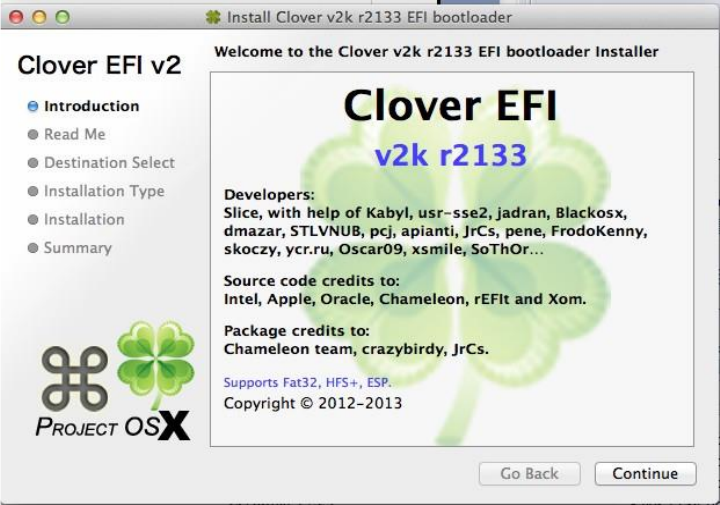
6. CLOVERX64.EFI itself is loaded in the BdsBoot.c / BdsLibBootViaBootOption ()
procedure. At this point in the program for displaying on the screen, you can already use the
standard procedure AsciiPrint ("Horror! \ N");
Option 2. Duet itself works, which can be checked by pressing the space bar immediately after
displaying 6 on the screen. Either we have a UEFI download, and there is no Duet, we have to run
CloverGUI, but it is not, or there is, but hangs.
The standard method Boot-> Debug = true does not suit you, because you need to track the place in
more detail.
In this case, in the Platform.h file, remove the comment on the 11th line
// # define DEBUG_ALL 2
or in the files of interest, in the upper lines, put DEBUG_xxx 2. In this case, all the output from the
DBG command ("Nightmare # 3 \ n"); will go to the screen. And in this way it will be possible to
interactively observe where the execution of the program will reach before it hangs.
Shl. Don't use Russian letters as I illustrated here! This does not work. With the transition to C ++,
Russian letters can be used in debugging
Option 3. Compile the debug version with breakpoints, run under QEMU with the special version
gdb installed. Dmazar once tried this path. In my opinion, these efforts are not worth the set goal. A
simple trace is always sufficient.
Option 4... When compiling, specify./ebuild.sh -D DEBUG_ON_SERIAL_PORT
and connect another computer to the serial port that can receive letters on the serial port (terminal in
Windows). The variant works on QEMU, if you specify the "-serial stdio" flag at startup
Installation
Using the installer
What is the installer for? To install the program! Why do it manually, the installer will do
everything more accurately than you yourself! The only condition is that you already have
MacOSX on this computer. One of the options is that you launched the installation DVD with a
different bootloader, and from the MacOSX installation interface, launched the installer. Depending
on the OS language, the installer will work in Russian, English, or even Chinese. Here are
instructions for the English version, because you can figure it out in Russian anyway, but I don't
know in Chinese either. The current version has 20 languages, including Indonesian, maybe anyone
needs it.
Khaki clover. Version 5.1, revision 512nine
Moscow, 2021y31
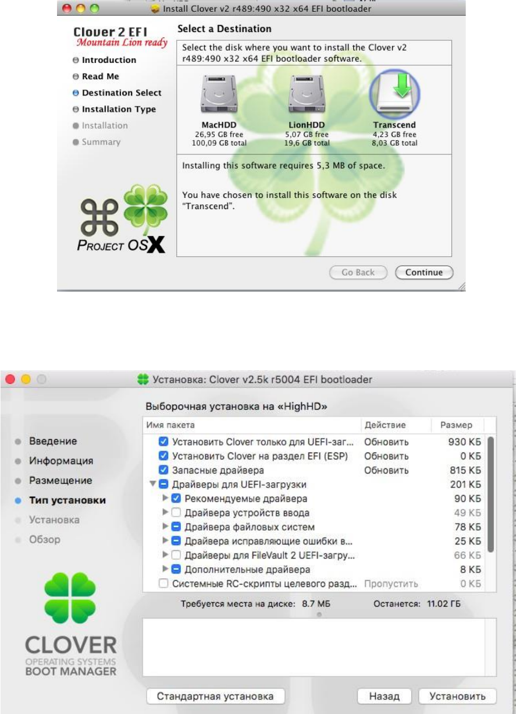
Khaki clover. Version 5.1, revision 5129
Moscow, 2021
32
So,
We follow the Continue and OK keys, read and agree with the license agreements (hmm, are they
there?), And come to the choice of what we install, where and why.
Change Install Location - choose exactly where to install the bootloader. If you intend to install
on an EFI partition, then just select the partition with the current system. MacHDD in this
sample. And a tick on "Install Clover in the ESP". The installer will find an EFI partition on the
same drive.
Customize or Standard Install - select download options
If you put the cursor on one of the lines, then in the lower field there will be a short description
of this option.
Khaki clover. Version 5.1, revision 5129
Moscow, 2021
33
Install Clover for UEFI boot only - this option cancels the installation of boot. In the English
version, Install for UEFI motherboard is written, and users, of course, tick this box. As a result, we
get, as usual, that Clover is not loaded. I am very sorry that the installer developers came up with this
item for their own purposes.People, for heaven's sake, don't tick this box, even if you have a
computer with UEFI BIOS. The UEFI boot you are interested in will still work!
Install Clover in the ESP (Install Clover on the EFI ESP partition) Is the best option when such
a partition is present (GPT partition scheme). The installer does not see this partition, therefore, in
the disk selection menu, point to a partition that lies on the same disk on which we want to install
the bootloader on the ESP. We assume that this section has MacOSX, where scripts, control panel
and updater will be installed (in Russian it is too long
"Automatic update program").
Before installation, you should unmount the ESP partition. And for Catalina, you may need
to give the command before starting the installer
sudo mount -uw /
which will allow scripts to write files to system folders.
If the system says that the installer cannot be opened because its author is an unidentified developer,
you can go to system settings, Security, and click the "Open anyway" button. Or you can run the
command in the terminal
sudo spctl --master-disable
However, it's not my business to teach you the tricks of using macOS.
Bootloader - this is the option with BIOS (option A), which uses CloverEFI, or with UEFI
(option B).
-
Don't update MBR and PBR sectors - do not update sectors because they already exist,
or simply for option B;
-
Install boot0af in MBR - boot using boot0af, i.e. search for the active section. The installer
will make the selected section active. The exception is installation on an EFI partition, it is
not made active, and boot0af, not finding an active partition, will load the boot file from the
EFI partition, which is what we need to perform legacy boot from a GPT disk, from an ESP
partition.
-
Install boot0ss in MBR - boot using boot0ss, i.e. search for an HFS + partition even if it
is inactive. The installer does not change the currently active partition. This is done for
configuration with an active Windows partition - he needs it.
Use Alternative Booting PBR - as it was said in the chapter "What is what", the PBR sector can be
with a pause of 2 seconds for pressing keys 1-9, or without it. With this option, we will set the
sector with a pause. This item is no longer in the installer;)
CloverEFI - this, as you can see from the list, is the choice of the bootloader bitness. Either 32 bits
or 64 bits. Also here is a special BiosBlockIO variant. This is a variant of CloverEFI-64, which has
a special name boot7, and is intended for computers with a non-standard SATA controller. This
driver works through BIOS, and, as a rule, works with any controller (BIOS should work with
them!). But there are also misfires, for example Dell Inspiron 1525. Another special variant is
boot7-MCP79. This is like the only working option for the MCP79 chipset, however there is
nothing specific to this chipset, it can work in other cases as well. This option was found by
Oscar09, who also proposed a YUSB patch for this chipset.
Drivers... The choice of drivers is explained above in the "What is what" chapter.
Install RC system scripts to main partition - These are the scripts rc.local and
rc.shutdown.local, which are executed by the OSX system at logon and logoff - required
Khaki clover. Version 5.1, revision 5129
Moscow, 2021
34
part of the entire Legacy Clover concept. For those who have a working NVRAM for UEFI boot,
these scripts are not necessary.
Install scripts on all other sections - if the computer has more than one MacOSX partition. The
installer is smart enough not to install them on Windows or Linux partitions.
Install Clover Control Panel - this control panel helps with updating Clover, choosing a theme
and setting NVRAM variables.
Installing the bootloader manually
It is needed in two cases: when catching fleas and with diarrhea. Firstly, when a person
knows well what he is doing and wants to control every step, not trusting the installer (but in vain!),
And,
secondly, when installing from under another OS, where the installer cannot be launched.
OSX
It is highly discouraged to do this for someone who does not know what a terminal is.
Installation to HFS + partition in MBR or hybrid breakdown... Why MBR? This is a very
standard situation when a computer already exists, and already with information, nothing can be lost,
you can only install a new bootloader.
Installing the MBR sector
cd BootSectors
sudo fdisk440 -f boot0 -u -y / dev / rdisk0
What's in this team?
fdisk440 - a special version of the fdisk utility, corrected to use only 440 bytes of the zero sector,
there is information that this is necessary for compatibility with Windows (wakeup problem),
which Apple did not take care of.
boot0 - the file described above in the chapter "What is what"
rdisk0 - the physical device on which you are going to install the bootloader. Make sure it really
has number 0.
These files are supplied with Clover. In the new version fdisk440 is excluded, primarily due to the
inability to compile it in a new environment. Now use dd
Khaki clover. Version 5.1, revision 5129
Moscow, 2021
35
instead, as shown for Linux. And you can make the partition active with the standard fdisk. But
you don't need this for GPT partitioning.
Setting the PBR sector
sudo dd if = boot1h2 of = / dev / rdisk0s9
boot1h2 - PBR sector file for the HFS + file system, differs from similar support for large boot files,
and the ability to select boot1,3,6 by hotkey. Details in the chapter "What is what".
rdisk0s9 - the ninth section on the selected device ... Why the ninth? And so that fools do not
spoil anything, stupidly repeating the written commands, there is probably no such section. And
you need to put a real number, for example, the first section.
Well, after the MBR and PBR sectors have been successfully written to the
selected device / selected partition, this partition should be made active fdisk440
-e / dev / rdisk0
> f 9
> w
> q
The nine in the second line is the section number again (there are four of them!) - draw a
conclusion. Now you can copy the boot file and the EFI folder to this partition to the root of the
partition.
Installation on a FAT32 partition.
Unlike the previous method, there is one subtlety here. The PBR sector must contain the section
geometry. This information is entered there during the partitioning process, so the loss of such
information is fraught with consequences. The sector setting method itself becomes more
complicated.
dd if = / dev / rdisk1s9 count = 1 bs = 512
of = origbs cp boot1f32alt newbs
dd if = origbs of = newbs skip = 3 seek = 3 bs = 1 count = 87
conv = notrunc dd if = newbs of = / dev / rdisk1s9 count = 1 bs
= 512
boot1f32alt - already mentioned in the chapter "What is what" - sector for installation on a FAT32
partition. But not FAT16! Be careful!
rdisk1s9 - again the ninth section on the first device. Plug in your numbers. The rest of the letters and
numbers in this recipe are not subject to discussion and revision.
The rest of the steps are the same as installing on HFS +.
For owners of hard drives with a sector size of 4k. Attention!
In the first and fourth commands, instead of bs = 512, you must write bs = 4096.
Shl. However ... this is not a fact! The installation with 512 worked fine for me with a 4k disk.
Installation on an exFAT partition
Starting with revision 3040, it became possible to install Clover on an exFAT format partition. For
example, I have an external HDD with this format, I can no longer repartition it, but as before,
there is nowhere to install Clover. Installing the PBR sector requires a special boot1-install utility
written by Zenith432. The command is simple
./boot1-install -u -y / dev / disk2s1
Basically, Zenith made both HFS + and FAT32 installed with this utility. It is important that the
corresponding sectors (boot1h, boot1f32, boot1x) are in the same folder. For EXFAT, the sector
is named boot1x. Option with pause boot1xalt.
Khaki clover. Version 5.1, revision 5129
Moscow, 2021
36
There is, however, one more point when setting these sectors. The volume where you want to
install the sector must first be unmounted! And this is possible only if the disk is not the system
one. Otherwise, boot from other media to perform this procedure.
Linux
There is also a terminal under Linux, and almost the same commands, but installation is possible
only on FAT32. The differences are as follows.
-
instead of rdisk1 there will be sdb - see your version of Linux for more details.
-
instead of fdisk440, you need to use the same dd to write the MBR
Windows
From under Windows, it also makes sense to install the bootloader only on a FAT32 flash
drive, for this you just need to run the script
makeusb.bat E:
where E: is the letter of your flash drive. It is not intended to have multiple sections. It's
Windows!
All files required for the script are included with Clover. However, the installer must first be
unpacked, or these files must be obtained directly from svn. They are in the edk2 / Clover /
CloverPackage / CloverV2 / BootSectors folder
After executing the script, the flash drive must be removed and reinserted, then copy the boot file
and the EFI folder to it.
Better yet, use BootDiskUtility.exe by Cvad, which will help you create a USB flash drive
from under Windows.
http://www.applelife.ru/threads/delaem-zagruzochnuju-clover-fleshku-s-macosx-iz-windows.37189/
Recommended installation options
I would personally recommend such options for installation:
1. The main hard drive is divided into GPT (GUID Partition Table). This is a modern scheme, most
correct for Mac OS, and supported by Windows 7 since. This scheme has an invisible ESP (EFI
System Partition) 200MB in size. By default, it is already formatted in FAT32 and does not need to
be reformatted, even harmful. This is where Clover should be put, both for legacy and for UEFI
download.
For UEFI boot, you just need to copy (or install by the installer) the EFI folder with all the
necessary contents. But in order for BIOS to see such a boot option, you must copy the file
/EFI/CLOVER/CLOVERX64.EFI to the file
/EFI/BOOT/BOOTX64.EFI, if not. To whom it is not clear, to do it in two steps: copy it to the /
EFI / BOOT / folder, and then rename it to BOOTX64.EFI.
To boot legacy, write the boot0af file to the MBR sector of this disk, and write the boot1f32 file (or
boot1f32alt with a pause) to the PBR sector of this EFI partition.
Do not make any section active under any circumstances!
Dell's laptop has American Megatrend EFI BIOS, and it does not allow legacy boot to GPT disk.
Alas! For the rest, there is such an opportunity, and in the installer we do this: (the screenshot is
outdated, but the meaning remains)
dd if = / dev / sdb count = 1 bs = 512 of
= origMBR cp origMBR newMBR
dd if = boot0 of = newMBR bs = 1 count = 440 conv
= notrunc dd if = newMBR of = / dev / sdb count =
1 bs = 512
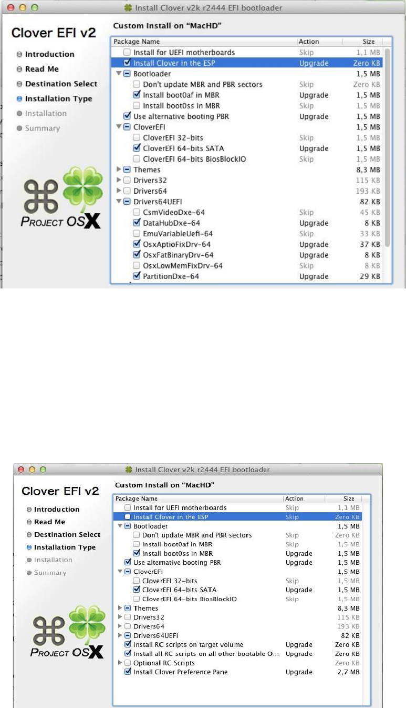
Khaki clover. Version 5.1, revision 5129
Moscow, 2021
37
2. Winchester is already broken down as FDISK Partition Scheme, commonly referred to as
ICBM. The old scheme, always used for Windows XP. On this disk, we have highlighted the
section where we want to install OSX for testing. We are not talking about UEFI-loading here, but
we can use Legacy Clover.
To do this, write the boot0ss file to the MBR sector. This sector will look for the HFS + partition
that we have made for the Mac, and will transfer control to it. Windows can remain the active
partition, it needs it more. In the PBR sector of this section, you need to write the boot1h file from
the Clover kit.I remind you once again that if you used the Chameleon before, then the same
file from the Chameleon kit is registered there, and it will not work with Clover. Must be
replaced!
In the installer the following checkboxes
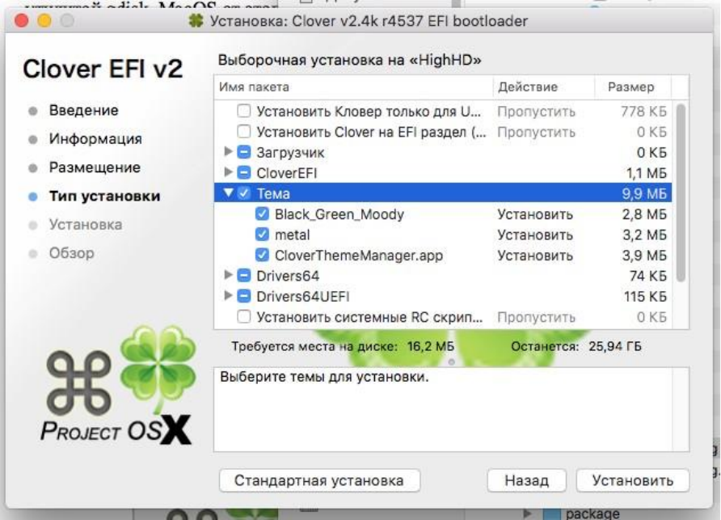
Khaki clover. Version 5.1, revision 5129
Moscow, 2021
38
3. You've decided to provide a separate hard drive for your Mac. Here there is an option to simply
choose by BIOS what to load, and prepare the disk according to the first scenario. Or put on the
main hard drive in the MBR sector the file boot0md. Its property is that it will search for an HFS +
partition across all hard drives, and in this case it will work as the second option.
Now take another look at the manual installation chapter.
And finally. Isn't it time to completely abandon Windows XP, and install Windows UEFI, for
example, the seven? An MBR disk can be converted to a GPT using the gdisk utility without losing
data. MacOS will only benefit from this, and we reinstall Windows one way or another every six
months. If anyone misunderstood, then Windows UEFI is perfectly installed by Clover on a
machine that does not have a UEFI BIOS.
Registration
Theme selection
Now we choose a theme. What is the topic? These are design elements: a banner, a background
image, images of icons and buttons, a font, united by a single artistic concept.
The installer has three themes, my cesium, a theme from Clovy, these are vector themes, and a
raster theme from Blackosx, for some reason he did not offer his SVG theme to the installer. In
addition to them, there are "Easter eggs", who saw, he knows, for the rest it will be a surprise. And
Clover also has a built-in theme from Clovy called embedded. If you don't put any theme, then this
one will still be available. And there is an application that online downloads you any theme out of
40 available on the gita. I will not go into more detail, everything is transparent
there.http://www.insanelymac.com/forum/topic/302674-clover-theme-manager/
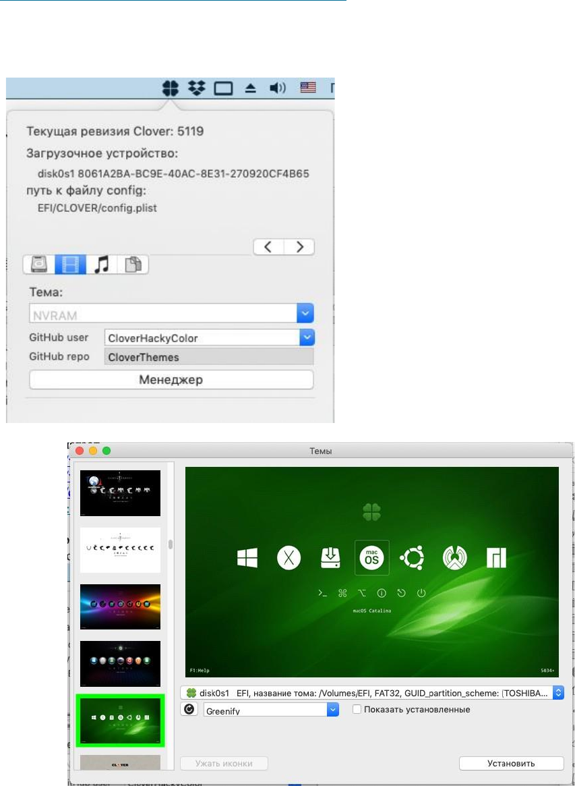
Khaki clover. Version 5.1, revision 5129
Moscow, 2021
39
In the modern version, you can specify the theme "random" and observe a different design with each
next boot.
Let's review the topics briefly. In reality, the range of topics is much wider, look at the forums for
who offers what.
http://www.applelife.ru/threads/themes-temy-dlja-zagruzchika-clover.36074/
http://www.insanelymac.com/forum/topic/288685-clover-themes/
http://clover-wiki.zetam.org/Theme-database
https://sourceforge.net/p/cloverefiboot/themes/
https://github.com/CloverHackyColor/CloverThemes
Now vector-sigma has made its own Clover Theme Manager inside Clover.app The button
looks like a Movie.
Choosing a theme
Khaki clover. Version 5.1, revision 5129
Moscow, 2021
40
Clover bootloader themes
Metal... By Slice. Topic # 1
Black-green... Author blackosx. The theme that comes with this installer by default.
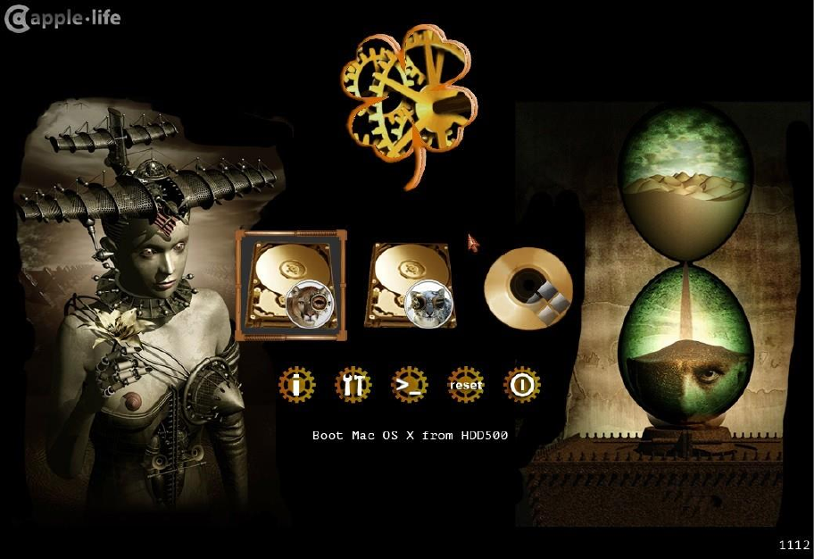
Khaki clover. Version 5.1, revision 5129
Moscow, 2021
41
steampunk... Author medik.
And dozens of others ... Creating your own theme is a special story with its own rules.
Configuring the interface in config.plist
Themes also include a number of parameters specified in the config.plist file. For older
versions, see the old instructions.
Interface settings are done in EFI / CLOVER / config.plist in the GUI section
<key> GUI </key>
<dict>
The interface can be graphical or textual (starting with revision 1764). For this it is written
<key> TextOnly </key>
<true />
Probably, only in Russia there are lovers of the text interface, Total Commander, Volkov
Commander, DOS, etc. etc. At your service!
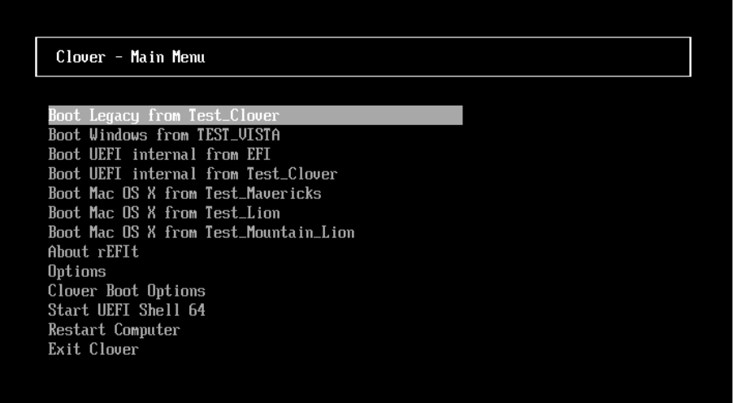
Khaki clover. Version 5.1, revision 5129
Moscow, 2021
42
If false, then Clover works in graphical mode.
The resolution of the text screen, here, as well as in Shell and on the boot.efi screen, can be set with
<key> ConsoleMode </key>
<string> 0 / Min / Max / some number </string>
The number can be found in your boot.log, or put Max - the maximum possible resolution will
be.
The design of the graphical shell depends on the selected theme. The default theme is selected
in a variable
<key> Theme </key>
<string> metal </string>
However, a theme can also be selected in the Control Panel, and that choice will be decisive.
If the wrong theme is specified there (there is no such theme.plist file in the specified path), then
the theme from the plist will be selected. If a non-existent theme is indicated there, then the screen
will display an embedded theme, the last option from Clovy. The theme can be changed in the
bootloader menu, there will be a list of installed themes (rev 1955), and you can set which one you
need. The interface will be repainted after entering the main menu. (revision 1936)
random - the theme will be randomly selected from the list of installed ones at each download.
One more point in choosing a topic. If your monitor has a resolution of, say, 2560x1600, the icons
and fonts on the screen will be too small. You have to choose a big topic. Starting with revision
4438, Clover will do this automatically. On a small monitor it uses a theme, say metal, and on a
large monitor, it will try to find the theme metal @ 2x , if any. The criterion for a "large" monitor is
that the number of lines is more than 1100, because for 1080 lines, a small topic is fine. A question
for designers when they will make large analogs of their themes. Scalable themes have been made
since 4862. Separate chapter.
As for this config item, it looks the same for raster and vector themes, the only
difference is in the name. Clover himself distinguishes one from the other by
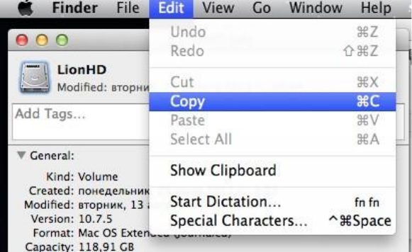
the contents of the folder. If there is theme.plist, then it is a raster theme. If theme.svg is there, then it
is a vector theme.
<key> EmbeddedThemeType </key>
<string> DayTime </string>
The options are Dark and Light. Introduced from revision 4644. Options were invented before
the invention of the clock, you could choose dark or light built-in themes. And now by the hour,
light during the day, dark at night. Introduced from revision 4773.
<key> Timezone </key>
<integer> 3 </integer>
Clover's modern revision, 4773+, introduces the concept of "time of day." At startup, Clover reads
the current time from the BIOS, we usually have it according to Greenwich Mean Time, and adds a
value from this parameter, a zone, to it. You can write with the +3 sign or, say, -5. This adds up to
local time. Then Clover determines if it is in the range from 8:00 to 20:00, then it is considered a
day, otherwise it is night. This affects the aforementioned inline theme, if DayTime is specified, it
certainly affects any vector theme, it has to determine what it affects, it affects the sound in any
theme. During the day, the sound from the sound.wav file plays, at night from the sound_night.wav
file. If no night sound is specified, the day sound plays.
<key> PlayAsync </key>
<false />
Starting with revision 4833, sound appeared in Clover with the AudioDxe.efi driver, the author of
Goldfish64, who does not want to deal with Clover, well, okay, he does not mind using his
solutions. PlayAsync determines whether the sound plays synchronously with Clover's work, or
asynchronously. That is, with synchronous playback, nothing works until the sound ends. With
asynchronous, the sound flows regardless of what is happening on the screen. That is, the sound
starts after the message on the screen ... scan entries ..., then the Clover interface appears, the sound
continues, then the boot.efi lines appear, the sound continues, then the kernel starts, and the kexts
are launched one by one. Starting with one of them, the sound is cut off. Well, that is, of course, if
the sound.wav file is long.
Clover 4862 had a bug, asynchronous sound hung up the computer. Starting from 4870 there are no
problems, you can set PlayAsync = true.
<key> CustomIcons </key>
<false />
If set to <true />, then an icon will be searched for each section with the operating
system.VolumeIcon.icns at the root of the section and used instead of the icons set by the
theme. It is very convenient to create such an icon using MacOSX tools. Highlight the disk icon and
make a copy-paste
Khaki clover. Version 5.1, revision 512nine
Moscow, 2021y43
Khaki clover. Version 5.1, revision 5129
Moscow, 2021
44
<key> ScreenResolution </key>
<string> 1024x768 </string>
you can set the desired screen resolution, more than the standard 1024x768, if there is such a
mode in the parameters of the video card and the screen itself. Clover tries to set the highest
resolution possible, however, he may be wrong. Check the list of available modes by boot-log.
If the graphics section contains PatchVBios = Yes, then you will have the maximum resolution
available for this monitor. In this case, the ScreenResolution parameter may be redundant. With
some configurations, the PatchVBios parameter can be fatal - a black screen with no signs of life.
There is one subtlety here. Clover must know the EDID of the monitor. Legacy Clover
tries to get it through INT10 BIOS calls, often successfully, sometimes not. UEFI Clover requests
data from the UEFI BIOS, which probably knows UNID for the integrated video card, and
probably does not know for the inserted one. See preboot.log, and if there is no EDID, then enter it
manually. See instructions below.
<key> ProvideConsoleGop </key>
<true />
Creates a GOP protocol for console mode, that is, so that the text output is not in text mode, as
they are used to doing in the PC BIOS, but in graphical mode, as Apple does.
In some Clover revisions, this parameter was duplicated with the ProvideConsoleGopEnable queer,
but starting from revision 5128 this parameter has been removed from the queer list and is only in
the GUI section with a slightly different name. The ProvideConsoleGop parameter value from the
GUI section will override the ProvideConsoleGopEnable parameter value from the queer list, if you
suddenly forgot to remove this parameter from the config when updating the bootloader.
It is better not to turn off the parameter, there are no adequate arguments in favor of turning it off.
<key> KbdPrevLang </key>
<false />
Enable if you want to preserve the system language when updating macOS using the built-in
NVRAM.
- this is the key to fix macOS language issues when using native NVRAM.
- this macOS bug has been around for a long time.
- The fix works only when using AptioMemoryFix or OsxAptioFixV3 without
EmuVariableuefi.efi, i.e. need iron NVRAM
- fix works using a language other than English.You can fix the
problems below using this switch:
<key> GUI </key>
<dict>
<key> KbdPrevLang </key>
<true />
<key> Language </key>
<string> en: 0 </string> <----- you want language
</dict>
Khaki clover. Version 5.1, revision 5129
Moscow, 2021
45
1. Mixed language in restart popup after macOS update.
2. Always Keep English when updating macOS in Recovery Mode even though the user is
already using a different language on macOS.
Added in revision 4719.
<key> Language </key>
<string> ru: 0 </string>
At the moment, setting the language makes sense only for the "Help" menu called by the F1 key.
However, this value is passed to the system, and may affect the default language.
<key> Mouse </key>
<dict>
</dict>
<key> Enabled </key>
<true />
<key> Speed </key>
<integer> 2 </integer>
<key> Mirror </key>
<false />
<key> DoubleClick </key>
<integer> 500 </integer>
Enabled - there are configurations when the mouse does not work, or even hangs, well, then it
can be disabled.
Speed 2 - cursor movement speed, reasonable values 2 - 8. Some mice require negative speed,
moving in the opposite direction. A value of 0 means the mouse is disabled.
Mirror - and also make the opposite direction along only one coordinate. DoubleClick 500 -
pause in milliseconds to define a double click. The value of 500 has been suitable for everyone
so far. Removed in new revisions.
In the Clover interface, you can see legacy and ufi bootloaders for installed operating systems. At
the same time, there can be several bootloaders on one partition. Maybe you don't need everything
Clover found, you just need to point to a real pair of systems. You can hide both individual sections
and entire loader classes from the interface. The following sections in the config:
Hide - hide volumes by name, or by their UUID.
<key> Hide </key>
<array>
<string> WindowsHDD </string>
<string> BOOTX64.EFI </string>
<string> E223FF7F-F2DA-4DBB-B765-756F2D95B0FE </string>
Khaki clover. Version 5.1, revision 5129
Moscow, 2021
46
</array>
This is an array of strings that are included in the fully qualified partition name, see boot.log. Thus,
you can remove unnecessary partitions from the menu, for example Recovery or Preboot.
Or vice versa, specify what to scan
<key> Scan </key>
<dict>
<key> Legacy </key>
<string> First </string>
<key> Entries </key>
<true />
<key> Tool </key>
<true />
<key> Linux </key>
<false />
</dict>
For Legacy (i.e. bootloaders launched from PBR), there are options for values
No, First, Last - do not show at all, place at the beginning of the list, or at the end.
Linux - do not look for Linux bootloaders on each partition, it takes a lot of time.
The interface can be configured more subtly if you understand how and what to do. For you the next
section (also in the GUI section)
<key> Custom </key>
<dict>
It contains arrays
<key> Entries </key>
<array>
<key> Legacy </key>
<array>
<key> Tool </key>
<array>
One element of the array contains a description of the selected item in the form of a dictionary
<dict>
<key> Volume </key>
<string> 454794AC-760D-46E82 </string>
<key> Type </key>
<string> OSX </string>
<key> Title </key>
<string> OS X 10.8.5 (12F36) Mountain Lion </string>
<key> InjectKexts </key>
<true />
<key> NoCaches </key>
<false />
<key> BootBgColor </key>
<string> 0x2C001EFF </string>
<key> Hidden </key>
<false />
<key> SubEntries </key>
<array>
<dict>
<key> Title </key>
Khaki clover. Version 5.1, revision 5129
Moscow, 2021
47
<string> Boot OS X 10.8.5 </string>
<key> AddArguments </key>
<string> -v </string>
</dict>
</array>
</dict>
And each menu item can contain more sub-items (SubEntries), which are different options for
calling the main member.
The code responsible for these parameters was developed by Apianti.
Description of internal keys:
• Disabled - disables the entire structure and it is not taken into account
• Volume - Volume name or GUID to be used when scanning the bootloader
• VolumeType - The type of volume that your user must match
recording. Can be a string of one type or an array of several types. Valid volume types: Internal,
External, Optical, FireWire
• Path - Location to scan for efi bootloader
• Arguments - Arguments to pass to the bootloader. Overrides the default boot arguments
in Boot / Arguments
• AddArguments - Adds default boot arguments. For SubEntry he
adds arguments to the main record
• Title - Changes the displayed title. Uses the format "Boot <Title> from
<VolumeName> "
• FullTitle - Sets the display title to “<FullTitle>†only without any format
• Image - The path to the custom image file. The search path is the root
write volume directory, theme directory, clover directory, clover volume root and finally OS icon
names
• ImageData - Embedded custom image. Can be in PNG format or
BMP, defined in the config as a binary array.
• DriveImage - Path to the custom drive image file. The search path is the root directory of
the recording volume, the themes directory, the clover directory, the root directory of the clover
volume, and finally the OS icon names
• DriveImageData - Built-in custom drive image. Can be in PNG format
or BMP
• Hidden - Hides the entry. If true, the entry can be displayed by pressing F3 in the Clover
menu. If the value is Always, the entry will never be displayed
• InjectKexts - Injects kexts. Valid options are Yes, No, or Detect. And also on
some Entry can be delivered. Use Detect to inject kexts only if FakeSMC is missing from
KernelCache or / S / L / E. For entries of type OSX, OSXInstaller, and OSXRecovery.
• NoCaches - Skip caches. For OSX, OSXInstaller and OSXRecovery records
Kernel - Set the priority of the Linux kernel scan. If this option is not specified, Clover will show
all found kernels. Valid options are Newest, Oldest, First, Last, MostRecent, Earliest. For
LinuxKernel records
All - any core Newest
- the newest Oldest -
the oldest
First - first found Last - last
found
Khaki clover. Version 5.1, revision 5129
Moscow, 2021
48
MostRecent - Newest version Earliest
- Oldest version None - Don't search
for kernels.
•
• Type - The type of OS to scan on. Valid types: OSX, OSXInstaller, OSXRecovery,
Windows, Linux, LinuxKernel. If the Type is not one of the listed, it will be considered as all
types.
• BootBgColor - Sets the background color of the boot screen. For OSX records,
OSXInstaller and OSXRecovery
• CustomLogo - Defines the boot screen logo style. For more information read Boot /
CustomLogo
• SubEntries - (Default: true) Disables subentries by default if
set to false. Can also be used to create custom nested records using the same structure as the
master record, any settings not set in the nested record will be inherited from the master record
• KernelAndKextPatches - Uses the same hierarchy and offers the same functionality as
and KernelAndKextPatches, so you can selectively apply patches to each entry. Only works with
version 2797 or higher
• Ignore - The entry will be ignored or not used, so no matter what
will affect
<key> ShowOptimus </key>
<true />
The task was simple. My BIOS spontaneously turns off Optimus on a laptop, and I want to see when
Clover boots up whether it's turned on or not, in order to press a key in time and correct the situation.
The criterion is the number of video cards in the system, or the first
Intel. Intel + Discrete = Optimus. On the screen the word Intel
Discrete only. The word Discrete appears on the screen. Very comfortably!
Design: theme.plist
Now the actual design in accordance with the selected theme. The theme.plist file is loaded from the
theme folder and is unique for each of them. The path for the metal theme is:
/EFI/CLOVER/themes/metal/theme.plist
The first theme parameters are copyright, like this
<key> Author </key>
<string> Slice </string>
<key> Year </key>
<string> 2012 </string>
<key> Description </key>
<string> Main metallic looking theme </string>
Next is the section with design parameters.
<key> Theme </key>
<dict>
The format of all the images mentioned is PNG, and it is necessary with the correct title. For
example, Preview saves files in the correct format, but not always. Sometimes you need to resave
through Photoshop.
Some of the interface elements can be excluded by the following set:
<key> Components </key>
<dict>
Khaki clover. Version 5.1, revision 5129
Moscow, 2021
49
<key> Banner </key>
<true />
<key> Functions </key>
<true />
<key> Label </key>
<true />
<key> Tools </key>
<true />
<key> Revision </key>
<true />
<key> MenuTitle
</key>
<true />
<key> MenuTitleImage
</key>
<true />
<key> Help </key>
<false />
</dict>
If <true>, then the element is present, otherwise not.
Theme Style (since 3586, by Needy)
<key> BootCampStyle </key>
<true />
By default, the refit text is written in a separate line, and it can be very long "Boot Recovery from
RecoveryHDD". But in BootCamp, as in the Chameleon, it is customary to write inscriptions
directly under the icons, but only briefly: MacOS, Linux, Windows, because otherwise it will not
fit. But this is true only if there are few sections, and each section has its own, unique bootloader.
If, for example, we have two systems, and one of them is closed on FileVault2, we will have the
following items
"Boot Recovery from RecoveryHDD"
"Boot macOS from RecoveryHDD"
"Boot macOS from SierraHDD"
The boot camp style is somehow uncomfortable here. So, you have a choice.
Screen background:
<key> Background </key>
<dict>
<key> Type </key>
<string> Crop </string>
<key> Path </key>
<string> MetalBack.png </string>
<key> Sharp </key>
<string> 0x80 </string>
<key> Dark </key>
<true />
</dict>
The Path parameter sets the name of the file (or rather the path!) In which the background image
is located on the whole screen. In this case, the screen may turn out to be smaller or larger than
the image, and what to do with this is determined by the parameter
Type
Crop - crop a large image to fit the screen, or fill with a background.
Tile - cover with mosaic tiles.
Scale - stretch proportionally so that the image takes up the whole screen and more, for cropping.
Khaki clover. Version 5.1, revision 5129
Moscow, 2021
50
Normal stretching produces square pixels, so some anti-aliasing is usually applied, however, this
anti-aliasing spoils the edges.
Edge detection is made in Clover, its value is determined by the parameter
Sharp
If 0 - no detection, the edges are blurred. The maximum value is 0xFF = 255 - no blur. 0x80 -
Creates some smart blur with sharp edge lines. Also paired with it is the parameter
Dark
If <true /> means you have a dark image with white lines, <false /> means a light image with dark
lines. This affects edge detection.
<key> Banner </key>
<string> logo-trans.png </string>
The banner is the central picture, there are size restrictions on it, depending on the screen size. For
example, in the dawn theme, the image is 672 × 190 pixels.
This figure can be considered as the maximum. The logo should either be made opaque if we are
not going to use a background image. Then the first pixel of the logo determines the background
color. Or the logo has an opaque element on a transparent background, and the entire screen is
covered with a background image. Trick from Eps: Make the top left pixel 1% opaque.
In new revisions "Banner" has parameters:
<key> Banner </key>
<dict>
<key> Path </key>
<string> logo_trans.png </string>
<key> ScreenEdgeX </key>
<string> left </string>
<key> ScreenEdgeY </key>
<string> top </string>
<key> DistanceFromScreenEdgeX% </key>
<integer> 10 </integer>
<key> DistanceFromScreenEdgeY% </key>
<integer> 10 </integer>
<key> NudgeX </key>
<integer> 8 </integer>
<key> NudgeY </key>
<integer> 5 </integer>
</dict>
Path - path to the file, including the folder, for example VariantA \ Logo.png
ScreenEdgeX - horizontal report point (left / right / center)
DistanceFromScreenEdgeX - the position of the banner, relative to the point of the report, as a
percentage of the screen size. This ensures correct positioning when the resolution changes.
NudgeX - 1% is a lot, for a 1920 screen there will already be 19 pixels, so in this parameter we
make a refinement in units of pixels.
Similarly vertically.
<key> Selection </key>
<dict>
<key> Color </key>
<string> 0xF3F3F380 </string>
<key> Small </key>
<string> Select_trans_small.png </string>
<key> Big </key>
<string> Select_trans_big.png </string>
<key> OnTop </key>
Khaki clover. Version 5.1, revision 5129
Moscow, 2021
51
<true />
</dict>
Color - color of line selection in the menu. The artist sets the color in accordance with the general
tone of the theme. The value 0x11223380 means the color red = 0x11, green = 0x22, blue = 0x33,
alfa = 0x80. The last number is the degree of opacity, 0x80 corresponds to 50%. 0x00 would mean
no selection. 0xFF will close the background image (letters on the opaque bar).
Big and Small are pictures that highlight the icons in the main menu in the upper row - large, and
in the bottom - small.
OnTop - location of the selection pattern (rev 1983). False - selection under the disk icon
(traditionally for Refit), True - above the icon (traditionally for Chameleon).
<key> Font </key>
<dict>
<key> Type </key>
<string> Load </string>
<key> Path </key>
<string> BoG_LucidaConsole_10W_NA.png </string>
<key> CharWidth </key>
<integer> 10 </integer>
<key> Proportional </key>
<true />
</dict>
Type - font type. There are two built-in fonts Black and White (rev. 3706+), and a dozen
downloadable ones - Load. In this case, the file name is specified in the following Path
parameter - BoG_LucidaConsole_10W_NA.png
For each theme, its author has chosen the font that best suits his idea, you should look in the attached
file.
The following conventions are adopted for font names (blackosx)
BoG - Black On Gray - black on a gray background.
LucidaConsole is the name of the original font. 10W -
letter width
NA - No Antialiasing. Thought out too.
The size of one character in the file is 16 pixels, however, the characters themselves take up less
space, so the next parameter is the optimal width, and this, again, depends on the author's intention.
Proportional - starting with revision 3217 it became possible to use proportional fonts. For those
not in the know, this is when the letter i takes up much less space than the m. A monospaced font is,
for example, Courier, proportional for example, Times. However, Clover is capable of compacting
monospaced fonts, but nevertheless, the result will be better with specially prepared ones. Here is,
for example, a picture
Khaki clover. Version 5.1, revision 5129
Moscow, 2021
52
compare the widths of letters i and m.
CharWidth 10 - you can use the width recommended by the font author, or you can change it in your
own way. 9 - tighter, 11 - less often.
Starting from revision 3537 this parameter affects the width of the text in the Options Menu, since it
always has Proportional = false, and the width of the letters is entirely determined by this parameter,
and the text in the information line is proportional, and is compressed in fact for each letter, even if
the width in the matrix is a lot more.
<key> Badges </key>
<dict>
<key> Show </key>
<true />
<key> Inline </key>
<true />
<key> Swap </key>
<false />
<key> OffsetX </key>
<integer> 32 </integer>
<key> OffsetY </key>
<integer> 32 </integer>
<key> Scale </key>
<integer> 7 </integer>
</dict>
Badzhik is a small drawing in the lower right corner of the main picture. Initially, it was conceived
that the main icon depicts a disk (as in a bootcamp), and a badge tells what operating system is
there.
Show - whether to show the badge.
Swap - change the meaning of the icon and badge. Now the icon represents the OS, and the badge
represents the device (in this case, it is not interesting to show it).
Inline - show badge in the line with information about the selected icon. This is always the OS,
regardless of the Swap parameter. See screenshot for iClover theme.
OffsetX and OffsetY - the offset of the badge from the upper left corner. If no offsets are
specified, the badge is located in the lower right corner.
Scale - the size of the badge in X / 16 units of the original size (in example 7/16).
Khaki clover. Version 5.1, revision 5129
Moscow, 2021
53
That is, in a standard theme, the size is 48 pixels, which corresponds to 6/16 of the standard icon.
<key> Scroll </key>
<dict>
<key> Width </key>
<integer> N </integer>
<key> Height </key>
<integer> N </integer>
<key> BarHeight </key>
<integer> N </integer>
<key> ScrollHeight </key>
<integer> N </integer>
</dict>
Since the settings menu may be longer than the vertical size of the screen, a scroll bar (Scroll)
appears in the menu, its parameters are set by the theme, and there are default parameters for the
pictures included in the theme.
<key> Anime </key>
<array>
<dict>
<key> ID </key>
<integer> 1 </integer>
<key> Path </key>
<string> logo_3D </string>
<key> Frames </key>
<integer> 15 </integer>
<key> FrameTime </key>
<integer> 200 </integer>
<key> Once </key>
<false />
<key> ScreenEdgeX </key>
<string> left </string>
<key> ScreenEdgeY </key>
<string> top </string>
<key> DistanceFromScreenEdgeX% </key>
<integer> 20 </integer>
<key> DistanceFromScreenEdgeY% </key>
<integer> 20 </integer>
<key> NudgeX </key>
<integer> 1 </integer>
<key> NudgeY </key>
<integer> 1 </integer>
<key> RelativeXPos </key>
<string> 50% </string>
<key> RelativeYPos </key>
<string> 10% </string>
</dict>
</array>
The theme can contain animated images (clips). A series of PNG images with sequential numbers
are supported.
ID - determines the use of this clip.
#Logo
(one)
#About
(2)
#Help
(3)
#Options
(4)
#Graphics
(five)
#CPU
(6)
#Binaries
(7)
#DSDTfixes
(8)
#BOOT Sequence
(nine)
#SMBIOS
(ten)
Khaki clover. Version 5.1, revision 5129
Moscow, 2021
54
#Drop ACPI Tables
(eleven)
#RC Scripts
(12)
#USB
(13)
#Themes
(14)
#Apple
(21)
#WinXP
(22)
#Clover
(23)
#Linux
(24)
#LinuxEFI
(25)
# BootX64.efi
(26)
#Windows UEFI
(27)
#Recovery
(thirty)
The title images in each submenu are animated, and this animation is also played on the selected item
in the main menu.
1-10 - list of existing settings submenus.
21-27, 30-39 is the Boot Options menu of details, invoked by a space on the icon in the main menu,
or by right-clicking.
Those. on this screen the Lion will be animated if ID 37 is set
Path - ML_Anim - The name of the animation, defines the name of the folder in which the
individual frames with names are located
ML_Anim_000.png
ML_Anim_001.png
ML_Anim_008.png
ML_Anim_014.png
In case of dropped frames, the last valid one will be used, i.e. frame 001 will be used as frames
002-007, and frame 008 will be used as 009-013. This is convenient if the picture does not
change in the plot during this time period.
Khaki clover. Version 5.1, revision 5129
Moscow, 2021
55
Frames - 15 - the total number of frames in the animation. Missing ones will be filled in according to
the above algorithm.
FrameTime - 100 - time interval between frames in ms. The variable interval is implemented using
dropped frames.
Once - if <true /> is specified, the animation will be played only once, until the main menu is
exited (right-click on milk on the main screen, or the Escape key). If <false /> is specified, the
animation is played in an infinite loop, the last frame is followed by a zero one after the same
interval, without an additional pause.
ScreenEdgeX - horizontal report point (left / right / center)
DistanceFromScreenEdgeX - the position of the movie relative to the point of the report, as a
percentage of the screen size. This ensures correct positioning when the resolution changes.
NudgeX - 1% is a lot, for a 1920 screen there will already be 19 pixels, so in this parameter we
make a refinement in units of pixels.
In the latest revisions, we began to experiment with changing the very arrangement of the theme
elements:
<key> Origination </key>
<dict>
<key> DesignWidth </key>
<integer> 1920 </integer>
<key> DesignHeight </key>
<integer> 1080 </integer>
With these parameters, we indicate what screen resolution the theme was originally designed for, in
order to correctly recalculate the arrangement of elements at a different resolution.
A large section on the location itself.
<key> Layout </key>
<dict>
<key> Vertical </key>
<true />
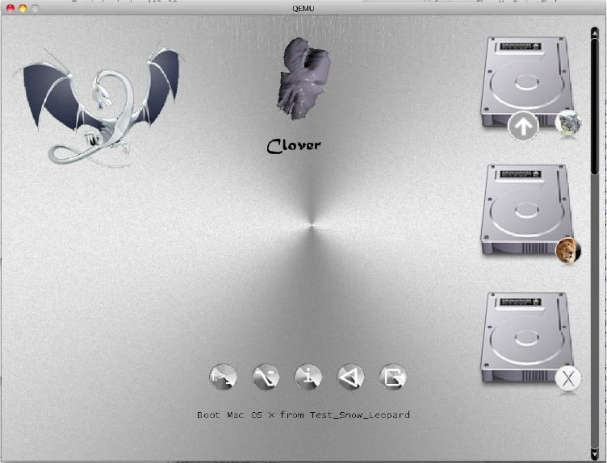
Khaki clover. Version 5.1, revision 5129
Moscow, 2021
56
<key> BannerOffset </key>
<integer> 80 </integer>
This is the distance from the banner to the main menu, sometimes it is necessary to replace it so
that the banner animation does not overlap with the main menu icons.
Similarly
<key> ButtonOffset </key>
<integer> 20 </integer>
<key> TextOffset </key>
<integer> 30 </integer>
<key> AnimAdjustForMenuX </key>
<integer> 30 </integer>
You can also scale the main menu icons
<key> MainEntriesSize </key>
<integer> 200 </integer>
The default is 128, as it was before.
With the change of icons, you can also change the distance between them
<key> TileXSpace </key>
<integer> 20 </integer>
<key> TileYSpace </key>
<integer> 20 </integer>
Khaki clover. Version 5.1, revision 5129
Moscow, 2021
57
You can also resize the selection.
<key> SelectionBigWidth </key>
<integer> 288 </integer>
The default is 144. It matters if the selection is in the background.
Vector themes
Why is it needed
The decision to create the design of the GUI Clover based on vector graphics arose from
one user complaint that they say you start from the same flash drive on different computers, on one
small screen, and then a large topic simply does not fit, but on the other a huge screen, and then the
usual the topic looks too small, and the text is generally unreadable. How to combine this? The
variant was created quickly, a theme with the @ 2x prefix. That is, the Clover config contains the
metal theme, and depending on the monitor resolution, either metal or metal @ 2x is loaded . The
disadvantage of this approach is that no one rushed to create duplicate topics. And in general it
turned out not too pretty.
Then I was thinking about making some truly scalable vector based themes. For those who
do not understand at all what the matter is, an example: a circle can be represented as a PNG file
with a completely specific size in pixels, or you can write the instruction <circle cx = ”100†cy =
”200†r = ”50”> and instruct the paint program to draw a circle on the screen with such a position
and such a radius in abstract units that will be recalculated into the required number of pixels
depending on the screen size. In the original, it could have been a plotter working in millimeters,
for example.
You cannot make a good design on some circles and squares, so here you need some kind
of vector graphics standard that has a large number of possibilities. An open source project like
Clover needs of course an open standard, well documented and supported by paint programs.
The choice is unambiguous - SVG graphics.
https://en.wikipedia.org/wiki/Scalable_Vector_Graphics
Now the next question is, how can I support it? It is the same to interpret these commands,
and to draw something corresponding, to put it mildly, is not an easy task. And then I find the
nanosvg project, https://github.com/memononen/nanosvg
It is open source, you can copy it to yourself, it contains only two files in the C language, that is,
you can use it almost without changes. The author stopped development, despite numerous
suggestions for improvement, like it's done like this, use it as it is. But this is not enough for me, I
need more. In addition, it will not work almost without changes, in Clover it is elementary to use the
standard C functions sin (), malloc (), sscanf (), qsort () and so on, I still had to make their
implementation within the framework of EDK2. I did that, and also looked at the pull requests, with
very good suggestions for improvement, and made my own additions. So, I can rasterize vector
images and display them on the screen. Now you need to use them to create a scalable theme. It is
desirable not to spoil the support for existing PNG themes.
But theory without practice is dead, I cannot support a topic if I do not have a sample of
such. The theory is this at the first stage. Let the whole theme be a single file named theme.svg,
which by any viewer, for example GoogleChrome, Safari, or simply by spacebar QuickLook, will
look like the Clover interface. And already Clover will deal with this file, how to parse it into icons,
and display them as he displays a raster theme. Thanks to Clovy, he accepted the challenge and
began to draw such a file, and as we worked, we already found together what needs to be done in
Clover, and how it should be
Khaki clover. Version 5.1, revision 5129
Moscow, 2021
58
the file is formed so that ends meet. About this on the forumHow to Make a Vector Theme
in Adobe Illustrator
Mscaling the theme means that on a screen of any size the interface will
look the same, icons will occupy the same percentage of the screen size, in the sense of the
screen height. The theme does not scale in width, in favor of keeping squares. That is, on
screens with different aspect ratios, the picture will be different, strictly speaking, but the circle
remains a circle, and a square remains a square.
Vector themes also have the advantage of using fonts. In a bitmap theme, there was only one
font, somehow proportional or not, while in a vector it can be several different fonts, really
proportional, and very smooth. In the future, more improvement is possible, for example, with
animation, in general, perspectives unfold.
Although yes, I understand, those who set Timeout = 0, or TextOnly, or embedded, this
chapter is not at all interesting.
How to make a vector theme
First, you need to install a drawing program in which it will be convenient for you to
draw, and which can export this drawing to SVG version 1.1 format. Although with some
improvements over this standard. There are options, you can look in Google what is offered on
the market. My quick overview
1. Adobe illustrator... The higher the version, the better. This is what I was looking for in the first
place for compatibility. It is comfortable and functional.
2. Inkscape... Advantage # 1 is its free, and, accordingly, legality. SVG is its native format, but it
has a number of its SVG extensions that are not supported by anyone else. Hooray! Version 1.0
now works in macOS from 10.11 to 10.15!
3. LibreOffice Draw... Also free and legal. But it's kind of clumsy and the resulting SVGs
aren't very good. Doesn't support embedded SVG fonts.
4. CorelDraw... I just don't know, I didn't use it.
5. BoxySVG... A cute, unpretentious, cheap program that allows you to create and edit individual
SVG drawings, and immediately control the generated code, in contrast to older brothers that will
generate the code only during the final export. The lack of the program is the lack of means of
solving the problem (I want to see how to do this?). In the chandelier it is clear, you draw, and you
see what happens as you draw, as you edit, but here you need to have a good imagination to guess
the result. I will not consider other programs, at your discretion, just follow the version 1.1
standard, and the recommendations below.
Secondly, the theme.svg drawing must consist of well-defined components with well-
defined names, since Clover selects pictures from there by name. Full list:
Background, Banner, selection_big, selection_small, selection_indicator, pointer,
scrollbar_background, scrollbar_holder, checkbox, checkbox_checked, radio_button,
radio_button_selected,
by some mistake scrollbar was defined with a minus instead of an underline, because this is
corrected in bitmap themes, in vector ones.
Disk icons
vol_internal - internal hard drive; vol_external -
external media (usually USB); vol_optical - CD /
DVD drive;
vol_clover - boot disk (not used?)
Khaki clover. Version 5.1, revision 5129
Moscow, 2021
59
vol_internal_hfs - a disk partition with the HFS + file system;
vol_internal_apfs - disk partition with APFS file system;
vol_internal_ntfs - disk partition with NTFS file system;
vol_internal_ext3 - disk partition with EXT file system; vol_recovery
- partition of Recovery, RecoveryHD and other operating system
icons
os_clover
os_legacy
os_unknown
os_tiger Mac OS X 10.4 Tiger
os_leo Mac OS X 10.5 Leopard
os_snow Mac OS X 10.6 Snow Leopard
os_lion Mac OS X 10.7 Lion os_cougar
OS X 10.8 Mountain Lion os_mav OS
X 10.9 Mavericks
os_yos OS X 10.10 Yosemite
os_cap OS X 10.11 El Capitan
os_sierra macOS 10.12 Sierra
os_hsierra macOS 10.13 High Sierra
os_moja macOS 10.14 Mojave
os_cata macOS 10.15 Catalina
os_bigsur macOS 10.16 / 11.x Big
Sur
os_win Mandatory, used when there is no icon for the current OS Windows (on a volume with NTFS
file system)
os_vista Windows Vista, Windows 7, Windows 8, Windows 10
os_freedos
os_freebsd
os_linux Mandatory, used when there is no icon for the current OS Linux (on a volume with the
EXT file system)
os_ubuntu
os_suse
the rest of the Linuxes may someday be listed.
Second row service icons
tool_shell, func_clover, func_options, func_about, func_reset and func_shutdown as well
func_help, which is displayed when calling F1 help.
Thirdly, the location of these icons inside the theme.svg file plays a role for the preview, but
not for Clover himself. Except for the Banner. This is the central picture, and it is not just in a fixed
place in the center of the screen, as it was in bitmap themes, the banner is now positioned on the
screen in the same way as the theme intended. An example can be seen in the cesium topic. Neither
the flower nor the dragon is centered.
Another point, all sorts of buttons and scrolls in general are not needed in the preview, as well
as numerous icons of axes and disks, so they should be hidden from the preview, but left available for
Clover. The visibility = ”hidden†attribute helps, which, however, Clover will ignore when he needs
to draw this icon on the screen.
Vector themes support the new "night design" feature.
The built-in clock will tell Clover what time it is, recalculate it to local time, and the time from
8:00 to 20:00 is considered day, and the rest is night. More on this later. In vector themes, all
Khaki clover. Version 5.1, revision 5129
Moscow, 2021
60
icons can be duplicated with _night appended to the name.
Khaki clover. Version 5.1, revision 5129
Moscow, 2021
61
For example, besides the main banner with the name “Banner”, you can draw a second picture with
the name “Banner_night”. And so with all icons, for example "pointer" - "pointer_night", "os_mac"
- "os_mac_night". They can differ simply in terms of illumination, or they can be completely
different. So we actually have two different themes in one, one is displayed during the day, the
second at night.
Each icon must also contain an invisible rectangle that defines its borders. The reason is
simple, the icon may contain less content than its size, and Clover needs to know its full size,
which must be scaled. The name of such a rectangle necessarily contains "BoundingRect_", but
since the names must be unique, there are some other symbols, just numbers, or the full name of
the icon itself.
Example.
<g id = "tool_shell" transform = "translate (300, 600)">
<rect visibility = "hidden" id = "BoundingRect_ts" y = "0" width = "64" height = "64"
/>
<g transform = "matrix (0.55 0 0 0.55 15 10)">
<use xlink: href = "# knopka" width = "85.5" height = "85.5" />
</g>
<g transform = "matrix (0.55 0 0 0.55 25 43)">
<text class = "st35 st36 st38 st39"> $ _ </text>
</g>
</g>
We decipher word by word.
<g ...> - a group of images that make up one total. Its name is "tool_shell", which Clover uses to
draw the Shell icon in the second row. transform = "translate (300, 600)" - sets the shift of the icon
on the preview. Clover ignores.
The second line <rect ..> is the same service invisible rectangle that sets the size of the icon, in our
case 64x64. The unit is pixels, compared to the size of the theme itself, which is 1600x900.
Accordingly, on a screen with a height of 1800, the icon will be 128x128, for example.
In the third line, the images are merged again, and the overall transformation: size in relation to the
above boundaries, and the offset within them. The fact is that in a graphics editor it is convenient
for you to draw on a different scale, but then you need to bring the scale of individual icons to the
scale of the whole theme.
<use xlink: href = "# knopka" width = "85.5" height = "85.5" /> - this was not in the
original nanosvg project, and in general it is probably from SVG2.0 - support for symbols. The
point is not to draw the same object several times, but just use the same drawing. I have all the
second row buttons using the same image named "knopka". And the next image is superimposed on
it, already with its transformation, and as its text, consisting of two letters, for example "$ _". The
classes for this text define the font, size, fill color, and stroke color. The classes are defined in the
theme.svg file itself, somewhere in the beginning.
There is a problem with the transformation in the Chandelier, probably as in other vector
editors. It tends to recalculate the coordinates of all internal objects in the image, instead of leaving
the transformation attribute outside the group. I did not learn how to deal with this, so I drew all
objects at the origin, and then wrote the scale and offset simply in a text editor. Maybe someone
will have better luck with this exercise. Why is it important? Because, either in Clover, or in the
preview, the parts begin to creep in different directions, and catching them with Illustrator's means
further spoils the whole picture.
Khaki clover. Version 5.1, revision 5129
Moscow, 2021
62
SVG support in Clover
Far from ideal. But we can see that a lot of what Illustrator has done is working as expected.
Shapes: <rect>, <circle>, <ellipse>, <polyline>, <polygon> and just <path>
Shapes can be combined into <g> groups and <symbol> symbols. Moreover, each union can contain
a name and transformation.
Group - static union as defined and displayed. For Clover, the names of the groups are essential,
because he divides the picture into icons, which he then uses to draw the GUI.
So <g id = "vol_internal"> defines a group of shapes that together create an image of the internal
disk. Within this group, the required <rect id = "BoundingRect_001" width = "128" height = "128"
/> element. It is needed to determine the size of the group, in order for Clover to correctly position
this image, because the internal drawings will most likely be smaller than the overall size. The name
of each element is unique in one design, so the name of such a rectangle must contain a
BoundingRect, and any additional symbols for uniqueness. This does not contradict the SVG
standard, but is necessary for Clover to manipulate individual elements.
Symbol - dynamic join. Browsers will not display the symbols defined in the theme, this set of
objects is a template for other objects to use.
It will be used by the <use> operator Example:
<symbol id = "HDIconBase" viewBox = "- 64 -64 128 128">
<rect id = "BoundingRect_3_" x = "- 64" y = "- 64" class = "st0" width = "128" height
= "128" />
<path id = "bottom_3_" class = "st1" d = "M26,49h-52c-3.9,0-7-3.1-7-7v-66c0-
3.9,3.1-7,7-7h52c3.9,0,7 , 3.1,7,7v66C33,45.9,29.9,49,26,49
z "/>
<path id = "top_3_" class = "st2" d = "M26,47h-52c-2.8,0-5-2.2-5-5v-55c0-
2.8,2.2-5.5- 5h52c2.8,0,5 , 2.2,5,5v55C31,44.8,28.8,47,26,47z "
/>
</symbol>
Here a symbol is defined that consists of two closed curves (path) and one service square. Styles /
classes are defined in the file, I omit here for brevity.
Draw this shape inside the icon
<g id = "osx_moj">
<rect id = "BoundingRect-2" class = "st0" width = "128" height = "128" />
<use xlink: href = "# HDIconBase" width = "128" height = "128" x = "-
64" y = "- 64" transform = "matrix (1 0 0 -1 64.0876 64)" style =
"overflow: visible;" />
xlink: href is a link and points to a symbol called HDIconBase.
Unlike the SVG standard, Clover does not understand group references, only characters. Alas and
ah, but this must be taken into account when creating your design. That is, transfer the group to a
symbol, and link to that symbol.
Fillings (fill) and strokes (stroke).
I can't say anything concrete about strokes. It is made by the founder of the nanosvg project
Mikko Memononen, it seems to fully comply with the standard, and even supports dash-line
(dash-line). But let's talk about fillings.
A simple option is a uniform color fill. The color is given by 16-digit RGB constants: fill: "#
ffcc00" is orange. There are both real numbers and percentages.
Above the standard in Clover color names: fill: "white" and many more names, I will not
copy and paste a hundred words. Use the SVG standard, and if anything, see the Clover
source.
Another type of fill is gradients.
Khaki clover. Version 5.1, revision 5129
Moscow, 2021
63
linearGradient - here 100% compliance with the standard.
radialGradient - unfortunately, the focus point is not yet supported, so the radial gradient in
Clover may not look exactly the way it was designed. conicGradient - this is not in the standard
(yet?). There is a discussion on the Internet, very interesting drawings made with this method are
exhibited, but the W3C is not yet considering including this in the standard, and therefore browsers
do not support it. How can I not support if my Metal theme is created with conical gradients ?!
And now the cesium theme! Another question, how did I draw it then? In Photoshop, he can do it.
Adobe didn't include this feature in Illustrator, probably pending standardization. Syntactically the
same as radialGradient, only the color changes not along the radius, but along the angle, assuming
angle = 0 is stop = "0.0", and angle 360 is stop = "1.0". Well, intermediate values, as much as you
want. If you need to rotate the starting angle, there is gradientTransform = "rotate (45)" and other
transforms as in the standard.
For design, you can make a radial gradient, and then turn it into a conical gradient with a text
editor. The preview, unfortunately, is only in Clover. If anyone finds a second browser with
support for cones, please let me know.
Dithering... And this is also not in the standard, although, in my opinion, it suggests itself. A short
theory, for those who have never heard. If the gradient contains a series of points with a brightness
of 150, and behind them with a brightness of 151, then a step will be visible, but there are no
intermediate values (noticeably on the Clovy theme, a background with circles in early versions of
Clover, without dithering support). The method consists in displaying either 150 or 151 randomly,
with a probability of 0.3, instead of the required 150.3 point. With a large number of points, it will
add up to 150.3!
The standard does not have a sample syntax for this case, so we developed our own. And it needs
the clover namespace.
Code:
<radialGradient clover: ditherCoarse = "16" id = "GrayRadialBackground_5_" cx =
"441.2867" cy = "0.7502" r = "1.0023" gradientTransform = "matrix (5.400000e-14 768 -
874.24 4.700000e-14
1338.8547 -338690.875) "gradientUnits =" userSpaceOnUse ">
<stopoffset = "0" style = "stop-color: # 7C7C7C" />
<stopoffset = "1" style = "stop-color: # 5E5E5E" />
</radialGradient>
The digital parameter coarse - coarseness, determines the length of the points view, between what and
what to choose. For large pictures, as a background, we chose the value 16.
For icons, 1 is enough, and it looks very smooth and almost imperceptible. The default is 0,
which means the method is canceled.
I will show the illustrations later, however, at different times they were laid out on the sleigh.
Fill with a pattern
Here we are very far from complete realization. In the standard, the image will repeat as long as
necessary to fill the filled shape. Only one option is made in Clover:
The template is a PNG image, and it fills the desired outline to scale to fill it completely. In this
case, the bitmap will be scaled with anti-aliasing according to the dithering algorithm.
Why is it needed? The fact is that many Apple logos are photographs, that is, a raster, and we
have options: vectorize the raster (not very nice), draw something completely different, or include
the raster in the vector. I did so.
Illustrator has such a function
1. We include the PNG drawing in the design. (embed).
2. We translate the shape into a pattern (pattern)
3. In the properties of the filled shape, specify the fill with a pattern with such and such an ID.
Khaki clover. Version 5.1, revision 5129
Moscow, 2021
64
The only problem is that the drawing does not multiply, as it should be according to the specification,
but fills all the space with scaling to the size of the canvas.
Oh yeah, another limitation
<pattern id = "pattern_1234".>
According to Clover's rules, the pattern identifier must include the word pattern, otherwise Clover
has no way to understand what we fill the shape with. However, using inline PNG doesn't make
much sense, in this case it was better to just make a PNG theme.
Clips (clipPath)
Unlike the original nanosvg project, my clips are supported, but the algorithm is not mine, but taken
from the pull request. I don’t know how it works, and how adequately. Here in the cesium theme
the Clover is drawn using them, and it turned out almost correctly. There is some difference in the
rendered image compared to the preview, only I don't know who is to blame, the support for the
clips, or the rendering itself. In general, you can use it, but carefully.
Texts and fonts
The original nanosvg project lacks this feature, but Clover is unthinkable without text, so I did it.
Normal viewing of images with fonts embedded in the image file is available in Safari, but is
absent in Chrome and Explorer. They show the text with their fonts, of course with distorted
design. Embedding SVG fonts is available in Illustrator, but is absent, for example, in BoxySVG,
which can only embed TTF fonts. I do not even remember about other vector editors, for everyone
one way or another problem.
Clover's vector theme has its own set of rules.
1. Can use multiple fonts, whereas bitmap themes only have one. One of them, the main one,
should be included in the theme.svg file itself. You can include everything, just the file will swell
in size. The rest can be put in the theme folder, next to the theme.svg file. However, in this case,
we will lose the font differences in the preview. That is, Clover will see all the fonts, Safari only
built-in, and Chrome will not see any.
2. At the moment it is possible to define three text styles (font, size and color): for the Options
menu, for the Help and About screenshots, and for messages at the bottom of the screen, the same
header style. Maybe in the future we will expand the use of styles. This is done with a special
trick.
<g id = "MenuRows" class = "st0"> <text class = "st1"> Menu </text> </g>
<g id = "HelpRows" class = "st0"> <text class = "st2"> Help </text> </g>
<g id = "MessageRow" class = "st0"> <text class = "st3"> Boot macOS from HDD
</text> </g> Here classes st1, st2, st3 must define text styles, and class st0 just hide unnecessary
text from the preview (opacity: 0;).
As you can see, everything is according to the standard, just the purpose is different. Here we write
the text only to indicate styles. And Clover himself will find what to write with these styles, by the
group id, that is, for the "MenuRows" menu, and for help on F1 "HelpRows".
3. But in general, text can be used in icons as an element of decoration. You can use any font, but
make it inline, and, maybe, embed this font with the "only used glyph" option - that is, not the
whole font, which weighs 500kb on average, but Chinese and all 30MB, but only those used in
the icon letters.
Moreover, you can apply transformations to the text: rotation, skew, etc. You can make a stroke
without filling, the letters will be "white" - I don’t remember what it’s called, in Windows there is
no such style, in Mac it is, and since the furry years.
Khaki clover. Version 5.1, revision 5129
Moscow, 2021
65
Unlike the standard, there is no textPath - the arrangement of text along a line, for example, along
the perimeter of a circle. Maybe one day...
The text is sized in pixels. That is .st8 {font-size: 16px;}, but that's in the size of the theme's design.
In real work, the theme will be scaled to the size of the monitor, along with the size of the letters.
Thus, for a theme in the 1366x768 design, text with a size of 12px looks fine, on a monitor with
vertical 2144 it will be almost 36px.
4. For my design, I need a font that contains special unicode characters. For example ⌘. I found
such a font, it takes up 30MB, where do I need it? I only take individual symbols from there, and
implement them into my theme. The illustrator, seeing an unfamiliar font, replaces it with his own,
and kills everything I did in my theme ...
The first rule is that the font used must be installed on the system, not just on the theme. But, I do
not have those fonts that are installed on the system in the form of SVG. Meansso ......... call
my built-in font ArialMT, Helvetica and the like, I insert glyphs from the font I need, the
illustrator shows it incorrectly, because in a different font, but at least it does not kill. Quicklook
shows correctly, and I can use the pens to move the letters to where they should be.
I also have labels right on the icons. I did this just by the illustrator, with his font, and indicated to
export the font "used only glyphs". At the same time, when updating the theme, I run the risk of
receiving less of a letter that I have not used before. This means that we must embed text in the
original design of the theme, containing all English letters, numbers and punctuation marks. Like
this
<text class = "st1"> ABCDEFGHIJKLMNOPQRSTUVWXYZ ...
and so on. Then Illustrator won't forget about all these symbols when importing a theme. Well,
put this text in an invisible group.
5. After you use Illustrator, and ask him to embed the SVG font, only the fonts used, or anything
at all, then you should check what he did there.
Here's an
example Code:
<font horiz-adv-x = "2048">
<! - Helvetica is a registered trademark of Linotype AG ->
<! - Copyright: Copyright 2018 Adobe System Incorporated. All rights reserved. ->
<font-face font-family = "MyriadPro-Regular" units-per-em = "2048" underline-position =
"- 155" underline-thickness = "101" />
<missing-glyph horiz-adv-x = "1298" />
<glyph unicode = "" horiz-adv-x = "569" />
<glyph unicode = "E" horiz-adv-x = "1366" d = "M175,1469l1071,0l0, -180l-877,0l0, -
446l811,0l0, - 170l-811,0l0, -498l892,0l0, - 175l-1086,0z "/>
<glyph unicode = "H" d = "M161,1469l201,0l0, -607l764,0l0,607l201,0l0, -1469l-
201,0l0,687l- 764,0l0, -687l-201,0z" />
Firstly, bbox = "" is missing in the font-face element, and it is strictly necessary, look for what
should be there, type in with your hands.
Second, scroll through the list so that each glyph has a horiz-adv-x = "***" attribute, which
determines the width of the letter, that is, where the next one can be drawn.
There is a default value, but it does not always correspond to the real width of the letter, as a result,
such a letter will run over its neighbor.
In this example, the letter H does not have such an attibut, and its real value is 1479, which is not
obvious. You can take from a letter about the same width, and you can make a little more, or a
little less, through a series of experiments.
Khaki clover. Version 5.1, revision 5129
Moscow, 2021
66
Theme attributes
Clover needs its own additions compared to the standard, and this is done in its own namespace. To
do this, add at the beginning of the file
xmlns: clover = "https://sourceforge.net/projects/cloverefiboot"
This is a legal operation. Then we can add illegal things, but with the prefix clover: as we did
with Dithering above.
Another example is conical gradients, this is a deviation from the standard, so I had to introduce an
additional attribute, allowed by the standard, but indicating to Clover that he needs to act outside the
box.
<radialGradient clover: conic = "1" id = "knopkaUp" cx = "14142.7324" cy = "-
40300.8711" r = "37.5003" gradientTransform = "matrix (-0.706 -0.7082 0.7082 -0.706
38525.8438 -
18436.5312) "gradientUnits =" userSpaceOnUse ">
<stopoffset = "0" style = "stop-color: # FFF8D4" />
<stopoffset = "0.1" style = "stop-color: # EEE0B4" />
<stopoffset = "0.5" style = "stop-color: # 161616" />
<stopoffset = "0.9" style = "stop-color: # EEE0B4" />
<stopoffset = "1" style = "stop-color: # FFF8D4" />
</radialGradient>
The radial gradient is described here, and this is how it will be understood by other people's
programs. But Clover will interpret it as a conical gradient.
And now the general theme settings
<clover: theme
BootCampStyle = "0"
SelectionOnTop = "0"
SelectionColor =
"0x80808080"
NonSelectedGrey = "0"
VerticalLayout = "0"
BackgroundScale =
"crop" BackgroundDark
= "1" BackgroundSharp
= "0x80"
Badges = "show"
BadgeOffsetX = "0x0"
BadgeOffsetY = "0xA"
BadgeScale = "0x10"
LayoutBannerOffset =
"10" LayoutButtonOffset
= "0" CharWidth = "16"
AnimeFrames =
"39" FrameTime =
"2000"
Version =
"100500" Year =
"2018"
Author = "Me"
Description = "My cool vector theme for Clover" />
All of these attributes are copied from the bitmap theme settings and serve the same purpose.
However, not all of those attributes are needed and used.
Conclusion
Vector themes are more promising, and I no longer have the slightest desire to deal with
raster themes. There is night mode, beautiful fonts, and scaling. It is possible to make dynamic
Khaki clover. Version 5.1, revision 5129
Moscow, 2021
67
pictures such as animation, only on a different level. To do this, deviations from the SVG standard
need to be implemented again. But creating a vector theme is much more time consuming, and only
three have done it so far: Clovy with the theme
Khaki clover. Version 5.1, revision 5129
Moscow, 2021
68
Clovy, I am with the cesium theme, and blackosx with the BGM_SVG theme, although he has not
yet decided on the final version. We tested the animation on his theme, but now for some reason he
took it off, probably in anticipation of vector animation. The fourth designer did the trick: pkdesign
with a Purple Swirl theme. Our regiment has arrived!
Cesium theme, daytime look.
Night view
Khaki clover. Version 5.1, revision 5129
Moscow, 2021
69
Configuring hardware
Creating the config.plist file
Actually, Clover does the configuration automatically. But the machine is never perfect, so
the user can change various parameters through the config.plist file, or simply in the Options menu
when working in the graphical interface. Do you think you can tweak your settings better than a
vending machine? Well, try it!
This is an xml file, however, at the moment it is convenient to think of it as a text file. You
can edit this file with a text editor or a specialized program such as PlistEditor or Xcode, if
available. Now the Clover package includes the Clover.app program, which has a plist editing
function, no worse than the mentioned programs. Use it! Together in Clover, a version of this
config is distributed with commented out settings, so that you can see which settings exist in
principle, but when used in this form, they will not be taken into account. Examples:
<key> #SuspendOverride </key>
<false />
The hash # means that the given key is excluded from the config. Clover uses the default
setting.
<key> GUI </key>
<dict>
<key> #Custom </key>
<dict>
And here the whole Custom section is excluded.
As a general rule, if you do not know what value should be given to some parameter, exclude this
parameter from the file altogether, or put #. Don't leave the parameter empty! And even more so, do
not put a value that you do not understand!
The following option for making such a config for your computer is offered:
− install the sample file supplied by default, it contains only safe parameters;
− boot into the Clover graphical shell and go to the Options menu (there is such
button in the bottom row, or simply by pressing the "O" key);
− use the up / down / enter / escape keys to walk around the entire menu, and try to
understand what they write there, and why;
− that we correct it clearly, we leave the incomprehensible as it is.
− we boot into the system. If it fails, we repeat the operation, but after changing the
parameters, until complete success.
Logging into the system, go to the terminal, and type the command
cd ~ / App / clover-genconfig> config.plist
Assuming you have previously put genconfig utility in ~ / App folder. In this way, you get
an almost complete config.plist with your most successful parameters, with which you were
able to boot.
Attention! The clover-genconfig utility depends on the Clover revision!
Starting with revision 5100 we have the Clover.app program which has the same genconfig function,
and this utility is now deprecated.
A little more manual work for complete perfectionism. Below is a description of the config
parameters.
Khaki clover. Version 5.1, revision 5129
Moscow, 2021
70
All parameters are grouped into groups: ACPI, Boot, CPU, Devices, DisableDrivers, GUI, Graphics,
KernelAndKextPatches, RtVariables, SystemParameters, SMBIOS, BootGraphics.
Boot
<key> Timeout </key>
<integer> 5 </integer>
the bootloader entered the GUI and paused for 5 seconds before starting the system by
default. If during this time the user presses any key, time reporting will stop. Options: if 0 sec - the
GUI is not called, the system starts immediately, however, if you press the space bar before, we will
go to the GUI.
-1 (minus one) - the bootloader enters the menu, does not attempt to start.
A pause for 25 seconds in the config is made by default so that the user can admire the animation.
Timing and auto start occurs only if the correct DefaultVolume is specified, and not the one in the
default config. It happens that due to heavy animation the timer ticks slower than 1Hz, don't be
alarmed, it depends on the theme.
The timeout does not work if the default system is not defined in NVRAM. Go to the system, to the
system panel "Boot Disk", and reboot into it. Next time the timeout will work!
Option with Timeout = 0 can be replaced with option
<key> Fast </key>
<true />
In this case, additional saving of loading time is made by not loading the interface and its
elements. Those. already without a chance to go to the GUI. And without a chance to fix
something in case of an error. Saving a whole second will surely enrich you ?!
The system will immediately start loading from the partition specified in the next parameter
<key> DefaultVolume </key>
<string> MacHDD </string>
the name of the section, as you named it, as you see it in the bootloader log. However, the
name can also be set in NVRAM after reboot from the "Startup Disk" control panel. The name set
in NVRAM takes precedence. There is an option "LastBootedVolume". That is, we will boot from
the volume from which we loaded last time. If the parameter is not specified at all, then only from
the control panel.
You can also define a default bootloader
<key> DefaultLoader </key>
<string> bootmgfw.efi </string>
That is, if there are several bootloaders on one partition, then in this way we will select the one
required to boot by default. In this example, we assume to load UEFI Windows by default. If not
set, boot.efi. Again, the "Boot Disk" will override this setting for the reboot time, thus ensuring
that Windows autoruns through the Mac panel. Unfortunately, there is no such service in
Windows, you can return to the Mac only manually.
<key> Legacy </key>
<string> PBR </string>
Khaki clover. Version 5.1, revision 5129
Moscow, 2021
71
Legacy Boot, required to run old versions of Windows and Linux, is very dependent on the
hardware, on the construction of the BIOS, so several algorithms have been developed, and the
choice of the algorithm is made in this vein. Options:
LegacyBiosDefault - for those UEFI BIOS with LegacyBios protocol.
PBRtest, PBR, PBRsata - variants of the PBR boot algorithm, who is lucky with which.
In general, it was not possible to achieve unconditional work of the legacy boot. It is easier and
better to forget about the legacy systems and install UEFI versions of the systems. The oldest is
Windows 7-64, and I personally see no reason to stick with WindowsXP. Does someone have a 32
bit onli processor still working? Well, good luck then!
<key> LegacyBiosDefaultEntry </key>
<integer> 0 </integer>
Additionally, for UEFI boot, you can specify from which hard drive to boot (not only from the
first).
<key> Arguments </key>
<string> -v arch = i386 </string>
These are arguments that are passed to boot.efi, and it, in turn, passes some of them to the system
kernel. The specific list of kernel arguments should be found in the Apple documentation. The list of
arguments required by boot.efi itself can be found in the com.apple.Boot.plist manual.
The most famous are the
following Kernel =
mach_kernel.amd slide = 0
darkwake =
0 nvda_drv
= 1
For UEFI booting to a 10.8 or 10.9 system, slide = 0 is required. Since revision 1887
it is added automatically when needed. Starting with revision 4369 there is an
AptioMemoryFix driver, and you don't have to write slide with it, it means automatic
calculation.
Starting with revision 3712 (actually later due to bugs), in the Details menu, called by space, you
have the opportunity to select the desired arguments from the list with the mouse:
L"arch = i386", // 0
L"arch = x86_64", //one
L"-v", // 2
L"-s", // 3
L"-x", //4
L"nv_disable = 1",
//f
ive L"slide = 0", //
6
L"darkwake = 0", // 7
L"-xcpm", //8
L"-gux_no_idle",
//ni
ne L"-gux_nosleep",
//te
n L"-gux_nomsi",
//el
even L"-gux_defer_usb2",
//12 L"keepsyms = 1",
//13
L"debug = 0x100", //14
L"kextlog = 0xffff",
//fifteen L"-alcoff",
//16
Khaki clover. Version 5.1, revision 5129
Moscow, 2021
72
L"-shikioff", // 17
L"nvda_drv = 1" //18
Shl. In Clover 4200 and above, the number of arguments is reduced to purely nuclear, otherwise the
menu is too long, and many of these arguments are not particularly needed by anyone.
Khaki clover. Version 5.1, revision 5129
Moscow, 2021
73
<key> Debug </key>
<false />
Previously, this key was called Log, which caused confusion as to why and how.
Setting the value to <true /> will seriously slow things down, but it will give you the opportunity
after reboot to find out what the problem was, because each step will be accompanied by writing the
debug.log file to disk. And if you started with a flash drive, then on it. But it will work even slower
with a flash drive. The real figure is 10 minutes just to enter the GUI. But if everything hangs for
you, then you can click Reset, and then look for the file
/EFI/CLOVER/misc/debug.log, in which all logs for all downloads are cumulatively written while
this parameter is set. Starting with revision 3063, you still won't sit at the black screen - you will see
the loading process on the screen! But if you do not like the extra inscriptions on the screen, then
you can insert
<key> NoEarlyProgress </key>
<true />
Removes labels before loading the bootloader interface, for example "Welcome to Clover"
<key> CustomLogo </key>
<true /> OR <false /> OR <string> Apple / Alternate / Theme / None / Path </string>
OR
<data> PNG / BMP / ICNS base64 data </data>
true - default style
false - prohibit the logo
Apple - apple gray on gray
Alternate - alternative apple white on black
Theme - set by theme
None - no logo, but there is a background
Path - path to the logo file
<data> - the figure is encoded as base64 and contains PNG data.
<key> XMPDetection
</key>
<string> -1 </string>
The parameter specifies whether to detect XMP at boot. It depends on the BIOS, and mainly affects
the correct detection of the installed memory. In addition, numeric values 1 or 2 are possible - which
XMP profile should be used. Perhaps in the future this profile will be used for other purposes as
well.
<key> Secure </key>
<true />
"Safe Boot". This invention by Microsoft caused a hot response in the computer world, they say, on
new computers only Windows 8 will work, and in the world of Hackintosh they cried "the end of
hacking!" But everything turned out to be not so sad. Of course, BIOS manufacturers have provided
disabling this function. And also provided for uploading certificates. For me, for example, these
BIOS settings do not affect the success of the download.
Khaki clover. Version 5.1, revision 5129
Moscow, 2021
74
Apianti decided to do a little more. Let's, they say, sign Clover using some kind of "Signing Tool"
utility, download the certificate, and let the BIOS work in SecureBoot mode. I don't understand
anything about this, so I just quote what has already been done in Clover, without comment.
Hopefully comments will be added in the future.
<key> Policy </key>
<string> Deny / Allow / Query / Insert / WhiteList / BlackList. / User </string>
Deny - download only signed files.
Allow - download any
Query - ask the owner
Insert - insert the signature into the
WhiteList database - admit by the BlackList
- exclude by the list
User - check the lists first, and then ask the user. The syntax is
<key> WhiteList </key>
<array>
<string> SOMEPATH.efi </string>
</array>
<key> BlackList </key>
<array>
<string> USB (0x1) / HD (0x0,0x1038833 ...) \ EFI \ BOOT \ BOOTX64.efi </string>
Khaki clover. Version 5.1, revision 5129
Moscow, 2021
75
</array>
You may also need a key to ignore hibernate, for the simple reason that the image is good, but the
technology itself does not work on this computer.
<key> NeverHibernate </key>
<false />
Or maybe we are very happy with Hibernate, and do not want to hang around for five seconds
waiting for this to happen. Then we write
<key> SkipHibernateTimeout </key>
<true />
Second hibernate method:
<key> StrictHibernate </key>
<true />
This only works if there is a hardware NVRAM, but it is compatible with FileVault2 technology,
where the old method does not work. Any news. Lilu + HibernateFixup cakes allow you to save
nvram.plist when you go to Hibernate, that is, they partially emulate the work of hardware NVRAM,
and thus help to use StrictHibernate with mode 25 on computers with emulated HBRAM.
<key> RtcHibernateAware </key>
<true />
Key for safe operation of the RTC during hibernation. By vit9696, questions to him. He claimed
that this is the only way for 10.13.4 systems, but in my 10.13.6 the key is still stored in NVRAM.
Nevertheless, it is necessary to put <true> for other reasons, not related to RTC, but to a different
wake-up algorithm in 10.13.6.
<key> HibernationFixup </key>
<true />
Author: lvs1974, explained in his thread how it works and when. Something like the
above situation when there is no hardware NVRAM.
<key> SignatureFixup </key>
<true />
When going into hibernation, the system leaves a signature in the image, which is then checked by
boot.efi. With this key, we wanted to correct it. Probably in vain. It's more correct to leave the default
just zero, and it works. In my opinion, this key is not needed.
And sometimes the system tries to fall into the recovery mode, but at the same time it boots from
the wrong disk, after all, we have many systems, this is Hackintosh. To get out of the enchanted
ring in the config, write
<key> NeverDoRecovery </key>
<true />
With FileVault2 technology, it became possible to use hotkey, but for this you need to undo the
assignments already made in Clover.
Khaki clover. Version 5.1, revision 5129
Moscow, 2021
76
<key> DisableCloverHotkeys </key>
<false />
Disables all hotkeys in the bootloader menu. A list of all hotkeys can be found by pressing F1 in the
bootloader menu.
BootGraphics
<key> DefaultBackgroundColor </key>
<string> 0xF0F0F0 </string>
Background color when loading Mac OS X when an apple appears with a loading bar. Specified
in HEX format.
<key> EFILoginHiDPI </key>
<integer> 1 </integer>
Includes HiDPI for apple with download bar when booting Mac OS X.
<key> UIScale </key>
<integer> 1 </integer>
Scaling apple size with loading bar when booting Mac OS X.
SystemParameters
<key> CustomUUID </key>
<string> 511CE200-1000-4000-9999-010203040506 </string>
Unique identification number of your computer. If you do not supply this key, some of the
hardware information will be generated, but if you want complete control over what is happening,
write your 16-digit numbers.
But, for heaven's sake, don't copy my model numbers! They are no longer unique, there are a lot of
fools who copied them!
<key> InjectSystemID </key>
<false />
The same number will be injected in a different way, and in the properties of the system it will be
transformed into something else. The point of this operation is to exactly match the UUID
generated by the Chameleon. To do this, set <true />, and as CustomUUID we use the value that is
present with the Chameleon in the registryIODeviceTree: / efi / platform => system-id... Then in
the profiler we will see a different value, but the same as before with the Chameleon.
New users no longer know what "as before ..." is. They are already with Clover. It is almost
always enough to put <true /> in this parameter and no custom. If, however, a non-unique number
is generated, then it will be difficult to understand where the legs of the problem grow from. So
you better put it false.
<key> BacklightLevel </key>
<string> 0x0101 </string>
This property is injected into the system and the system is aware of its existence. However, the
effect is only noticeable on very rare configurations. What is it? Monitor brightness ... as the
name suggests. This property is also read from NVRAM, and, by default,
Khaki clover. Version 5.1, revision 5129
Moscow, 2021
77
the value set by the system is used. The value specified in the config, or set in the menu, will
override the default value.
Starting with revision 1865, additional Clover keys were introduced:
<key> InjectKexts </key>
<string> Detect </string>
Loading cakes always occurs if there is no FakeSMC in the cache. Otherwise, it is
assumed that all kexts are in the cache.
Whenever possible, the system starts with a cache, and it is up to the system to recognize whether
it is possible to use the cache, or whether it needs to be recreated. If the value is Yes, then Clover
will force-inject kexts, even if they are in the cache.
Do not! Better put
<true />
This can also be done in the Details menu, invoked by the spacebar on the system icon. These keys
are analyzed by the FSInject.efi driver, its presence is required, although in general the keys are
loaded from the Clover folders and without it. But the loss of interdependencies is possible. In
revision 5125, OpenCore is responsible for loading kexts, so FSInject is not needed, and Detect is
not needed.
<key> NoCaches </key>
<true />
This option worked on systems prior to 10.7. This is loading only kexts, without caches. In general,
a strange desire to write this parameter to the config. Probably someone else did not load. But
today the parameter is useless, the system is loaded from the cache anyway.
<key> NvidiaWeb </key>
<true />
Sets the flag for loading the Nvidia Web driver, the default value, which you can change in the
Clover interface in the Details menu called by the space on the system icon. The old boot-arg
method only worked before the Captain. In Sierra and above, this method does not work, therefore
it is moved to a separate item in the config.
SMBIOS
This group of parameters is needed to mimic your PC under Mac. Clover will do this
automatically, based on the detected CPU model, video card, and mobility attribute. However, you
may want a different choice. Take the MacTracker program and select the Mac model that you like
best, and then search on the Internet, or by familiarity, for all the numbers and serials from this
model. There is nothing special to comment on. These options are not for dummies. If you know
them, change them, it won't work at random. You can't calculate them either.
<key> ProductName </key>
<string> MacBook1,1 </string>
SMBIOS.table1->ProductName
You can specify only the name of the product, and Clover will calculate all other parameters
corresponding to this model from its own tables. The rest of the parameters do not need to be
entered, however, if you want other parameters than the default, enter them too.
Khaki clover. Version 5.1, revision 5129
Moscow, 2021
78
New parameters will be given priority. However, the list of names familiar to Clover is limited, only
83 models, I will not list.
For other options, fill in all fields manually. If you used a model unknown for Clover, then all
fields will be initially filled with data from MacPro3,1, iMac13,1 starting from revision 3900, and
then overwritten with your data, if you gave them. Except for BoardVersion, which will
automatically repeat the model.
If the model is not specified, then Clover will substitute something from this list, see in the menu how
you are satisfied with this choice. Change at your discretion.
Serial numbers are desirable to enter your own. You can take an exemplary one and change one
letter in the middle. This usually goes away. The first three and the last four cannot be changed.
<key> SmUUID </key>
<string> 00000000-0000-1000-8000-010203040506 </string>
SMBIOS.table1-> Uuid
It looks like it makes sense to write the mac-address of your network card here (the last six pairs of
characters). This GUID will also be used if CustomUUID is not specified. Better not to set this
parameter.
<key> Family </key>
<string> iMac </string>
Same as model but without model number.
<key> FirmwareFeatures </key>
<string> 0xC0001403 </string>
SMBIOS.table128-> FirmwareFeatures
These numbers are outside the scope of the SMBIOS standard, this is something specific to
Apple. In different real Macs, you can find different numbers, there is no description
anywhere, except that in the bless source you can find
&& (featureFlags & 0x00000001)) {
contextprintf (context, kBLLogLevelVerbose, "Legacy mode suppported \ n ");
Therefore, we also need to have an odd number here. In the newer revisions of Clover, Sherlock made
an automatic calculation of the "best" value. I don't know what it affects.
Vit9696 has done some work to define these bits, see
https://github.com/acidanthera/EfiPkg/blob/master/Include/IndustryStandard/AppleFeatures.h
<key> PlatformFeature </key>
<integer> 3 </integer>
SMBIOS.table133->PlatformFeature
This parameter is found in real Macs and is used by the Captain, however, it affects what has not
yet been found.
If the value is not specified, then table 133 will not be created.
<key> BoardSerialNumber </key>
<string> C02032101R5DC771H </string>
SMBIOS.table2->SerialNumber
This parameter Clover supplies one specific one. You must substitute your numbers. It is needed for
iCloud and iMessage to work. Length is required 17 letters,
Khaki clover. Version 5.1, revision 5129
Moscow, 2021
79
capital Latin and numbers. The number assigned to Clover has most likely been banned for
a long time.
<key> BoardType </key>
<integer> 10 </integer>
SMBIOS.table2->BoardType
This parameter was introduced for MacPro, which has not 10 - Motherboard, but 11 -
ProcessorBoard, apparently for historical reasons. The meaning is not obvious, but on the System
Profiler it is noticeable.
<key> BoardVersion </key>
<string> MacBook1,1 </string>
SMBIOS.table2->BoardVersion
Yes, a model should be written here too.
<key> BiosReleaseDate </key>
<string> 05/03/10 </string>
This is the Boot ROM release date listed in the BiosVersion key.
<key> Mobile </key>
<true />
Actually, Clover always correctly calculates whether a given platform is mobile (i.e. battery
powered, requiring energy savings) or not. And the parameter is needed if, for some reason, we
want to deceive the system, indicate that we have no battery, or vice versa.
<key> ChassisType </key>
<string> 0x10 </string>
SMBIOS.table3-> Type
This parameter serves as an indirect indication of whether we have a mobile platform Here is a table
according to the SMBIOS standard
MiscChassisTypeOther = 0x01,
MiscChassisTypeUnknown = 0x02,
MiscChassisTypeDeskTop = 0x03,
MiscChassisTypeLowProfileDesktop = 0x04,
MiscChassisTypePizzaBox = 0x05,
MiscChassisTypeMiniTower = 0x06,
MiscChassisTypeTower = 0x07,
MiscChassisTypePortable = 0x08,
MiscChassisTypeLapTop = 0x09,
MiscChassisTypeNotebook = 0x0A,
MiscChassisTypeHandHeld = 0x0B,
MiscChassisTypeDockingStation = 0x0C,
MiscChassisTypeAllInOne = 0x0D,
MiscChassisTypeSubNotebook = 0x0E,
MiscChassisTypeSpaceSaving = 0x0F,
MiscChassisTypeLunchBox = 0x10,
Clover selects the value as shown in real Macs according to the model you choose. What does this
affect, besides mobility - I do not know.
<key> ChassisAssetTag </key>
<string> LatitudeD420 </string>
SMBIOS.table3->AssetTag
Khaki clover. Version 5.1, revision 5129
Moscow, 2021
80
This field in real Macs is never filled in, so we can use it for our needs, for example, link it to
the HWSensors3 project.
<key> SmbiosVersion </key>
<string> 0x0300 </string>
Apple has its own SMBIOS standard, which does not coincide with others, previously it was most
similar to the 2.4 standard, and Apple inserted such a number. But in terms of meaning, it was
more similar to 2.6, so Clover previously set the number 2.6. Now on real Macs you can see the
figure 3.0, but this is a lie, the standard is still 2.x. Nevertheless, we can put our own figure, it
seems that it does not affect anything.
<key> BiosVersion </key>
<string> IM131.88Z.F000.B00.1907241303 </string>
This set of numbers and letters determines whether your hackintosh will ask for a BIOS update like
a real one. But you don't need that, so you want to put the last values here if you know. And by
default, Clover will give out its own numbers, which are updated with each revision. You do not
have to enter your numbers, but simply update the Clover.
<key> EfiVersion </key>
<string> 288.0.0.0.0 </string>
Likewise, but I'm not sure if this figure affects the need for an update. Displayed as Boot ROM
Version. Either BiosVersion or EfiVersion is used on different models.
<key> BiosVendor </key>
<string> Apple Inc. </string>
<key> BoardManufacturer </key>
<string> Apple Inc. </string>
<key> FirmwareFeaturesMask </key>
<string> 0xFFFFFFFF </string>
<key> LocationInChassis </key>
<string> MLB </string>
<key> MemoryRank </key>
<integer> 2 </integer>
<key> Version </key>
<string> 1.0 </string>
<key> Manufacturer </key>
<string> Apple Inc. </string>
What the parameters listed above are responsible for (BiosVendor, BoardManufacturer,
FirmwareFeatureMask, LocationInChassis, MemoryRank, Version, Manufacturer) can be
understood from their name. It is better not to set them manually unless you know for sure what
these changes will lead to. It is better to delete or comment out these parameters and Clover will
automatically generate them when the system boots, trust it.
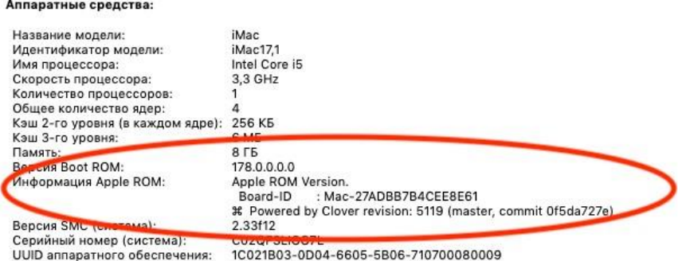
Khaki clover. Version 5.1, revision 5129
Moscow, 2021
81
<key> NoRomInfo </key>
<false />
Clover can generate SMBIOS.table11 with its own firmware numbers. It is very convenient to see
these values in About Mac (AppleROM Information).
Oddly enough, on real Macs this information is not, although there is such a table. If anyone
wants to look real, set this NoRomInfo key to <true />.
<key> Trust </key>
<true />
The parameter serves to resolve the dispute between SMBIOS and SPD, whose memory parameters
are considered more accurate, in addition to the fact that internal checks are also carried out there.
The default is true, which means SMBIOS (DMI) values are more accurate.
If, with neither true nor false, you cannot get the "correct" memory mapping in the system, you have
the opportunity to write everything manually (starting from revision 1896)
<key> Memory </key>
<dict>
<key> Channels </key>
<integer> 1/2/3 </integer>
<key> SlotCount </key>
<integer> 24 </integer>
<key> Modules </key>
<array>
<dict>
<key> Slot </key>
<integer> 0 </integer>
<key> Size </key>
<integer> 2048 </integer>
<key> Frequency </key>
<integer> 1600 </integer>
<key> Vendor </key>
<string> Some Company </string>
<key> Part </key>
<string> 123456ABCDEF </string>
<key> Serial </key>
<string> ABCDEF123456 </string>
<key> Type </key>
<string> DDR / DDR2 / DDR3 </string>
</dict>
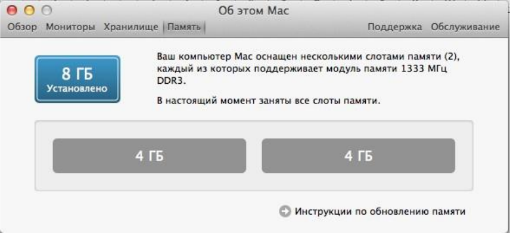
Khaki clover. Version 5.1, revision 5129
Moscow, 2021
82
...
<dict>
<key> Slot </key>
<integer> N </integer>
<key> Size </key>
<integer> 2048 </integer>
<key> Frequency </key>
<integer> 1600 </integer>
<key> Vendor </key>
<string> Some Company </string>
<key> Part </key>
<string> 123456ABCDEF </string>
<key> Serial </key>
<string> ABCDEF123456 </string>
<key> Type </key>
<string> DDR3 </string>
</dict>
</array>
</dict>
Some clarifications:
Channels - the number of memory channels. Very old computers had one channel. On modern two.
There are separate configurations (Clarkdale, for example) where there are three channels, that is,
three-channel memory.
SlotCount - the total number of slots where you can insert memory sticks. Displayed in the About
window. Now we draw an array of modules, describing only occupied slots. We don't even mention
the empty ones. In the Slot key, write its number from 0.
We write the size in megabytes and the speed in megahertz. We do not leave empty fields.
Only capital letters, numbers, minus signs and periods are allowed in the serial number (Serial) and
in the inventory number (Part).
On this, let me close the question with the correctness of memory mapping in the system.
(and still there was a poodle that said that it was not displayed as he prescribed! In reality, he
prescribed it incorrectly)
<key> Slots </key>
<array>
<dict>
<key> Device </key>
<string> Nvidia </string>
<key> ID </key>
<integer> 2 </integer>

Khaki clover. Version 5.1, revision 5129
Moscow, 2021
83
<key> Type </key>
<integer> 16 </integer>
<key> Name </key>
<string> PCIe Slot 0 </string>
</dict>
This registers PCI devices in the System Profiler. This is how it looks:
To fill in these properties, write in the config
<key> SMBIOS </key>
<dict>
<key> Slots </key>
<array>
<dict>
<key> Device </key>
<string> Nvidia </string>
<key> ID </key>
<integer> 2 </integer>
<key> Type </key>
<integer> 16 </integer>
<key> Name </key>
<string> PCIe Slot 0 </string>
</dict>
<dict>
<key> Device </key>
<string> LAN </string>
<key> ID </key>
<integer> 3 </integer>
<key> Type </key>
<integer> 1 </integer>
<key> Name </key>
<string> Ethernet </string>
</dict>
</array>
And Clover will generate such tables. In order for the corresponding _SUN properties to appear in
the DSDT, if they are not already there, you must set the patch mask for these devices. For this
example, this is
<key> ACPI </key>
<dict>
<key> DSDT </key>
Khaki clover. Version 5.1, revision 5129
Moscow, 2021
84
<dict>
<key> Fixes </key>
<dict>
<key> FixDisplay_0100 </key>
<true />
<key> FixLAN_2000 </key>
<true />
<key> NewWay_80000000 </key>
<true />
</dict>
If you write these properties manually, then they must correspond to the ID
Device (GFX0)
{
…
..
Name (_ADR, Zero) // _ADR:
Address Name
(_SUN, 0x02)
Device (GIGE)
{
Name (_ADR, Zero) // _ADR:
Address Name
(_SUN, 0x03)
Avoid ID = 0x00 and 0x01 due to optimizations in Zero and One. Clover may not be able to handle
such a patch.
At the moment, this trick is only possible with devices ATI, NVidia, LAN, WIFI, Firewire
These are predefined names, Clover will find a device that matches that name.
If you want a more accurate match, then first look in your OEM SBMIOS, which you can get from
the DarwinDumper report, which tables you have # 9, which SUNs are tied to which devices. Then
fix the DSDT to match those assignments and add your own.
Example:
Handle 0x0905, DMI type 9, 17 bytes
0000: 09 11 05 09 01 a6 08 03 03 02 00 04 02 00 00 00
0010: fe
System Slot Information
Designation: Ethernet
Type: x1 PCI Express x1
Current Usage: Available
Length: Short
ID: 2
Characteristics:
3.3 V is provided
Hot-plug devices are supported
Bus Address: 0000: 00: 1f.6
That is, I have an Ethernet controller at the address 0000: 00: 1f.6 and it is supposed to have
_SUN = 2 (highlighted in green).
This device is in DSDT, but it doesn't have the _SUN property!
Device (GLAN)
{
Name (_ADR, 0x001F0006) // _ADR: Address
We must edit! Maybe in the future, Clover will learn to do this automatically.
Slot-> Type is a slot type from the list PCI, PCIe x1, PCIe x2, ... PCIe x16, which are encrypted for
short with numbers 0, 1, 2, ... 16
In this example PCIe x1 is encrypted as Slot-> Type = 1. But since it is for this device that
table number 9 already exists, you do not need to write it to the config, it is enough to register
in DSDT
Device (GLAN)
Khaki clover. Version 5.1, revision 5129
Moscow, 2021
85
{
Name (_ADR, 0x001F0006) // _ADR: Address
Name (_SUN, 0x02)
CPU
This group of parameters helps with CPU detection when internal algorithms
do not cope.
<key> FrequencyMHz </key>
<string> 3200 </string>
Processor base frequency in MHz. Usually Clover gets this value by calculating based on the ACPI
timer, but if it turns out incorrectly, you can substitute using this key.
This key only affects the digit in the system profiler. Cosmetics!
For example, for Hazvels the nominal value is 1800, and the initial speed is 2400. We will work at
2400, and for the profiler we will write 1800.
<key> BusSpeedkHz </key>
<string> 133330 </string>
This parameter is the base frequency of the bus, which is critical for system operation, and is passed
from the bootloader to the kernel. If the frequency is not correct, the kernel will not start at all, if the
frequency is slightly out of step, there may be problems with the clock, and very strange system
behavior.
The value in DMI is stored in MHz, and this is inaccurate, more correctly calculated from the CPU
frequency, but you can choose your value more accurately and write it in this key in kilohertz. For
example, in my DMI it says 100 MHz, but for the clock it became better when I prescribed 99790
kHz.
One moment. Some manufacturers have a different concept of what is BusSpeed and what is
FSBSpeed, and they write four times more value into the BIOS. You can understand the correctness
by the range: it should be from 100 to 400 MHz, or by the formula CPU Frequency = Bus Frequency
* CPU Multiplier.
It is clear that if the ACS writes the bus frequency of 1600MHz, and the processor multiplier is 8,
then the formula will not converge, there are no 12.8GHz processors. In fact, it should be divided by
4. Starting with revision 1060, there is a frequency autodetector based on an ADC timer, and it
calculates these values better than it is written in DMI.
<key> UseARTFrequency </key>
<false />
SkyLake processors have a new base frequency parameter that changes with a smaller step than the
bus frequency, the so-called ARTFrequency, its value is usually 24 MHz. Clover can calculate it and
transmit it to the core, and the Captain will understand and use it.
But, in practice, the calculated frequency leads to inaccurate operation, so it can simply be
disabled, in which case the system core will act in its own way. In new versions of Clover, this
figure is rounded, as vit9696 believes there can be only three values, and they are round, up to 1
MHz.
<key> QPI </key>
<string> 4800 </string>
In the system profiler, this value is called Processor Bus Speed or simply Bus Speed. Chameleon
has an algorithm for calculating it for processors of the Nehalem family (and even that
Khaki clover. Version 5.1, revision 5129
Moscow, 2021
86
wrong!). In Clover, a corrected algorithm was made using datasheets from Intel. In the source code
of the AppleSmbios keystroke, two options are considered: either the value is already written in
SMBIOS, as the manufacturer wrote there, or BusSpeed * 4 is simply calculated. After much debate,
this value has been added to the config - write what you like (MHz). This does not affect work in
any way - pure cosmetics. According to the latest information, QPI makes sense only for Nehalems,
for everyone else here you need to have BusSpeed * 4. Or nothing at all. If you force 0, then DMI
table 132 will not be generated at all.
Someone argues that this should be done on modern poppies. (Got it!)
<key> Type </key>
<string> 0x0201 </string>
This parameter was invented by Apple and is used in the About this Mac window, which
internally translates such a constant into a processor designation. Otherwise it will show
"Unknown processor". Why couldn't the CPUID be called? (because there was also PowerPC).
Well, or see table 4 in SMBIOS? No, Apple has its own worldview, but we have to adapt which
processor is encrypted. Basically, Clover knows all the ciphers, but since progress does not stand
still, it is possible to manually change this parameter. The correctness of the setting of this
parameter is controlled in the box
"About this Mac". Again, cosmetics are pure water.
There is information from vit9696
https://github.com/acidanthera/EfiPkg/blob/master/Include/IndustryStandard/AppleSmBios.h
The group of parameters related to the C-state has been moved back to the ACPI section, ACPI-
> SSDT.
The following keys are defined here. Excluded today!
<key> C2 </key>
<true />
For modern computers set to false.
<key> C4 </key>
<true />
According to the specification, either C3 or C4. We choose C4. For Evie, set it to false.
<key> C6 </key>
<true />
C6 is known only on mobile computers, however, you can try to enable it on the desktop. Set
to true on Evie and Hazwell.
I will notice that with these C-states people often complain about poor sound / graphics / sleep. Be
careful, or eliminate them altogether.
<key> Latency </key>
<integer> 250 </integer>
This is the delay for turning on the C3 state. Critical value 0x3E8 = 1000. Less - speedstep
turns on, more - does not turn on. On native speakers, it is always 0x03E9, that is, speedstep
does not work. On Hacks, we have to choose what we want, be like a native, or turn on power
management. A reasonable value in the second case is 0x00FA, as is found on some laptops.
MacPro5,1 = 17
MacPro6,1 = 67
aiMac13.2 = 250
<key> SavingMode </key>
<integer> 7 </integer>
Khaki clover. Version 5.1, revision 5129
Moscow, 2021
87
Another interesting parameter for speed step control. It affects the MSR 0x1B0 register and
determines the behavior of the processor:
0 - maximum performance 15 - maximum
energy saving.
With the iMac12 model, I have intermediate states with the last two keys. However, I have no
hard evidence of what influences what.
<key> QEMU </key>
<true />
When testing Clover in the QEMU virtual machine, I found that it did not correctly emulate the
Intel processor. As a temporary measure, this key was made, however, it does not fix
everything. The miracle hasn't happened yet. But in the single fashion I can load the system.
<key> TurboDisable </key>
<true />
Useful for laptops so they don't overheat.
<key> HWPEnable </key>
<true />
Intel Speed Shift technology for Skylake processors has been introduced since revision 3879. By
goodwin_c. If true, then 1 is written to the MSR 0x770 register. One problem, it is not yet clear
what to do with this. If you put the computer to sleep and then wake it up, the MSR value 0x770
will be reset to 0. And Clover is no longer able to push it back. So far, there is only one option, we
always put 0, that is, in this item <false />, and somewhere in the system, by other means, we are
trying to set 1 in this register. There is an assumption that the system itself will set this bit, if other
conditions are met, for example, the correct model in SMBIOS.
It is more correct to manage this with the help of a kekst, which will set one after awakening.
https://github.com/headkaze/HWPEnable
<key> HWPValue </key>
<string> 0x30002a01 </string>
This value turned out to be the most appropriate. This value will be written to MSR register
0x774. Only if MSR 0x770 is 1. Otherwise, this register is not available.
<key> TDP </key>
<integer> 95 </integer>
This is Thermal Design Power, taken into account in p-states when generating the Processor Power
Management tables.
Graphics
This group of parameters is used to inject the properties of the video card, as, for example,
Natit.kext does. There are a lot of parameters that are actually injected, but these are mostly
constants, some are calculated, some are set in an internal table, and only completely separate
parameters are entered through the config.
<key> GraphicsInjector </key>
<true />
Khaki clover. Version 5.1, revision 5129
Moscow, 2021
88
Actually enabling this injection function. By the way, it is enabled by default, because injection
should work with a clean config - a condition for starting the system. It is worth turning off the
injection if you know the best way.
For some modern cards, like Nvidia 6xx or Radeon 6xxx, injection is disabled by default, because
the native input works. Inadequate, but you can enter the desktop.
In revision 1921+ this parameter is deprecated, but supported., now video cards are injected
separately, by vendor, because modern computers almost always have built-in Intel, and
sometimes there is no need to enable its injection.
<key> Inject </key>
<dict>
<key> Intel </key>
<false />
<key> ATI </key>
<true />
<key> NVidia </key>
<false />
</dict>
Injection of two dozen parameters, which are calculated not only by the card model, but also from
its internal characteristics, for example, after analyzing its video bios. For Nvidia, its NVCAP is
calculated, for Intel dozens of parameters are selected (merit of Sherlocks), for ATI, parameters
depending on connectors. Well all list it for another two hundred pages. Moreover, for modern
cards, none of this is necessary anymore, Apple has made sure that they work out of the box.
These injections were used before the advent of WEG. Now that all the work on setting up
graphics is done by the WhatEvergreen cache, it is recommended to disable all these injections
when using this cache.
<key> VRAM </key>
<integer> 1024 </integer>
The amount of video memory in MB. In fact, it is automatically detected, but if you write the correct
value, no one will get hurt. In reality, however, I don’t remember a single case when this parameter
helped someone in something. If you see 7MB, do not try to change this parameter, it is useless.
You need to start a video card. For example, for mobile Radeon there is a trick to use LoadVBios =
true - and the memory will become correct.
<key> LoadVBios </key>
<true />
Loading a video BIOS from a file that must be in the EFI / CLOVER / OEM / xxx / ROM or EFI /
CLOVER / ROM folder and have the file name vendor_device.rom, for example 1002_68d8.rom. It
sometimes makes sense if using a patched video BIOS. At Yermak's request, starting from revision
3222, you can use a longer file name, including the sub-vendor and sub-revision
10de_0f00_1458_3544.rom. He needs it in order to test different video cards on the same computer.
There are also problems that the video card does not show its video bios to the system, although
the system requires it, for example, in the case of mobile radios. In this case, you can put this
parameter in Yes, but do not slip any file. Clover will take VideoBIOS from legacy memory at
0xc0000, oddly enough, it is almost always there, and now Clover injects it into the system, and
the mobile radeon turns on!
Khaki clover. Version 5.1, revision 5129
Moscow, 2021
89
Another clarification. It turns out that the BIOS stitched into the ROM of the card does not
coincide with what is formed at the address 0xc0000 - the shadow of the rum. So, we need it, the
shadow one, and not the BIOS that we burn with the programmer.
In short. For mobile radios we set Yes, although there is no file, for other cards No. History has not
recorded any other options.
And now new times have come. For computers with UEFI-only BIOS, there is no Video BIOS on
the legacy address. We put it in the file and wait for new solutions. Or ... does it work like that?
<key> Connectors </key>
<array> </array>
The parameter is reserved for the future, which has not yet come. It does not carry any functionality
yet.
<key> DualLink </key>
<integer> 0 </integer>
By default, a value of 1 is injected, but for some older configurations this parameter = 1
quadruples the screen. Setting it to 0 helps, as in the above example.
<key> BootDisplay </key>
<integer> 1 </integer>
Indicates which of the displays is the main one. It is he who will light up at start and wake up after
sleep. Usually this is number 0, but sometimes the outputs are numbered in the wrong order, look in
iorege like yours. Revision 3399.
<key> PatchVBios </key>
<true />
Clover makes a correction to the VideoBios shadow at 0xC0000 so that it supports the video mode
that is the maximum for the connected monitor. For example, the EDID of the monitor has a
1920x1080 mod, while VideoBios does not. Clover will register it as the first mod and put it into
use. If the monitor does not generate the EDID by itself, it can be injected as shown below.
There were cases when enabling this patch led to panic, black screen when trying to boot. Disable
this option for the first attempt.
Or the patch uses the value from the config.plist file
<key> GUI </key>
<dict>
<key> ScreenResolution </key>
<string> 1440x900 </string>
If the automation is wrong, you can register the VideoBios patch manually, using the standard
Find / Replace algorithm.
<key> PatchVBiosBytes </key>
<array>
<dict>
<key> Find </key>
<data> gAeoAqAF </data>
<key> Replace </key>
<data> gAeoAjgE </data>
</dict>
</array>
You can make several patches 0,1,2 in one BIOS ... For example, success with Nvidia came with
four patches.
This example is from the VideoBios ATIRadeon HD6670, replacing the 1920x1440 mod with a
more acceptable 1920x1080. With this method, you should choose a fashion with the same
horizontal line. To successfully set the full screen resolution in the Clover interface, and then in the
system, if safe mode is used (without video drivers), you must have an EDID. For this, a group of
parameters has been introduced
<key> EDID </key>
<dict>
In this dictionary, such items
<key> Inject </key>
<true />
1. There are monitors without DDC, such as laptop panels.
2. There are options when DDC is present, but Apple drivers do not see it.
On the second option, we simply put Inject = yes, and Clover will extract the EDID himself and slip
it into the drivers. The need for such an action is noted intopic about mobile radeons... For UEFI-
only computers, we consider the first option, since Clover will not extract VideoBios. For the first
option, we still need to register a new EDID with pens. We write like this:
<key> Custom </key>
<data> AP /////// wAyDADfAAAAAAASAQOAIRV4CunVmVlTjigm
UFQAAAABAQEBAQEBAQEBAQEBAQEB3iGgcFCEHzAgIFYAS88QAAAY3iGgcFCEHzAgIFYA88QAA /
gBXNjU3RwAxNTRXUDEKAAAA / gAjMz1IZYSq / wIBCiAgAJo = </data>
By the way, artificially slipped EDID will be also used for automatic video BIOS patch. See above.
From where to take EDID? Well, since it cannot be extracted from this computer in any way, then we
take someone else's. The main condition is to have the correct maximum resolution.
I put EDID from Della Inspiron into my sample config-sheet. Matrix 1440x900. The letters in this
example are standard XML encryption, but if you look through PlistEditor, we see a more human
picture
Khaki clover. Version 5.1, revision 512nine
Moscow, 2021 87
Another option for making YEDID is to use the program ViewSonic EDID Editor (version
3.1.5)which can be easily ported to OSX if desired. There are also OSX editors, for
example AW_EDID_Editor. But this no longer concerns Clover himself. Study theory.
Clover gives you the ability to inject your EDID, good quality.
There is also information that the Apple drivers are checked by the manufacturer, so a patch was
invented so that the automatically extracted UNID would be fixed on Apple.
<key> ProductID </key>
<string> 0x9221 </string>
<key> VendorID </key>
<string> 0x1006 </string>
I cannot say that it helped someone in any way. Rather, on the contrary, I substituted the values, and
the brightness ceased to be adjusted.
New Keys
<key> HorizontalSyncPulseWidth </key>
<string> 0x11 </string>
There is such a parameter in the EDID specification, spelled out in bytes 63 and 65 in the
Detailed Timing section. Some hackers have discovered that the parameter affects the known
problem of eight apples. Look for explanations on the forums who managed to achieve what
by changing this parameter. Yes, it does, and even very much!
<key> VideoInputSignal </key>
<string> 0x80 </string>
The second parameter is from the same hackers. This is byte 0x14 in EDID that defines the
properties of the connector. bit 7 - analog = 0 or digital = 1.
bits 6 - 1 are only defined for analog signals.
bit 0 for digital means the signal is VESA DFP 1.x compliant
<key> VideoPorts </key>
<integer> 2 </integer>
Number of video outputs on the card, including TVO and / or HDMI. The selected frame from the
Apple List may not match our actual map. Affects the number of injected connectors. May help
combat ghost monitors.
<key> FBName </key>
<string> Makaka </string>
This parameter is specific to ATI Radeon, for which there are three dozen different framebuffers
without any regularity. Clover automatically selects the most suitable name from the table for most
of the known cards. However, other users of the exact same card dispute that they need a different
name. So write in this parameter what you think is the most correct. General rule: if you don't
know what to write, erase the parameter altogether.
But don't write to this monkey! Specially prescribed for the absurd - no, they still copy it to your
config!
There is an idea that the whole difference in these frames lies in the set of connectors, and since you
are going to patch them anyway, it makes no difference which one you take as a basis. Unless, the
frame must match the video card family. For example Wormy will not work with the Radeon 6670.
Khaki clover. Version 5.1, revision 512nine
Moscow, 2021 88
<key> RadeonDeInit </key>
<true />
This dongle works with ATI / AMD Radeon 6xxx cards and above. Or maybe 5xxx, I haven't seen
any reviews. It fixes the contents of the GPU registers so that the card is properly initialized and the
MacOSX drivers work with it as needed. The card turns on at start, and when you wake up after
sleep. Thanks to vit9696 and Mieze.
It seems to make sense only for cards that do not have a GOP in the video BIOS.
<key> NVCAP </key>
<string> 04000000000003000C0000000000000A00000000 </string>
This parameter is for NVidia video cards, configures the types and assignments of video ports.
This line has 40 hexadecimal digits in capital letters. There is no theory here, there is empiricism,
and even with conflicting results. There is such a tablet, but its correctness is disputed.
89
Khaki clover. Version 5.1, revision 5129
Moscow, 2021
Khaki clover. Version 5.1, revision 5129
Moscow, 2021
90
The first byte is always 04 (in MacBook 05!). The second byte is LID = 01 for laptops.
You can find other ways to calculate the correct value for this string in the forums. And Clover
himself is trying to figure it out from the BIOS.
<key> display-cfg </key>
<string> 03010300FFFF0001 </string>
This is also a parameter only for NVidia cards. See the discussion for
details.http://www.insanelymac.com/forum/topic/215236-nvidia-injection/
But, the information given there is controversial. Real configs can be viewed in the
topichttp://www.projectosx.com/forum/index.php?showtopic=370
AND
actually, the default config that Clover creates seems to be the best option. Just do not specify
this parameter at all, let Clover calculate it.
<key> NvidiaGeneric </key>
<true />
If true, then instead of the name Gigabyte Geforce 7300LE
the name will be NVIDIA Geforce 7300LE
Why - I don't know. Maybe someone needs real data, but someone looks like a native.
<key> NvidiaSingle </key>
<false />
From the same series of obscure patches. If it is worth it, then inject only the first card, the
second not.
<key> NvidiaNoEFI </key>
<false />
Adds a property to Nvidia's injection NVDA, noEFI
Explanations from FredWst http://www.insanelymac.com/forum/topic/306156-clover-bugissue-
report- and-patch / page-107? p = 2443062 # entry2443062
Claims that without it there are artifacts on the screen on his GT640.
<key> ig-platform-id </key>
<string> 0x01620005 </string>
This parameter is necessary to start the Intel HDxxxx video card, the dispute about specific
values did not lead to a single rule, so the parameter is simply moved to the config - select it.
By the way, Clover himself will offer some meaning.
Now I have a result. My Skylake only started with parameter 0x193b0000, it matches a
configuration that has an HDMI output like mine.
KernelAndKextPatches
This is a group of parameters for implementing binary patches on the fly. It should be noted
that this is feasible only if loading occurs through kernelcache or through the
parameterForceKextsToLoad. If the kext is not loaded and is not present in the cache, then these
fixes do not work. Starting from version 5119, patches occur according to internal algorithms that do
not depend on the system version. And for your patches, you can search by symbols.

Khaki clover. Version 5.1, revision 5129
Moscow, 2021
91
<key> Debug </key>
<true />
If you want to watch on the fly how the patch of kexts happens. Actually, this key is for developers.
<key> KernelCpu </key>
<true />
Prevents kernel panic on unsupported CPU, in particular Yonah, Atom, Haswell for older systems.
Or some Broadwell-E. This patch should now be considered obsolete, and FakeCPUID and other
kernel patches should be used instead.
You need to understand that there are other algorithms in the kernel that will not work correctly
with an unsupported CPU, so don't expect this patch to fix all your problems. It is highly doubtful
that this will work with Pentium M, Pentium 4 or AMD, for such cases it is better to find a specially
made kernel.
<key> FakeCPUID </key>
<string> 0x010676 </string>
This patch, introduced since revision 2748, replaces KernelCpu. It doesn't just block kernel panic, it
spoofs the processor ID so that it responds as supported in all calls. In particular, it affects the
AppleIntelCPUPowerManagement.kext cache as well. In this example, it substitutes the processor ID
Penrin, which is supported by all versions of OSX from 10.5 up to 10.14, in which it ended.
<key> AppleIntelCPUPM </key>
<true />
It turns out that BIOS on ASUS motherboards (how many times does ASUS spoil our mood?) Writes
register 0xE2 bit 14 to MSR, and the register becomes ReadOnly, but it is used in the
AppleIntelCPUPowerManagement cache, and is used by write. The authors of this fix did not come
up with anything better how to fix the kext itself, because the E2 register can be returned to its former
functionality only by rebooting.
Set Yes if at system startup you have a panic about this kext. (yes, register E2 has the WriteOnce
property, i.e. you can write to it only once before rebooting). Relevant for Sandy processors and
above. Or reflash the BIOS. What about other OSes in this case? They say that it is good for
Windows too.
<key> AppleRTC </key>
<true />
The OSX operating system somehow does not work with CMOS as it is provided by the BIOS, as a
result, when you wake up from sleep or when you reboot, the CMOS is reset. Not everyone has
motherboards from Gigabyte in this sin. Moreover, often this problem is solved simply by patching
DSDT: Device (RTC), which Clover does.
But, in some cases this patch does not help either. Then you can correct the AppleRTC kext
itself, which is done here.Deprecated! vit9696 investigated the problem, and corrected RTC
operations in Clover, now the recommended key value is <false />, since it affects hibernation.
Although, a moot point, my hibernation key is still saved in NVRAM.
<key> KernelLapic </key>
<false />
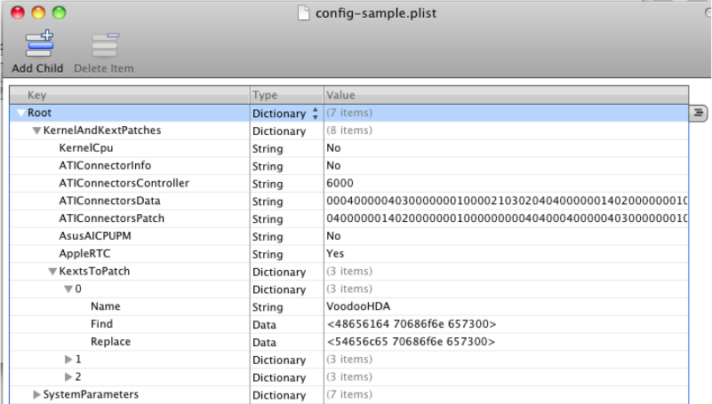
On HP laptops there is a problem with lapic, which is solved by running with cpus = 1, or now with
this patch <true />. The problem and solution has existed for a very long time, since the days of the
Chameleon, but so far new developers have not got to HP laptops to figure out more seriously what
the trick is.
<key> KernelPM </key>
<false />
It turns out that since 10.9 there is some CPUPM management built right into the kernel. This patch
prevents kernel panic when 0xE2 is locked in BIOS.
<key> KernelXCPM </key>
<false />
On 10.12+, XCPM support for IvyBridge processors has been discontinued. It's okay, you can go
Apple's way, but those who are used to XCPM can set this key to <true />.
<key> DellSMBIOSPatch </key>
<true />
It has been noticed that on Dell laptops with a Skylake processor and above, the UEFI BIOS itself
spoils our finished SMBIOS. It is not clear why, but this must be fought. The patch is tricky, you can't
do that manually. Only needed on Dell laptops with a Skylake processor (or higher?).
<key> EightApple </key>
<true />
Sometimes on some hardware with some OS, you can see the apple with a progress bar breaking
into 8 apples at some point in the boot.
There were old ways to avoid this: find 01000075 and replace it with 010000eb. But this method
depends on the OS version.
There is no confirmation yet if the patch works.
Added in revision 5119.
<key> KextsToPatch </key>
<array>
In addition to specific patches, you can make a patch of any other keksta, the principle is simple: a
hex string, what to look for, and a string, what to replace. Starting with revision 5095 it is possible
to make patches using a mask, see the paragraph Patching with Mask.
Sample: patching VoodooHDA to replace Headphones with Telephones. Condition - the
number of letters must be the same. Or less and padded with zeros.
Khaki clover. Version 5.1, revision 512nine
Moscow, 2021G92

Khaki clover. Version 5.1, revision 5129
Moscow, 2021
93
This method has been successfully applied to enable Trim support for SSD
http://www.applelife.ru/threads/clover.32052/page-539#post-310105
Here's another very useful patch: fighting yellow icons and a non-working DVD player
(which doesn't work for external drives):
Original theme http://www.applelife.ru/threads/Changing-external- to-internal.38111/
<dict>
<key> Name </key>
<string> AppleAHCIPort </string>
<key> Find </key>
<data> RXh0ZXJuYWw = </data>
<key> Replace </key>
<data> SW50ZXJuYWw = </data>
</dict>
To select the MacPro4,1 or 5.1 model without having memory with ECC. AppleTyMCEDriver
patch A simpler method is noticed-nehalem_error_disable disables the AppleTyMCEDriver Thanks to
AkimoA.
One of the most useful patches is removing the limitation on the number of ports in the USB3
controller. The problem is that the kext numbers all ports, first as USB2, then as USB3, and the
total amount, according to Apple's concepts, should not exceed 15 ports. I illustrate the result on
my computer
That is, having counted 14 HS (usb2) ports, it received only one SS (usb3) port, while there are 10
of them in the chipset spec.
The patch is the following (depends on the system version)
<dict>
<key> Find </key>
<data> g32UDw + DlwQ = </data>
<key> Comment </key>
<string> USB 3.0 limit High Sierra 10.13.4 </string>
<key> Disabled </key>
<false />
<key> MatchOS </key>
<string> 10.13 </string>
<key> Name </key>
<string> com.apple.driver.usb.AppleUSBXHCI </string>
<key> Replace </key>
<data> g32UGA + DlwQ = </data>
</dict>
Khaki clover. Version 5.1, revision 5129
Moscow, 2021
94
The sample, by the way, illustrates additional patch keys:
<key> Disabled </key>
<true />
You can disable dubious keys in the config, then enable them in the Clover interface.
<key> Comment </key>
<string> USB 3.0 limit High Sierra 10.13.4 </string>
The comment is also visible in the Clover interface, but has no effect on the system.
<key> MatchOS </key>
<string> 10.13 </string>
It often happens that a given patch is applicable only to a specific version of the system; a different
version needs a different patch. We write both, and put down the version, including the full 10.13.5
or the shortened one, as in the example. However, you are unlikely to have two systems 10.13.2 and
10.13.4, so there is not much point in the full version, just do not forget to update the patches along
with the system update.
BIt is necessary to edit not the binary part of the text, but its info.plist. In this case, the section
looks like this
<dict>
<key> Name </key>
<string> AppleHDAController </string>
<key> Comment </key>
<string> Patch_to_not_load_this_driver </string>
<key> InfoPlistPatch </key>
<true />
<key> Find </key>
<string> 0x04020000 </string>
<key> Replace </key>
<string> 0x44220000 </string>
</dict>
There is one complication here. The patch is supposed to be done in the kernelcache, but if we
make a patch of the info-sheet so that the kext is loaded, this kext is not there yet, since it has not
been loaded yet. Therefore, you need to boot twice. The first time ignoring the cache (the NoCache
key), then FSInject will load this cache, and the second time with the cache, where it will be
successfully patched. Put ForceKextsToLoad in the config.
In revision 3154, and then in 3256, the info-sheet patch was fixed (thanks to solstice). You can now
include multiple lines in a search by excluding all invisible characters such as line feeds and tabs.
Now you need to set the search in the form <data>, because service symbols such as "<" cannot be
set in text form. The lengths of the search and replace strings may differ, but you must specify the
same length, padded with spaces. Example
<dict>
<key>Comment</key>
<string>Power state 1 - 0</string>
<key>Name</key>
<string>AppleIntelHDGraphicsFB</string>
<key>InfoPlistPatch</key>
<true />
<key>Find</key>
<data>PGtleT5Qb3dlclN0YXRlczwva2V5PjxpbnRlZ2VyPjE8L2ludGVnZXI +</data>
<key>Replace</key>
<data>PGtleT5Qb3dlclN0YXRlczwva2V5PjxpbnRlZ2VyPjA8L2ludGVnZXI +</data>
</dict>
If you have a sample config with many patches, but in a particular case you use only some, then
the extra ones can be disabled
<key>Disable</key>
<true />
Khaki clover. Version 5.1, revision 5129
Moscow, 2021
95
This was very convenient to do with the Property List Editor, where <true /> is just a check
mark. In Clover revisions 3990+, these patches can be enabled and disabled in the Clover
menu by checking this checkbox.
Patching with Mask
Starting with revision 5095, the ability to implement binary patches with a mask has been
introduced. This applies to KextPatches, KernelPatches and BootPatches
I'll tell you in a separate place, keeping in mind all three points.
It looks like this (specific data is unreal, just like a method).
So, in addition to the hexadecimal string Find, we can also set the MaskFind mask, bitwise.
If some bit = 1, then we are looking for an exact match, if = 0, then we ignore the
difference.
And for the Replace line, the MaskReplace mask means that bit = 1 - we make a replacement,
bit = 0 - we leave it as it was.
Example:
1. Find all lines in the specified cxt, {also works in the kernel, or in boot.efi} clever or Clever. The
difference is in the first letter, it differs by bit 0x20. That is, we set the search mask DF FF FF FF
FF FF. This means that we achieve a match for all bytes (letters), except for the first, in which we
ignore the uppercase or lowercase. The search mask can be shortened, because by default all
missing bytes are assumed to be FF. This means that the unspecified bytes must be the same.
2. Replace the third letter in the found words with "o", that is, we get clover or Clover,
respectively.
MaskReplace = 00 00 FF 00 00 00
The string can be shortened to the right, since it is assumed to be filled with zero. At the same
time, those bytes that we are not replacing could have been omitted in Replace, but there is a
requirement for an exact match of the length.
To maintain backward compatibility of the new Clover with the old config, it is assumed that the
unspecified mask (missing) all consists of FFFFFF, that is, an exact match to the search string, and
a complete replacement of all bytes with the specified ones.
Symbolic patching.
Starting with revision 5119 we have more search and patch capabilities. General
syntax
<dict>
<key> Comment </key>
<string> Symbolic patch example got lapic panic </string>
<key> MatchOS </key>
<string> All </string>
<key> Disabled </key>
<true />
<key> Procedure </key>
<string> _lapic_interrupt </string>
<key> RangeFind </key>
<integer> 200 </integer>
<key> StartPattern </key>
<data> ACnHeAAx241H + oM = </data>
<key> MaskStart </key>
<data> ///// wA = </data>
<key> Find </key>
<data> 6AAA // + DAAAAAAAA </data>
<key> MaskFind </key>
<data> / wAA //// AAAAAP // </data>
<key> Replace </key>
Khaki clover. Version 5.1, revision 5129
Moscow, 2021
96
<data> 6AAA // 8xwJCQkJCQ </data>
<key> MaskReplace </key>
<data> / wAA //////////// </data>
</dict>
MatchOS set to All, since we consider this patching method independent of the system version.
Disabled true for now, as this is not a realistic example.
Procedure here we write the name of the procedure we are looking for. The real name may be longer,
but the comparison is based on the presence of a substring. Be sure that such a substring occurs only
in this procedure.
RangeFind length of codes to search. In general, just the size of this procedure, or less. This way we
speed up the search without going through all the millions of rows.
StartPattern was invented before the symbolic patch. This is the starting point from where to look
for our pattern. If we know the name of the procedure, then StartPattern is hardly needed.
Nevertheless, let it be. RangeFind also applies to it.
MaskStart this is the mask for the starting point, that is, for the
StartPattern. And then the Find / MaskFind and Replace / MaskReplace
pairs.
Starting with revision 2814, it became possible to force loading of kexts
<key> ForceKextsToLoad </key>
<array>
<string> \ System \ Library \ Extensions \ AppleHDA.kext </string>
</array>
Thus, the unwillingness of the cakes to load is overcome. It is required to load IOXXXFamily,
which is required to load the main cache, but it depends on this surname. For example,
IONetworkFamily.
Or even a whole \ Extra \ Extensions folder (revision 2816+). The folders on the main partition are
meant, other partitions / volumes / disks are not provided.
Pay attention to the slash slash! This function requires the FSInject.efi driver.
Doesn't work after combining Clover with OpenSor 5124+.
<key> ATIConnectorsController </key>
<string> 6000 </string>
To fully launch ATI (AMD) Radeon 5000 and 6000 series cards, it is not enough to inject
properties into the registry, you also need to correct the connectors in the corresponding controller.
In this case, we point to the 6000 controller. The next two properties indicate what to find and what
to change.
<key> ATIConnectorsData </key>
<string> 00040000040300000001000021030204040000001402000000010000000004031000000010000000
0001000000000001 </string>
<key> ATIConnectorsPatch </key>
<string>
040000001402000000010000000004040004000004030000000100001102010500000000000000000000000000
000000 </string>
This method only works for systems 10.7 and up.
Khaki clover. Version 5.1, revision 5129
Moscow, 2021
97
In 10.12, the connectors will be different, so this method should be considered obsolete,
although the calculation method is still the same.
I'll tell you more about how to get these numbers.
Original article from bcc9
http://www.insanelymac.com/forum/index.php?showtopic=249642
Full recipe from Xmedik in Russian with discussions
http://www.applelife.ru/threads/Zavod-ati-hd-6xxx-5xxx-4xxx.28890/
Here I will outline it more briefly, taking into account the specifics of
Clover.
1. First of all, you need to get your own video bios. Boot into CloverGUI and press F6.
Your BIOS will be saved in the file /EFI/CLOVER/misc/c0000.bin, if, of course, Clover
is installed in a partition with the FAT32 file system.
2. Download the radeon_bios_decode program from one of these links. Put the BIOS file
c0000.bin into the same folder with this utility. Let's say this is a folder~ /
RadeonPatch We execute the following commands in the terminal
cd ~ / RadeonPatch
./radeon_bios_decode <c0000.bin
3. On the screen you will receive information on your connectors, which is worth
copying / photographing for future use.
Here is what I have
iMac: test slice $ ./radeon_bios_decode
<c0000.bin ATOM BIOS Rom:
SubsystemVendorID: 0x1458 SubsystemID: 0x2557
IOBaseAddress: 0xe000
Filename: R667D32I.F1
BIOS Bootup Message:
GV-R667D3-2GI / F1
PCI ID: 1002: 6758
Connector at index 0
Type [@offset 44282]: HDMI-A (11)
Encoder [@offset 44286]: INTERNAL_UNIPHY2 (0x21)
i2cid [@offset 44356]: 0x92, OSX senseid: 0x3
Connector at index 1
Type [@offset 44292]: DVI-D (3)
Encoder [@offset 44296]: INTERNAL_UNIPHY (0x1e)
i2cid [@offset 44383]: 0x95, OSX senseid: 0x6
Connector at index 2
Type [@offset 44302]: VGA (1)
Encoder [@offset 44306]: INTERNAL_KLDSCP_DAC1 (0x15)
i2cid [@offset 44410]: 0x90, OSX senseid: 0x1
4. Download the script from one of the links ati-personality.pl
5. Put in the same folder, and execute in the terminal
perl ati-personality.pl -386> frames.txt if
you are doing this for a 32 bit system, or
perl ati-personality.pl> frames.txt
for 64-bit.
Attention! In Sierra, the texts have changed, so that the patch is system-dependent.
6. Now you need to decide on the choice of a suitable framebuffer. Apple offers us a wide
selection: birds, fish, and even monkeys. But the real differences are there in
Khaki clover. Version 5.1, revision 5129
Moscow, 2021
98
mostly in the connectors, which we are going to change. If you don't think too much,
then a simple selection option:
5000 series: mobile - Alouatta, desktop - Baboon 6000 series:
mobile - Cattail, desktop - Ipomoea 7000 series: mobile -
Pondweed, desktop - Futomaki.
7. For the selected framebuffer, we take the printout of the connectors from our
frames.txt file obtained in step 5.
0000000
00 04
00 00 04 03 00 00 00 01 00 00
12 04
01
05
0000010 00 08 00 00 04 02 00 00 00 01 00 00
11 02
04 03
0000020 10 00 00 00 10 00 00 00 00 01 00 00
00 00
00
02
The numbers that need to be edited are highlighted in red. The blue numbers are just
addresses, to be dropped. The third digit from the end is encoderid, the last digit
- senseid. The first 4 digits in each line are the
monitor type (more precisely, the connector type).
ConnectorType
02 00 00 00LVDS
04 00 00 00DVI_DL (Dual Link)
00 02 00 00DVI_SL (Single Link)
10 00 00 00VGA
80 00 00 00S-Video
00 04 00 00DP
00 08 00 00HDMI
8. The senseid we got in step 3 for each of our connectors. encoder can simply be nullified
everywhere. We do not pay attention to other figures.
We get the following table:
0000000 04 00 00 00 04 03 00 00 00 01 00 00 10 00 01 06
0000020 10 00 00 00 10 00 00 00 00 01 00 00 00 00 00 01
0000010 00 08 00 00 04 02 00 00 00 01 00 00 12 00 04 03
Those. The first line is DVI-D, the second is VGA, the third is HDMI, and all with my
senseid values.
9. And another recipe from Sergey_Galan. http://www.applelife.ru/threads/mobility-ati-
radeon- hd5650m-hd5470m-hd4570m-hd4650m.29028 / page-58 # post-379044
The second digit from the end of the HotPlugID must be in order 00, 01, 02. This affects
sleep and wake up. (highlighted in red)
0000000 04 00 00 00 04 03 00 00 00 01 00 00 10 00 00 06
0000020 10 00 00 00 10 00 00 00 00 01 00 00 00 00 01 01
0000010 00 08 00 00 04 02 00 00 00 01 00 00 12 00 02 03
10. Having discarded the blue numbers, we enter the rest into config.plist without spaces and
line breaks. The original table in ATIConnectorsData, after our edits in
ATIConnectorsPatch. See the sample above.
11. I also saw a situation where the VGA connector was introduced among the connectors
as DVI-I (DVI-SL). And the patch worked with this use.
12. Recipe from eierfrucht https://applelife.ru/threads/sony-vaio-vpceb3m1r.522504/page-
3#post- 537081:
The most interesting moment is the FEATURES bits of the LVDS connector, I advise you to
try 08 01, 08 00, 09 01 and 09 00 brute force, on one of them everything should start waking
up normally. (Highlighted in orange)
0000000 02 00 00 00 40 00 00 00 09 01 00 00 00 00 00 07
0000010 00 04 00 00 04 06 00 00 00 73 00 00 11 02 01 01
13. There same, "Senseid LVDS panels supply 0x7"because Sony VAIO.
Khaki clover. Version 5.1, revision 5129
Moscow, 2021
99
In a new way you need to do this
<key> ForceKextsToLoad </key>
<array>
<string> \ System \ Library \ Extensions \ AMD6000Controller.kext </string>
<string> \ System \ Library \ Extensions \ AMDFramebuffer.kext </string>
</array>
<key> KextsToPatch </key>
<array>
<dict>
<key> Comment </key>
<string> ATI Connector patch new way </string>
<key> Disabled </key>
<false />
<key> Find </key>
<data> AAQAAAQDAAAAAQAAIQMCBAQAAAAUAgAAAAEAAAAABAMQAAAAEAAAAAABAAAAAAAB </data>
<key> MatchOS </key>
<string> 10.9,10.10,10.11 </string>
<key> Name </key>
<string> AMD6000Controller </string>
<key> Replace </key>
<data> BAAAABQCAAAAAQAAAAAEBAAEAAAEAwAAAAEAABECAQUAAAAAAAAAAAAAAAAAAAAA </data>
</dict>
</array>
For 10.12, duplicate the entire <dict> with other Find / Replace strings, they are longer.
We can also set binary patches for boot.efi or for the kernel kernel. The method is the same, so
I'll show you with one example.
<key> KernelToPatch </key>
<key> BootPatches </key>
For more information about masks, see the paragraph Patching with Mask...
I want to note that this group of patches is practically not used by anyone, except for the
developers themselves, in order to look for errors in severe cases that are not obvious from an
external examination. So we were looking for hibernation problems, so we were looking for the
moment when E2 crashes in the kernel.
Devices
A group of parameters for other PCI devices and buses in general.
<key> Inject </key>
<false />
Set this value to true - all internal injection is replaced by the input of a single Properties line,
which corresponds to the Apple injection protocol APPLE_GETVAR_PROTOCOL with GUID =
{0x91BD12FE, 0xF6C3, 0x44FB, {0xA5, 0xB7, 0x51, 0x22, 0xAB, 0x30, 0x3A, 0xE0}}; and
used on real Macs. In the old days, hackers called it EFIstrings.
<key> Properties </key>
<string> 0207364862FA54HG345 </string>
Deprecated! Starting from revision 4497, we do not a string of hexadecimal characters, but a
dictionary according to the rules of gfxutil.
<dict>
<key> PciRoot (0x0) / Pci (0x14,0x0) </key>
<dict>
<key> AAPL, clock-id </key>
Khaki clover. Version 5.1, revision 5129
Moscow, 2021
100
You can, for example, use DarwinDumper to see which playlist Clover generated by default, that
is, to make automatic injections, or, as you did in the old way, boot into the system and call in the
system in the terminal
clover-genconfig> config-gen.plist
There look for such a dictionary, and copy it to your config, and turn off the old injection methods.
You can also see such a dictionary in the DarwinDumper report from a real Mac with a similar
configuration. The syntax is the same. Only Clover understands a little more, he understands
<string>, <integer>, <true>, <false>, <real>.
Today clover-genconfig function and plist editor are included in Clover.app. Use it!
Basically, the same result is achieved by inserting _DSM methods into DSDT, if it already exists,
and if you are working on improving it. It's not the same for everybody. In principle, Properties is
better than _DSM, it is native for real people, and works before the kernel starts.
<key> PCIRootUID </key>
<integer> 0 </integer>
It turns out that the injection of video card properties depends on what number is in DevicePath =
PciRoot (0x0) or PciRoot (0x1). Previously it was thought that this is a hardware characteristic.
However, even at the dawn of hacking, it became clear that this number is just an identifier
registered in the DSDT. Here:
Device (PCI0)
{
Name (_HID, EisaId ("PNP0A08"))
Name (_CID, EisaId ("PNP0A03"))
Name (_ADR, Zero)
Name (_UID, Zero)
_UID = Zero - means 0, if equal to One, then 1.
Moreover, if this number is changed by force, it will change and will work successfully. So, real
Macs always have 0. And accordingly, boot.efi always assumes 0, so it's better if you correct your
DSDT, Clover does it by default, and there is no such key in the config anymore.
<key> Audio </key>
<dict>
<key> Inject </key>
<string> 887 </string>
<key> ResetHDA </key>
<data> AA == </data>
<key> AAPL, current-available </key>
<data> sAQ = </data>
<key> AAPL, current-extra </key>
<data> vAI = </data>
<key> AAPL, current-in-sleep </key>
<data> 6 AM= </data>
<key> built-in </key>
<data> AA == </data>
<key> device_type </key>
<string> XHCI </string>
</dict>
<key> PciRoot (0x0) / Pci (0x19,0x0) </key>
<dict>
<key> built-in </key>
<data> AQ == </data>
</dict>
Khaki clover. Version 5.1, revision 5129
Moscow, 2021
101
Inject
<true />
<key> AFGLowPowerState </key>
<true />
</dict>
Sound card properties injection. True, this only works if the device in DSDT is called HDEF, but if
you rename it, then the rest can be injected in another way. Also, this effort is unnecessary when
using the VoodooHDA driver.
The value options are as follows:
NO - nothing is injected, for example, if you inject properties yourself through Properties
Detect - automatic detection of the installed sound microcircuit in order to use its ID as a layout.
Generally nonsense, but very popular. In many cases, it does not interfere, and affects the display of
the sound card in the System-Profiler.
883 - in decimal form the layout number. I mean Realtek ALC883.
0x0373 - the same thing in the 16th form becomes unrecognizable.
In fact, these numbers are incorrect, the correct layout, for example, 12 = 0x0C, but, oddly enough,
they are valid.
With the advent of AppleALC, this parameter has taken on new life. Now this is really a layout
number, and you need to select it from the list of recommended ones for your audio codec. See the
documentation for this kext.
ResetHDA - if the sound chip for some reason does not turn on, then this key can help with
the initial launch. It also affects Windows. The need was noticed after rebooting from
Windows to Mac.
AFGLowPowerState - affects the AppleHDA driver, and it seems to solve the problem with clicks
in the speakers when the sound card falls asleep / wakes up. There is little evidence of the
patch's effectiveness.
<key> USB </key>
<dict>
Inject
<key> Inject </key>
<true />
<key> AddClockID </key>
<true />
<key> FixOwnership </key>
<true />
<key> HighCurrent </key>
<true />
</dict>
You can set it to false if for some reason you want to refuse to inject USB properties, for example, if
you yourself inject properties through Properties.
FixOwnership
BIOS seizes control of the YUSB, and before starting the kernel, we must tear the YUSB away
from the BIOS. For UEFI downloads, it seems to be not relevant, therefore, by default, it is enabled
for legacy downloads, and disabled for UEFI. Relevant!
AddClockID
In the presence of such a property, the YUSB controller falls asleep tightly and does not wake up
the computer. If you want to wake up from the YUSB mouse, put false here. But be prepared that
your computer will wake up spontaneously, for example, from the built-in camera.
HighCurrent
Khaki clover. Version 5.1, revision 5129
Moscow, 2021
102
The increased current on this YUSB controller is needed to charge the iPad, but I did not do this by
default.
A group of parameters for disguising their devices as native for OSX. (1971)
<key> FakeID </key>
<dict>
<key> ATI </key>
<string> 0x67501002 </string>
<key> IntelGFX </key>
<string> 0x01268086 </string>
<key> NVidia </key>
<string> 0x0FE210DE </string>
<key> LAN </key>
<string> 0x436311AB </string>
<key> SATA </key>
<string> 0x25628086 </string>
<key> WIFI </key>
<string> 0x431214E4 </string>
<key> XHCI </key>
<string> 0x1E318086 </string>
<key> IMEI </key>
<string> 0x1E3A8086 </string>
</dict>
In this group of parameters, you can set the relabeling of your unsupported device to a supported
one. Examples:
− AMDRadeonHD7850 has DeviceID = 0x6819, which is not supported by kext
ATI7000Controller and ATIRadeonX3000 in 10.8 system. But there is support for
DeviceID = 0x6818. We make a substitution. For it to take effect, you need to somehow
inject this fake. For video cards, there are two options: either Inject-> ATI = true, or
DsdtFixMask enables 0x0100 (FixDisplay).
− NVidia GTX660 has DeviceID = 0x1183, the card works anyway, but AGPM for
it is not provided. We make a substitution for 0x0fe0, and AGPM turns on. Since Inject->
NVidia = false for such a card, the ID substitution can be done only through the DSDT patch
with the mask 0x0100 (FixDisplay).
− WiFi card in Dell laptop called Dell Wireless 1595, DeviceID = 0x4315,
in fact, it is Broadcom, which supports 4312, 4331, and a number of others. We make a
substitution. DSDT patch with mask 0x4000 (FixAirport).
− The widespread network card Marvell 80E8056 DeviceID = 0x4353 just doesn't
works, but works with the AppleYukon2 driver if you change the ID to 0x4363. DSDT patch
with mask 0x2000 (FixLan).
− IMEI - this device works with Intel HD3000 / 4000, however, it is not a fact that your
the chipset has the correct ID. The substitutions are as follows:
SandyBridge = 0x1C3A8086
IvyBridge = 0x1E3A8086
Haswell = 0x8C3A8086
Works with DSDT patch fix AddIMEI_80000 (AddIMEI)
This camouflage works in two cases: when injecting, or when patching DSDT. However, if we do
not want a full injection in the version as conceived by Clover, then we can set the following
property:
<key> NoDefaultProperties </key>
<true />

Khaki clover. Version 5.1, revision 5129
Moscow, 2021
103
In this case, the line for the injection is created, but does not yet contain any new
properties. For example, such a property would be FakeID.
Again, this way of doing FakeID is outdated, it is better to do it through Properties in the following
way
You can add your other properties, for example model, in the following array of dictionaries
Deprecated! Use Properties!
<key> AddProperties </key>
<array>
<dict>
...
<key> Device </key>
<string> NVidia </string>
<key> Key </key>
<string> AAPL, HasPanel </string>
<key> Value </key>
<data> AQAAAA == </data>
</dict>
</array>
Value can be <data> or a hexadecimal string. You can't just string. That is, instead of <string>
ABC .... you should write <string> 0x414243 ....
Convert via PlistEditor or Xcode.
The first Device key determines which device this property will be added to. Device List:
ATI
Nvidia
IntelGFX
LAN
WIFI
Firewire
SATA
IDE
HDA
HDMI
LPC
SmBUS
USB
Names should be exactly like that, letter by letter. I think no explanation is needed here.
Thus, different properties can be injected for analog audio Device = HDA, and for digital audio
Device = HDMI. To distinguish Clover will, alas, not be very correct, according to the vendor. If
Intel, then HDA, if ATI or Nvidia, then HDMI. For example, Hazvel has Intel HDMI sound. This
option is not yet provided in Clover.It is stipulated that with Intel graphics chipset HDA sound will
be used for HDMI output. This is done using the parameter
<key> UseIntelHDMI </key>
<true />
Khaki clover. Version 5.1, revision 5129
Moscow, 2021
104
This parameter affects the injection of audio properties transmitted over HDMI, as well as the
DSDT patch. However, as far as I know, the sound drivers such as VoodooHDA and AppleHDA
do not fully work with HDMI output. According to new reports, VoodooHDA only works with
NVIDIA HDMI output, and as for AMD, Apple has created a new driver AppleGFXHDA.kext in
10.13+ systems. Explore its capabilities.
<key> HDMIInjection </key>
<false />
Completely disable the injection of HDMI device properties.
Starting with revision 3262, a new method of injecting device properties is introduced not by
name, as it was before, but by their location on the PCI bus. Here is the list that Clover gives in
the boot-log
4:
432
0:
000
PCI (00 | 00: 00.00): 8086 2E30 class =
060000
4:
432
0:
000
PCI (00 | 00: 02.00): 8086 2E32 class =
030000
4:
432
0:
000
Found GFX model = Unknown
4:
432
0:
000
PCI (00 | 00: 02.01): 8086 2E33 class =
038000
4:
432
0:
000
PCI (00 | 00: 1B.00): 8086 27D8 class =
040300
4:
432
0:
000
PCI (00 | 00: 1C.00): 8086 27D0 class =
060400
4:
432
0:
000
PCI (00 | 01: 00.00): 10DE 01D1 class =
030000
4:
432
0:
000
Found NVidia model = Gigabyte GeForce 7300
LE
4:
432
0:
000
PCI (00 | 00: 1D.00): 8086 27C8 class =
0C0300
4:
432
0:
000
PCI (00 | 00: 1D.01): 8086 27C9 class =
0C0300
4:
432
0:
000
PCI (00 | 00: 1D.02): 8086 27CA class =
0C0300
4:
432
0:
000
PCI (00 | 00: 1D.03): 8086 27CB class =
0C0300
4:
432
0:
000
PCI (00 | 02: 05.00): 10EC 8167 class =
020000
Here we see two video cards and four USB UHCI devices. The device type is recognized by its
class class = 040300 - this is an HDA standard audio device. In this case it is located at 00: 1B.00,
and the class 020000 network card is located at 02: 05.00
Bus = 02
Device = 05
Function = 00
Use this value for property injection. Deprecated!
Use Properties!
<key> Arbitrary </key>
<array>
<dict>
<key> PciAddr </key>
<string> 02: 05.00 </string>
<key> Comment </key>
<string> Realtek LAN 8167 </string>
<key> CustomProperties </key>
<array>
<dict>
Khaki clover. Version 5.1, revision 5129
Moscow, 2021
105
Controller
</string>
<key> Disabled </key>
<true />
<key> Key </key>
<string> model </string>
<key> Value </key>
<string> Realtek 8169 Gigabit Ethernet
</dict>
<dict>
<key> Key </key>
<string> built-in </string>
<key> Value </key>
<data> AQAAAA == </data>
</dict>
Khaki clover. Version 5.1, revision 5129
Moscow, 2021
106
</array>
</dict>
<dict>
<key> PciAddr </key>
<string> 01: 00.00 </string>
<key> Comment </key>
<string> Nvidia Geforce card in PCIe slot </string>
<key> CustomProperties </key>
<array>
<dict>
<key> Key </key>
<string> model </string>
<key> Value </key>
<string> Gigabyte GeForce 7300 LE </string>
</dict>
<dict>
<key> Disabled </key>
<true />
<key> Key </key>
<string> AAPL, boot-device </string>
<key> Value </key>
<data> AQAAAA == </data>
</dict>
</array>
</dict>
</array>
Thus, the Arbitrary section is an array of dictionaries, each of which corresponds to one device with
a given address, and the CustomProperties array consisting of Key-Value pairs is used to describe
each device. Also, a specific property can be disabled with the Disabled key.
The property can be turned on or off dynamically in the Clover menu.
Key must be string <string>
Value can be string, number or data <string>, <integer>, <data>
<key> ForceHPET </key>
<true />
It turns out that there are still computers where HPET is disabled by default, and the BIOS does
not have a daw to enable it. This key will help (revision 2789+)
<key> SetIntelBacklight </key>
<false />
The key was introduced in revision 3298. In previous systems, the screen brightness was raised with
special IntelBacklight or ACPIBacklight cakes, they do not work in Captain, but it turned out to be
very easy to do this in Clover at the stage of system startup, and no additional cakes are needed, just
put <true />. A trick from Ramalama and Rehabman.
And additional keys
<key> SetIntelMaxBacklight </key>
<true />
The value from the following key will be written into the chip register:
<key> IntelMaxValue </key>
<integer> 1808 </integer>
or the default value most suitable for this chip. Sherlock added values to Clover for almost all Intel
chips, based on the analysis of dumps from real ones. Whether this is always correct, I don't know,
but Clover will offer default values.
Khaki clover. Version 5.1, revision 5129
Moscow, 2021
107
<key> DisableFunctions </key>
<string> 0x18F6 </string>
This is a mask that is imposed in RCBA 0x3418 - sets additional bits, prohibiting some
devices in the Intel chipset. For very serious hackers.
<key> LANInjection </key>
<false />
By default, the built-in property is injected for a network card. This parameter can be used to disable
such injection.
RtVariables
The next two parameters were introduced starting with revision 980 and are intended to allow
registration with the iMessage service.
Starting from revision 1129, the parameters are taken from the SMBIOS, and are not
needed here. MLB = BoardSerialNumber
ROM = last digits of SmUUID or Mac address.
<key> Block </key>
<array>
<dict>
<key> Comment </key>
<string> Dell variables </string>
<key> Disabled </key>
<false />
<key> Name </key>
<string> * </string>
<key> Guid </key>
<string> FF2E9FC7-D16F-434A-A24E-C99519B7EB93 </string>
</dict>
</array>
This is the ability to block the SetVariable (Name, Guid.), That is, to .. external
procedures could not do unnecessary things.
Specifically, I had a problem that my Dell Latitude constantly exposes two variables with some of its
own Guid for some of its purposes. I blocked them.
<key> MLB </key>
<string> XXXXXXXXXX </string>
Numbers and letters, 17 characters long, indicating the serial number of the motherboard. There
is no pattern. The most reliable way is to take a real number and change the middle digits, for
example, write... SLICE ............ whom what a fantasy.
<key> ROM </key>
<data> AAAAAAAA </data>
Six pairs of 16-digit digits, often the same as the MAC address of a network card. There are,
however, reports that the service works with arbitrary numbers. Starting with revision 3051 you
can write <string> UseMacAddr0 </string>, and Clover will determine the Macaddress of your
network card by itself. The procedure does not work for everyone, so check it out.
Well, and most importantly, registration in iMessage implies a paid service, you must indicate a real
bank card from which you will be charged $ 1. Those who try to enter for free receive messages like
"Call Apple".
Khaki clover. Version 5.1, revision 5129
Moscow, 2021
108
In 2015, the 10.11 ElCapitan system appeared with new security requirements. SIP
= System Integrity Protection. By default, protection is enabled and does not allow you to load your
kexts and install your system utilities. To disable it, Clover makes it possible to set new parameters in
NVRAM
<key> CsrActiveConfig </key>
<string> 0x3E7 </string>
<key> BooterConfig </key>
<string> 0x28 </string>
These are bit masks with possible bit values
/ * Rootless configuration flags * /
#define
CSR_ALLOW_UNTRUSTED_KEXTS
(on
e
<<
0)
#define
CSR_ALLOW_UNRESTRICTED_FS
(on
e
<<
on
e)
#define
CSR_ALLOW_TASK_FOR_PID
(on
e
<<
2)
#define
CSR_ALLOW_KERNEL_DEBUGGER
(on
e
<<
3)
#define
CSR_ALLOW_APPLE_INTERNAL
(on
e
<<
4)
#define
CSR_ALLOW_DESTRUCTIVE_DTRACE
(on
e
<<
fi
ve
)
/ * name
deprecated
*
/
#define
CSR_ALLOW_UNRESTRICTED_DTRACE
(on
e
<<
fi
ve
)
#define
CSR_ALLOW_UNRESTRICTED_NVRAM
(on
e
<<
6)
#define
CSR_ALLOW_DEVICE_CONFIGURATION
(on
e
<<
7)
#define
CSR_ALLOW_ANY_RECOVERY_OS
(on
e
<<
8)
#define
CSR_ALLOW_UNAPPROVED_KEXTS
(on
e
<<
ni
ne
)
#define CSR_ALLOW_EXECUTABLE_POLICY_OVERRIDE ( one << ten)
/ * Bitfields for boot_args-> flags * /
#define kBootArgsFlagRebootOnPanic (one << 0)
#define kBootArgsFlagHiDPI (one << one)
#define kBootArgsFlagBlack (one << 2)
#define kBootArgsFlagCSRActiveConfig (one << 3)
#define kBootArgsFlagCSRPendingConfig (one << 4)
#define kBootArgsFlagCSRBoot (one << five)
#define kBootArgsFlagBlackBg (one << 6)
#define kBootArgsFlagLoginUI (one << 7)
The default values correspond to disabling protection.
If, due to some paranoia, you need to enable protection, set the value to 0 (zero).
The next three parameters are excluded, because they must be set by the system from the Clover
Control Panel so that there is no conflict.
<key> MountEFI </key>
<string> Yes </string>
This parameter tells the startup script to mount the ESP (EFI System Partition) at login. For most
people, this parameter is unnecessary or temporary, it is worth prescribing No in the config, and
setting Yes in the menu, if necessary.
Another possible value is disk1 if you have multiple disks and each has its own EFI partition.
Khaki clover. Version 5.1, revision 5129
Moscow, 2021
109
<key> LogEveryBoot </key>
<string> Yes </string>
The download log is needed by the developers, and ordinary users can also put No. Here, instead of
Yes, there can be a number, how many logs to keep in the system.
<key> LogLineCount </key>
<string> 3000 </string>
The number of lines in this log, then the old lines are replaced by new ones, so that there is no
unlimited growth of this file.
Khaki clover. Version 5.1, revision 5129
Moscow, 2021
110
In fact, saving these logs is not interesting. You can always get the latest log with the command
$ bdmesg> ~ / Desktop / boot-log.txt
DisableDrivers
<key> DisableDrivers </key>
<array>
<string> CsmVideoDxe </string>
<string> VBoxExt4 </string>
</array>
The essence of this section is to have different config.plist in different OEM folders, but since the
drivers folder is common, you need to somehow distinguish which set of drivers is used on a
particular configuration. One, for example, needs OsxAptioFixDxe, the other needs
EmuVariableDxe. Deprecated! Now all boards use a common set.
Quirks
The history of this section is as follows. Start of development of Clover for UEFI download
Dmazar was the development of a driver for adjusting the memory that UEFI BIOS Aptio
(American Megatrend) reserves. The fact is that the Allocate function in this BIOS allocates
memory at the bottom, and to boot macOS, you need to have the bottom memory free. The conflict
affects not only memory, boot.efi also does address virtualization, and this affects pointers,
functions, and so on. I will not go into more detail, this is not my job, it was Dmazar who found all
the conflicts step by step and figured out how to resolve them. This became the
OsxAptioFixDrv.efi driver. 32 and 64 bit options with all addressing differences.
I will notice that there was no problem with Legacy Clover, because in this case Allocate
from EDK2 is used, and it allocates memory from top to bottom. Legacy Clover works
without this driver.
For a long time after Dmazar left, no one touched this driver, except, perhaps, some one-
line additions like Free2000. And now vit9696 undertook to overhaul the driver. First of all, he
made a change that allows the use of native NVRAM on many chipsets (BIOS), with which it did
not work before. And then he broke the driver into semantic parts (quirks), which could now be
turned on and off at the user's request if the OpenCore loader was used. But there was also a
ReddestDream programmer who decided to separate all these developments from OpenCore into
a separate OcQuirks.efi driver, which works in conjunction with the OpenRuntime.efi driver, and
all settings are written in the OcQuirks.plist file to use all this with the Clover loader.
And then it's my turn. I need to have all sources in one repo so that bisection can be done.
And since the license for the whole thing allows you to use the source code according to your own
understanding, and historically everything has returned to its historical homeland, I copied them
and modernized them so that instead of a separate .plist file, the same Clover's config.plist was
used, and these settings you can also change it simply from the GUI Clover.
Khaki clover. Version 5.1, revision 5129
Moscow, 2021
111
That is, if you cannot boot right away, you can try to enter this menu and change some setting, yes or
no.
Now details about each item. The default values are specified.
<key> AvoidRuntimeDefrag </key>
<true />
Prevents memory defragmentation for runtime services such as NVRAM support. Recommended for
everyone except Apple and VMware.
<key> DevirtualiseMmio </key>
<false />
Removes the runtime attribute from some known MMIO areas. Not recommended for systems
older than Sandy Bridge. The list of known regions can still be expanded in the MmioWhitelist
pickaxe section. However, according to my observations, it is always disabled. The need for
the Z390 chipset is claimed.
<key> MmioWhitelist </key>
<array />
The list of regions is specified as an array of dictionaries
<dict>
<key> Comment </key>
<string> This is such and such a region </string>
<key> Address </key>
<string> 0xffe00000 </string>
<key> Enabled </key>
<true />
</dict>
<key> DisableSingleUser </key>
<false />
Prevents the use of command line mode because it is unsafe. ;)
Khaki clover. Version 5.1, revision 5129
Moscow, 2021
112
<key> DisableVariableWrite </key>
<false />
Denies access from MacOS to NVRAM by recording, for security.
<key> DiscardHibernateMap </key>
<false />
When waking up from hibernation, use an old memory card. Use only if you are sure that this is
your case. Almost always not.
<key> EnableSafeModeSlide </key>
<true />
By default, loading in safe mode gives slide = 0. This patch allows you to use a different value set
in the ProvideCustomSlide pickaxe.
<key> ProvideCustomSlide </key>
<false />
Whether or not to automatically calculate the slide = *** value. The need is visible from the log if
there is a messageOCABC: Only N / 256 slide values are usable!
<key> ProvideMaxSlide </key>
<integer> 0 </integer>
A value from 1 to 254, for the case indicated above. 255 is the default and this can lead to memory
allocation errors.
<key> EnableWriteUnprotector </key>
<true />
Clears the write protect bit on the services Runtime page. Due to the insecurity of this pick, there is
another RebuildAppleMemoryMap. That is, for systems older than 2018, we setEnableWriteUnprotector -
True
RebuildAppleMemoryMap - False
SyncRuntimePermissions - False
And for newer ones that support MATS, if such an ACPI table is in the BIOS
EnableWriteUnprotector - False
RebuildAppleMemoryMap - True
SyncRuntimePermissions - True
<key> ForceExitBootServices </key>
<false />
Retry ExitBootServices with a new memory card. This is where kernel and kext patches
occur. Use only if you are sure what you are doing.
<key> ProtectMemoryRegions </key>
<false />
Changes the attributes of some regions when there is a conflict between the concepts of MacOS and
BIOS. This pick includes several fixes, including one that I personally developed to protect the
CSM region. In particular, if your graphics card does not have UEFI VBIOS, this pick should be
enabled. On the other hand, it is certainly included in the OsxAptioFix3Drv driver, and has never
caused any complaints. Nevertheless, it is still disabled by default.
Khaki clover. Version 5.1, revision 5129
Moscow, 2021
113
<key> ProtectSecureBoot </key>
<false />
Protects encryption keys from being overwritten by the operating system. Secure Boot
technology, which we somehow don't really need. The need for this pick is observed on some
Insyde BIOSes. The rest are not needed.
<key> ProtectUefiServices </key>
<false />
Some BIOSes, such as VMware, try to rewrite pointers to Runtime services. We don't need this, so
we protect them. Someone Rediskin claims that this is needed on the Z390 chipset.
<key> RebuildAppleMemoryMap </key>
<false />
Generate a memory card compatible with macOS. The fact is that Apple has a slightly different idea
of how and what to do than in our UEFI BIOS. The problem, however, is that our memory card
matches our hardware. Therefore, we turn off the pick. Other picks do the necessary part of this job.
This pick seems to replace EnableWriteUnprotector for systems that support MAT.
Also this Kirk requires SyncRuntimePermissions to be enabled. However, we have it enabled by
default. See Kirk EnableWriteUnprotector
<key> SetupVirtualMap </key>
<true />
Kirk deals with the order in which virtual addresses are assigned and used. Some BIOS like
OVMF do not support this Kirk. Hmm, why is this OcQuirks.efi driver on a system with
OVMF ?! She works without him, like Legacy Clover.
So turn it on.
<key> SignalAppleOS </key>
<false />
Tells BIOS that we are loading the macOS system, although we are loading Windows.
Needed on some MacBooks, but not for us. OpenCore may be needed, but not Clover.
<key> SyncRuntimePermissions </key>
<true />
Updates the permission flags in the runtime scope. Of course you need to.
The general situation is that for my not very new computers, these default settings were sufficient.
That Rediskin has a different list, and he claims that his list matches the behavior of
AptioMemoryFix. However, this is not true. With its set, my computer does not boot, while
everything is fine with the old AptioMemoryFix. So in Clover the standard pickaxe set is different
from the original OcQuirks (RIP).
In Clover 5125, in connection with the inclusion of patches from OpenCore, new values have
appeared in this section.
<key> FuzzyMatch </key>
<false />
Khaki clover. Version 5.1, revision 5129
Moscow, 2021
114
The key ensures compatibility with the 10.6 system (Snow Leopard), where they say the cache
checksum is calculated differently. I don't know how OpenCore has it, but Clover has been loading
Snowball for a long time, and along with that same cache.
<key> KernelCache </key>
<string> Auto </string>
Possible values (Auto, Cacheless, Mkext, Prelinked). These types of cache were before the system
10.7 and were usually selected using the boot argument Kernel =, Mkext = and others that existed in
the old Clover.
<key> AppleXcpmExtraMsrs </key>
<false />
XCPM support on extra CPUs, which is what the KernelXCPM patch did before.
<key> AppleXcpmForceBoost </key>
<false />
This patch writes 0xFF00 to register MSR_IA32_PERF_CONTROL = 0x199, then is
instead of normal p-states, Opencore suggests driving the maximum step.
<key> DisableIoMapper </key>
<true />
Disables VT-d technology in its own way. There is an alternative to dropping the DMAR table.
And then there is the option dart = 0.
<key> DisableLinkeditJettison </key>
<true />
Makes Lilu.kext run faster. Due to what is unknown. Well, the keepsyms = 1 type is no longer
needed.
<key> DisableRtcChecksum </key>
<false />
The essence of the patch is that the RTC in the Mac is used differently than in the PC, and the
checksum will be bad. In a simple way, we block its calculation. Clover has an analogue AppleRTC =
YES, and we use it.
<key> DummyPowerManagement </key>
<false />
Blocks AppleIntelCpuPowerManagement as an alternative to NullCPUPM kext. I remind you that
kext is blocked mainly if OxE2 is locked, and there are other patches against this.
<key> ExternalDiskIcons </key>
<false />
The long-known patch against yellow icons is designed like a pickaxe.
<key> IncreasePciBarSize </key>
<false />
Increases the memory value for the bar from 1 to 4 GB in the IOPCIFamily kext. I don't know who
came up with this patch and for what cases. OpenCore does not recommend using it at all.
Khaki clover. Version 5.1, revision 5129
Moscow, 2021
115
<key> PowerTimeoutKernelPanic </key>
<false />
This patch, only for Catalina, prevents kernel panic if some device does not fire for a long time.
Why cancel it ?! Let him panic instead of a dull hang. If you ever encounter such a situation, try
this patch.
<key> ThirdPartyDrives </key>
<false />
A well-known patch is in Clover's config, Enable Trim on Non-Apple. The point is to replace
the word Apple with an empty string. There is also a comment that Catalina has internal
capabilities to do the same.
<key> XhciPortLimit </key>
<true />
A known issue is that Apple is limiting the number of XHCI, USB2 + USB3 controller ports to 15,
and despite the fact that new chipsets provide more ports, Apple is in no hurry to increase this limit.
Binary patches have been around for a long time, but they depend on the system version. To what
extent OpenCore managed to overcome the dependence on the version, I do not know. Practice
shows that all non-flying patches fly off. I made myself Legacy_USB.kext, removed unnecessary
USB2 ports, and made room for USB3. This kekst worked in 10.13, so it works in 11.1.
ACPI
Group parameters governing the correction of various ACPI tables.
And the point is not only that Mac has its own requirements, but also just different versions of the
ADC specification, and the elementary laziness of manufacturers, and it is just that the BIOS of the
motherboard does not have information about the installed cards and the CPU (and it is weak to
determine dynamically? Clover does this !).
Parameters for the FADT table
<key> ResetAddress </key>
<string> 0x64 </string>
<key> ResetValue </key>
<string> 0xFE </string>
These two parameters serve one very valuable fix - the restart fix. These values should be in the
FADT table, but for some reason they are not always there, moreover, sometimes the table itself is
shorter than the required one, so shorter that these values were discarded. The default is the value
already present in the FACP, however, if there is nothing there, then the pair 0x64 / 0xFE is used,
which means restart through the PS2 controller.
Practice has shown that this does not work for everyone, another possible pair of values is 0x0CF9 /
0x06, which means restart via the PCI bus. This pair is also used on the native, but does not always
work on hackintoshes. The difference is clear, there is also a PS2 controller on hackintoshes, which
can interfere with a restart if it is not reset. Another option is 0x92 / 0x01, I don't know, maybe it can
help someone.
Khaki clover. Version 5.1, revision 5129
Moscow, 2021
116
<key> AutoMerge </key>
<false />
Merges any DSDT and SSDT changes from EFI / CLOVER / ACPI / patched with existing ACPI
files.
If set to true, it changes the way ACPI / patched handles files. Instead of adding such files to the
end of the XSDT (for example, treating them as an additional table / SSDT), if signture, index, and
OemTableId are the same as an existing OEM table, it will replace that table. With this feature, as
with DSDT, you can patch individual SSDTs (or other tables) simply by placing the patched file in
ACPI / patched. No need to mess with DropOem or DropTables. And the original order is
preserved. The mapping for SSDT is based on naming, where the naming convention used by the
F4 extractor in the boot menu is used to identify the position of the SSDT in the XSDT. For
example, if you had SSDT-6-SaSsdt.aml in your ACPI / origin and you wanted to patch it, you can
simply patch the file as needed and put it in ACPI / patched. Same if you put it in ACPI / patched
like SSDT-6.aml. Since some OEM ACPI sets do not use unique text in the OEM table-id field,
Clover uses both the OEM table-id and the number that is part of the filename to locate the original
in the XDST. If you stick to the names provided in ACPI / origin, you should be fine. Added by
Rehabman in revisions 4265-4346.
<key> HaltEnabler </key>
<true />
And this is a fix for the problem with shutting down / going to sleep during UEFI boot. The fix is
done once, before calling boot.efi, so 100% efficiency is not guaranteed. Nevertheless, it is quite safe,
at least on Intel chipsets. For me personally, this is salvation!
<key> UseSystemIO </key>
<false />
If set to true, then the SSDT section will serve to select in the generated _CST tables between:
Register (FFixedHW,
Register (SystemIO,
<key> smartUPS </key>
<false />
Actually, this parameter is intended to register power profile = 3 in the FADT table. The logic is as
follows:
PM = 1 - desktop, mains powered
PM = 2 - notebook, mains or battery powered
PM = 3 - server powered by SmartUPS, which MacOSX knows something about too.
Clover will make the choice between 1 and 2 based on the analysis of the mobility bit, but there is
also a Mobile parameter in the SMBIOS section. You can, for example, say that we have McMini
and that he is mobile. The value 3 will be substituted if smartUPS = Yes.
MADT Correction (APIC)
<key> PatchAPIC </key>
<false />
Khaki clover. Version 5.1, revision 5129
Moscow, 2021
117
On some computers, you can boot the system only with cpus = 1, or with a special patched kernel
(Lapic NMI patch). The simplest analysis showed that they have the wrong MADT table, namely,
there are no NMI sections in it. This parameter is used to adjust such tables on the fly. For a
healthy computer, nothing bad will happen. However, I have not seen any reports that helped
someone with something. Yes, there is a developer who needs it, and who corrected this patch in
the new versions of Clover.
There is a corresponding patch in the KernelAndKextPatches section, also to solve this problem, but
by different means.
Other ADC tables:
<key> DropTables </key>
<array>
<dict>
<key> Signature </key>
<string> DMAR </string>
</dict>
<dict>
<key> Signature </key>
<string> MCFG </string>
</dict>
<dict>
<key> Signature </key>
<string> SSDT </string>
<key> TableId </key>
<string> CpuPm </string>
<key> Length </key>
<string> 0x0fe1 </string>
</dict>
</array>
In this array, we list the tables we want to drop.
DMAR - because Mac is not friendly with VT-d technology. Rather, there is another table.
MCFG - because setting the MacBookPro or MacMini model we get severe brakes. A more
correct method has already been invented.
<key> FixMCFG </key>
<true />
In this case, the table is not dropped, but adjusted. The author of the patch is vit9696 again.
However, the method of dropping this table remains in reserve for now.
Back to the story about DropTables
SSDTs are different, and we additionally indicate the TableId which we will discard, because we
are going to generate our SSDT tables, built according to the rules of Apple, not Gigabyte, or, God
forgive me, ASUS. You can see it in the table header, or in the Clover bootlog. For example, here's
a table that shouldn't be dropped.
DefinitionBlock ("SSDT-0.aml", "SSDT", 1, "SataRe", "SataTabl", 0x00001000) At
the same time, the rule for binary DSDT patches will apply to the saved tables, that is, these
tables will also be modified, which is logical.
If all SSDT tables for some reason have the same TableID, then you can specify the length of
the table you want to drop. The length can be set in a hex, as above, in
<integer> as a decimal number.
<key> DisableASPM </key>
<false />
Khaki clover. Version 5.1, revision 5129
Moscow, 2021
118
This affects the settings of the ACPI system itself, such as the fact that Apple's ASPM management
does not work as it is intended for us. For example, a non-native chipset. In what cases it is necessary
to apply, and what it affects, I do not remember.
<key> SSDT </key>
<key> DropOem </key>
<true />
Since we are going to create or load dynamically our SSDT tables, we need to avoid unnecessary
intersection of interests. This option allows you to drop all native tables in favor of new ones. Or,
you strongly want to avoid patching the SSDT tables. You have this option: put native tables with
minor edits in the EFI / OEM / xxx / ACPI / patched / folder, and drop the unpatched ones. (eu!)
discard uncorrected tables. It is better, however, to use the above selective Drop method.
<key> Generate </key>
<dict>
<key> CStates </key>
<true />
<key> PStates </key>
<true />
</dict>
Here we define that two additional tables will be generated for the C-states and for the P-states,
following the rules developed by the hack community.
For C-states, the table taking into account the C2, C4, C6, Latency parameters mentioned in the CPU
section. You can also specify parameters in the SSDT section, which is logical
<key> EnableC7 </key>
<true />
<key> EnableC6 </key>
<true />
<key> EnableC4 </key>
<false />
<key> EnableC2 </key>
<false />
<key> C3Latency </key>
<integer> 67 </integer>
The fact that this generation took effect is controlled by the kernel log. Without this method, there is
an ACPI_SMC_PlatformPlugin :: pushCPU_CSTData - _CST evaluation failed error. A separate
word aboutC3Latency... This value appears in real Macs, for iMacs about 200, for MacPro about 10.
In my opinion, iMacs are regulated by P-states, MacPro
- C-states. And it also depends on the chipset, whether your chipset will adequately respond to the
C-state commands from MacOS. The simplest option is not to write this parameter, everything will
work anyway.
For P-states, a table supplementing the processor section with _PPC, _PCT and _PSS methods.
_PCT - Performance Control - speed step control control.
_PPC - Performance Present Capabilities - speed step capabilities, This function returns a single
number, which means frequency limitation. See details below in the PLimitDict parameter.
_PSS - Performance Supported States - a set of possible processor states - P-states. This array is
formed based on the processor data that Clover has already calculated, as well as taking into
account the user parameters:
Khaki clover. Version 5.1, revision 5129
Moscow, 2021
119
<key> PLimitDict </key>
<string> 1 </string>
The essence of the parameter is very simple - to limit the maximum processor frequency. Value 0 -
work to the maximum, 1 - one step less than the maximum, 2 - two steps. Example: Core2Duo
T8300 2400MHz operates at a maximum frequency of 2000 if limited to two stops. What for? And
so that the laptop does not overheat, the capabilities of the CPU there far exceed the capabilities of
cooling. The exact same parameter is present in platform-lists, for example:System / Library /
Extensions / IOPlatformPluginFamily.kext / Contents / PlugIns / ACPI_SMC_PlatformPlugin.kext / Contents / Resources
/ MacBook5_1.plist
We will discuss these plists further below.
For some processors, for example Core2Quad, PlimitDict has been observed to work the other way
around, and the best option = 1. It is quite possible that this is just a mistake in the DSDT. For
example, because they didn't want to make a Darwin patch
<key> UnderVoltStep </key>
<string> 1 </string>
An additional option to lower the CPU temperature by lowering its operating voltage. Possible
values are 0, 1, 2, 3 ... the more, the more we cool until the computer hangs. In this place,
protection against the fool works, Clover will not allow you to put the value outside the acceptable
range, or rather, write what you want, and only what is allowed will work. However, the permitted
values can give unstable work. The effect of this parameter is actually observed. However, only for
Penrin.
<key> NoDynamicExtract </key>
<false />
If set to true, this flag will disable fetching dynamic SSDTs when using F4 in the bootloader menu.
Dynamic SSDTs are rarely needed and usually cause confusion (mistakenly ACPI / patched). Added
by Rehabman in revision 4359.
<key> NoOemTableId </key>
<false />
If set to true, the OEM table ID is NOT appended to the end of the filename in the ACPI table
dump by pressing F4 in Clover at ACPI / origin.
If set to false, trailing spaces are removed from SSDT names when the OEM table ID is added as a
suffix. Added by Rehabman in revisions 4265- 4346.
<key> DoubleFirstState </key>
<true />
It was found that for a successful speed step, you need to duplicate the first state in the P-states
table. After the introduction of other parameters, the need for this became questionable. This is also
true only for EvyBridge, the rest can be canceled unconditionally
<key> MinMultiplier </key>
<integer> 7 </integer>
Minimum processor multiplier. He himself reports that it is 16, and prefers to work at 1600,
however, for the speed step, the states should be set in the table down to 800 or even 700.
Empiricism.
Khaki clover. Version 5.1, revision 5129
Moscow, 2021
120
<key> MaxMultiplier </key>
<integer> 30 </integer>
Introduced by analogy with the minimum, but it seems in vain. It shouldn't be entered. However,
it somehow influences the number of P-states, so you can experiment, however, you should not
do this without special need.
<key> Generate </key>
<dict>
<key> CStates </key>
<true />
<key> PluginType </key>
<false />
<key> APLF </key>
<false />
<key> APSN </key>
<false />
<key> PStates </key>
<true />
</dict>
In the new Clover, this group of parameters is combined into one section, and PluginType is now
just true or false. Because there are no other options. The parameters APLF and APSN seem to
affect the speed step, but for those who know what they are for. Note that since APSN / APLF are
part of Generate → PStates, they are valid if Generate → PStates = true, whereas PluginType is
independent and is valid regardless of the Generate → PStates selection.
<key> PluginType </key>
<integer> 0 </integer>
For IvyBridge, Haswell (and higher?) Processors, set 1, for the rest 0.
This key, together with the Generate → PluginType key, allows generating an SSDT table containing
only PluginType, but not P-States, if their generation is disabled.
This key is not needed, it was saved for backward compatibility.
Large section on tuning and patching DSDT.
<key> DSDT </key>
<dict>
<key> Debug </key>
<false />
this parameter allows us to see what happens to the DSDT during its patching process, if we cannot
boot the system after that. The original version is saved first
/EFI/CLOVER/ACPI/origin/DSDT-or.aml, then the procedure for all patches is done (by the way,
it leaves a lot of messages in the debug.log if it is also connected), and then the file / EFI /
CLOVER / ACPI / origin / is saved DSDT-pa0.aml, if such a file already exists from the previous
attempt, then the next one by number DSDT-pa1.aml, DSDT-pa2.aml ... will be created, they will
not overwrite each other. Remember to clean the folder at the end of all exercises.
<key> Name </key>
<string> DSDT-5.aml </string>
Khaki clover. Version 5.1, revision 5129
Moscow, 2021
121
You can have several versions of the DSDT file with arbitrary names, for example DSDT-
5.aml, or you can write a non-existent name, for example, the standard BIOS.aml, and then the
DSDT that is in the BIOS will be taken as a basis. The file priorities are as follows:
1. The highest priority is the DSDT.aml file located in the root of the bootable system. The logic
is to load different computers with one flash drive, each of which has its own DSDT.
2. If there is no such file, look for it on the USB stick in the OEM section:
/EFI/CLOVER/OEM/p8b/ACPI/patched/DSDT.aml
3. If it is not there, then we look in the shared folder
/EFI/CLOVER/ACPI/patched/DSDT.aml
<key> FixMask </key>
<string> 0xFFFFFFFF </string>
This parameter hides 32 patches for the DSDT table at once, according to the number of bits
in the mask.
To calculate how the sum of bits adds up to a particular mask, you can call the system calculator,
convert it to the programmer's view, and switch to 16-digit numbers. And now by clicking on bits
from 0 to 31 we will type the required mask.
There is a more visual option: CloverFixDsdtMaskCalculator by Cvad
http://www.applelife.ru/attachments/cloverfixdsdtmaskcalculator-app-zip.43973/
Starting from revision 2184 patches can (and should) be made bit by bit in the next section
<key> Fixes </key>
<dict>
<key> AddDTGP </key>
<true />
<key> FixDarwin </key>
Khaki clover. Version 5.1, revision 5129
Moscow, 2021
122
<true />
<key> FixShutdown </key>
<true />
<key> AddMCHC </key>
<false />
<key> FixHPET </key>
<true />
<key> FakeLPC </key>
<false />
<key> FixIPIC </key>
<true />
<key> FixSBUS </key>
<true />
<key> FixDisplay </key>
<true />
<key> FixIDE </key>
<false />
<key> FixSATA </key>
<false />
<key> FixFirewire </key>
<true />
<key> FixUSB </key>
<true />
<key> FixLAN </key>
<true />
<key> FixAirport </key>
<true />
<key> FixHDA </key>
<true />
<key> FixDarwin7 </key>
<true />
<key> FixRTC </key>
<true />
<key> FixTMR </key>
<true />
<key> AddIMEI </key>
<true />
<key> FixIntelGFX </key>
<false />
<key> FixWAK </key>
<true />
<key> DeleteUnused </key>
<true />
<key> FixADP1 </key>
<true />
<key> AddPNLF </key>
<true />
<key> FixS3D </key>
<true />
<key> FixACST </key>
<true />
<key> AddHDMI </key>
<true />
<key> FixRegions </key>
<true />
</dict>
If this section is present, the mask fix key will be ignored.
But in order to tell what these fixes mean, you will have to open a new chapter.
More keys to help solve some problems with automatic patching.
<key> ReuseFFFF </key>
<false />
Khaki clover. Version 5.1, revision 5129
Moscow, 2021
123
In some cases, an attempt to make a display patch rests on the presence in the original DSDT of a
device of the type
Device (PEGP)
{
Name (_ADR, 0xFFFF)
Name (_SUN, One)
}
He can change the address to 0, but this does not always work. <true /> - we are trying to change
the address, <false /> - we are leaving and do not try to patch it.
This fix has been removed from the new Clover since 5116.
<key> DropOEM_DSM </key>
<dict>
<key> ATI </key>
<true />
<key> NVidia </key>
<true />
<key> IntelGFX </key>
<true />
<key> HDA </key>
<true />
<key> HDMI </key>
<true />
<key> LAN </key>
<true />
<key> WIFI </key>
<true />
<key> SATA </key>
<true />
<key> IDE </key>
<true />
<key> USB </key>
<true />
<key> LPC </key>
<false />
<key> SmBUS </key>
<false />
<key> Firewire </key>
<true />
</dict>
In some cases, the device that we want to automatically patch already has an OEM _DSM
method. You can't duplicate, so there are two options:
<true /> - the original method will be discarded, and ours will be generated instead,
<false /> - upon meeting the original method, we retreat without doing anything.
What's in the original method? Yes, hardly what we would like to see, and hardly what is needed for
OSX. Usually, BIOS manufacturers only think about Windows.
If it seems to you that there is something important in that method, then inject your properties
into this device using strings (see the chapter Devices-> Inject). So I would recommend
dropping all these OEM DSMs, with the exception of the option when you add your custom
DSMT, and apply more automatic fixes to it, but you don't want to replace your _DSM
methods with automatically generated ones.
On my new computer, DSDT turned out to be insanely bad in terms of macOS. It has many
DSM methods, both in the parent device and in the daughters. The result is panic. DropOEM_DSM
is already powerless here. The patch of the following kind helped
Patches → find: _DSM, replace: ZDSM. See below.
Khaki clover. Version 5.1, revision 5129
Moscow, 2021
124
<key> PNLF_UID </key>
<string> 0x0A <string />
There are several samples of curves / graphs of brightness in the system, they have different UIDs,
but if some real one had such a curve, it does not mean at all that you will have the same
brightness with the same processor. It depends on the panel, not on the processor.
It would be better to develop a PNLF calibration system, but this is aerobatics. For now, we
just suggest experimenting with different values, maybe it will be better. Added in revision
5103.
<key> SuspendOverride </key>
<false />
The shutdown patch only works for state type 5 - shutdown, however, we may want to extend this
patch to states 3 and 4 by setting SuspendOverride = true.
It helped me with going to sleep during UEFI boot. Otherwise, the screen went out, and
the lights and fans continued to work.
More advanced hackers can make their own DSDT patches using a binary substitution:
<key> Patches </key>
<array>
<dict>
<key> Find </key>
<data> UFhTWAhfQURSAAhfUFJXEgYC </data>
<key> Replace </key>
<data> UFhTWAhfQURSAAhfU1VOCgQIX1BSVxIGAg == </data>
<key> TgtBridge </key>
<data> UFhTW </data>
</dict>
<dict>
<key> Comment </key>
<string> Rename oem _DSM to ZDSM </string>
<key> Disabled </key>
<false />
<key> Find </key>
<data>
X0RTTQ ==
</data>
<key> Replace </key>
<data>
WkRTTQ ==
</data>
</dict>
</array>
TgtBridge specifies that the patch will only work within one block, specified by this name
Device (RP02) {..}
however, this method is inaccurate, because blocks can be fragmented, it is better to use
the RenameDevices method (below)
Specific figures are yours, from your designs, if you know what to do. The lengths of the strings
may not coincide, Clover will correctly take into account the change in length, with one exception:
so that it does not happen inside the If or Else statement. If you require such a change, replace the
entire operator.
Some explanations. The Comment key serves not only to remind you of what is written
here, it is also used in the Clover menu to compose a menu to enable / disable these fixes. Initial
value included or not
Khaki clover. Version 5.1, revision 5129
Moscow, 2021
125
defined by the lines Disabled = false. The default is allowed. If you have someone else's set of
patches, then it is better to first register them as Disabled = true, and then enable them one by one
in the menu.
Other ACPI tables
Clover has a service for loading other tables. In particular, it is very common to make a whole
library of different SSDT-xxx.aml for different devices and for speedstep. Starting with revision
3088, the rule for loading such tables has changed.
Place tables in a folder
/ EFI / CLOVER / OEM / xxx / ACPI / patched /
if there is no such folder, then the shared folder is considered
/ EFI / CLOVER / ACPI / patched /
All files with the ".aml" extension that do not begin with a dot "." Will be loaded from this folder.
and do not contain the string "DSDT" in their name, because the DSDT of one of the different
variants is loaded using a different algorithm.
Loading order is not guaranteed. If we want a strictly defined loading order, we must write this
explicitly in the config
<key> ACPI </key>
<dict>
<key> SortedOrder </key>
<array>
<string> SSDT-3.aml </string>
<string> SSDT-1.aml </string>
<string> SSDT-2.aml </string>
</array>
And if such an array is present, only these tables will be loaded, and strictly in that order.
Another problem with tables is the name. OEM does not shy away from using the national
alphabet, or simply the absence of a name, but for Apple this is unacceptable. The name must be 4
characters of the Latin alphabet. The next fix will fix this
<key> FixHeaders </key>
<true />
Exactly like this the fix was in the DSDT Fixes section, however, since it is by no means related to
DSDT, it was moved to a separate item in the ACPI section.
<key> RenameDevices </key>
<dict>
<key> _SB.PCI0.RP02.PSXS </key>
Unlike binary ACPI patches, which, by the way, affect not only DSDT, but also
SSDT also, both native and bootable, this method serves as a replacement for a patch like
Find-> PXSX, Replace-> ARPT. But if in the DSDT-> Patches section such a replacement affects
the entire space, then in the RenameDevices method the algorithm will search for only those
devices that are on the specified bridge.
Here is such a complex example to replace _SB.PCI0.RP02.PSXS → ARPT
Scope (\ _ SB)
{
<string> ARPT </string>
<key> _SB.PCI0.EHC1 </key>
<string> EH01 </string>
<key> _SB.PCI0.POP2.PEGP </key>
<string> GFX0 </string>
</dict>
Khaki clover. Version 5.1, revision 5129
Moscow, 2021
126
Device (PCI0)
{
Device (RP02)
{
Device (PSXS) <- here change
{
Method (_ON)
{
}
Method (_OFF)
{
}
}
PSXS._ON () <- change here
}
Scope (RP02)
{
PSXS._OFF () <- change here
}
Device (RP03)
{
Device (PSXS) <- do not change here
{
}
PSXS._ON () <- do not change here
}
DSDT correction
DSDT - Differentiated System Description Table - the largest and most complex ADC table. The
minimum length is 36 bytes, the real length is 20kb or more. This table describes the devices and
methods of accessing them. Accessors can contain arithmetic and logical expressions, and thus
represent a program in a programming language similar to C in its curly braces. Correcting this
table means understanding something in programming. Clover offers some kind of automatic
correction, but you need to understand that artificial intelligence has not yet been created, and
automatic correction of programs is still far from perfect. Man will do better.
Why should we fix it? The entire DSDT patch, since its inception, has been aimed primarily
at fixing the HPET device - High Precision Events Timer. The fact is that in the OSX system there
is an AppleIntelCPUPowerManagement cache, which serves to control the power of the processor
(speedstep), and which is strictly necessary that the system has an HPET that has IRQ interrupts.
Without this condition, the kext goes into a panic.
You can work only by prohibiting, or by removing this kekst. But there is another option - adjust
the DSDT, and the HPET device will turn on as expected! However, in 10.9 the requirements
have changed. Nonsense! The patch is still needed and has the same effect. In new systems, on
new hardware, it has already lost its relevance, primarily due to the fact that the functionality of
the kext has gone into the kernel.
This is patch # 1, a vital necessity. Does MacOS only need this HPET? No, of course not, but
BIOS manufacturers are just beginning to realize this and prescribe the correct parameters, you still
rarely see DSDT working without a patch.
Khaki clover. Version 5.1, revision 5129
Moscow, 2021
127
Moment number 2. In DSDT you can see some dependencies on the operating system,
"Windows 98", "Windows 2001", "Windows 2006", "Linux", MacOS has the identifier "Darwin",
and, as a rule, the DSDT is not designed for it. And even if it is designed for a version like
FreeBSD. MacOSX is a serious ACPI system, i.e. uses DSDT to the maximum, just like Windows
2001 uses it, but not Linux, not Windows 98, and not Windows 2006. The best way is to mimic
Windows 2001. And even if you already have "Darwin", get it to work like "Windows 2001".On
many BIOSes, this corresponds to the value OSYS = 0x07D2. But not 0x2410, as it is written
in the native. Although there are reports that 7D6 or 7D9 is better for some
configurations.You need to look at the algorithm.
On my 2017 skylake, the best value was 0x7DA. Therefore, an additional fix was made for DSDT
FixDarwin7_10000, which makes mimicry under Windows 2009, that is, Windows 7. For me it
corresponds to 0x7D9, and this affects the operation of USB3.0, for some reason the BIOS decided
to turn it off for the WindowsXP system. Again, the patch may not be needed if this identification is
not used later in the DSDT. Have you checked it?
Moment number 3. The manufacturer of the motherboard, and with it its BIOS and its
DSDT, cannot foresee which processor will be installed, which video card and other PCI devices.
But they should be registered in the DSDT! And vice versa, exclude such devices as speaker,
floppy disk drive, parallel port from DSDT. There are no drivers for them and are not needed. It is
also often necessary to add or subtract connectors / ports from some devices, for example, a video
card, or a SATA controller.
DSDT lies in BIOS and is used in the system in binary AML code, there is an IASL
compiler / decompiler that translates codes into human-readable DSL language. The human way of
editing such AML-> DSL-> edit-> DSL-> AML. And here moment number 4 arises. The latter
compilation becomes impossible due to errors, syntactic and logical, originally present in the OEM
DSDT. During the editing process, you also need to correct them. Well, at the same time, correct
semantic errors, due to which, for example, the computer cannot fall asleep, or cannot wake up.
And it can also register new devices. (In general, it is strange, but compilation / decompilation are
not strictly reverse operations, they change the table back and forth, or even go there, no back -
intervention is required. Looking from my bell tower, this means that the decompiler is written
with errors, such programmers worked on it. And non-compliance should be flagged as warnings,
not errors. If something wrong is going on in the original AML, then you need to understand that
the computer is working, so this wrong can somehow be interpreted).
When we have done this all the way, we can slip our patched DSDT into the bootloader by
putting it in the / EFI / CLOVER / OEM / xxx / ACPI / patched folder, or, if the OEM computer
name is not yet known, in the / EFI / CLOVER / ACPI folder / patched, or the bootable system
itself has its own version of the DSDT, which lies at the root of the system disk.
Where to take the original DSDT, which needs to be patched? There are options to get it
using Windows, Linux or even OSX. If Clover somehow managed to start, then now he himself
provides such an opportunity. You need to enter the graphical menu and press the F4 key. If
Clover is installed on a FAT32 partition, it will be able to save all OEM ACPI tables, including
untouched DSDT and FADT.
Be are patient, if the saving takes place on a USB flash drive, and there are a lot of tables, the
process can take a noticeable time. In the current revision, Clover, with this method, retrieves a set
of tables that were previously inaccessible by other methods, including in AIDA64. There is also a
way to save a version of the prepaid DSDT to disk. To do this, in the Clover interface, enter the
Options Menu, change the DSDT mask, then exit the menu and press F5. Clover will keep
Khaki clover. Version 5.1, revision 5129
Moscow, 2021
128
your DSDT corrected for the current mask, with a name like DSDT-F597.aml, i.e. patched with
mask 0xF597. You can make several options for comparison later.
Now you can take a DSDT file and edit ... But for those who are not good at ASL, Clover
suggests doing some fixes automatically. I will immediately answer the following question: "Why,
after editing by Clover, DSDT still compiles with errors?"
Yes, DCMT is a collection of descriptions and methods, many of which we don't need. Clover does
not touch them, even if we set the maximum mask. Errors can be planted in places untouched, and
they remain there. But this does not interfere with the work of everything else, because the DSDT
does not work as a whole, but simply as a set of descriptions and methods.
Let's consider fixes in more detail. In revision 4300+, the description of fixes has been simplified.
AddDTGPbit (0):
To describe the properties of a device, in addition to the DeviceProperties option
discussed above, there is a variant with the _DSM method specified in DSDT.
_DSM - Device Specific Method - a well-known template of this method, which works in MacOSX
since version 10.5, this method contains an array with a device description and a call to the
universal DTGP method, which is the same for all devices.
This fix simply adds this method so that it can then be applied to other fixes. It does not matter
on its own. I saw the advice to put the mask 0x31, they say, the rest of the fixes are not
needed. But then (1) is unnecessary!
FixDarwin bit (1):
Mimicry OS Darwin for Windows XP. Many sleep and brightness problems stem from
misidentification of the system.
FixDarwin7 bit (16)
Likewise, only mimicry for the Windows 7 system. Old DSDTs may not have a check for such
a system. You have options.
FixShutdown bit (2):
A condition is added to the _PTS function: if argument = 5 (shutdown), then no other action
is required. Strange, why? Nevertheless, there is repeated confirmation of the effectiveness of this
patch for ASUS boards, maybe for others. Some DSDT already have such a check, in which case
such a fix should be disabled. If SuspendOverride = true is set in the config, then this fix will be
extended by arguments 3 and 4. That is, going to sleep (Suspend). On the other hand, if HaltEnabler
= true, then this patch is probably no longer needed.
AddMCHCbit (3):
Such a device of class 0x060000 is, as a rule, absent in the DSDT, but for some chipsets this
device is serviceable, and therefore it must be prescribed in order to properly wire the power
management of the PCI bus. The question of the need for a patch is solved experimentally. Another
experience, this device was needed on a mother with a Z77 chipset, otherwise the kernel panic at the
initial stage of launch. Conversely, on the G41M (ICH7) chipset, this fix causes panic.
Unfortunately, there is no general rule in sight.
Khaki clover. Version 5.1, revision 5129
Moscow, 2021
129
FixHPETbit (4):
As already mentioned, this is the main fix needed.
Thus, the minimum required DSDT patch mask looks like 0x0010
FakeLPC bit (5):
Replaces the DeviceID of the LPC controller so that the AppleLPC kext clings to it.
Needed for those cases when the chipset is not provided for OSX (for example ICH9). However,
the native list of Intel and NForce chipsets is so long that the need for such a patch is very rare. It
is checked in the system whether the AppleLPC kernel has been loaded, if not, the patch is
needed.
Though, this is also not a fact. It happens that the cache itself is unloaded from memory as
unnecessary, although the chipset is supported.
FixIPICbit (6):
Removes the interrupt from the IPIC device. This fix affects the operation of the Power
key (a pop-up window with the options Reset, Sleep, Shutdown).
FixSBUSbit (7):
Adds SMBusController to the device tree, thereby removing the warning about its absence
from the system log. And also creates the correct bus power management wiring, it also affects
sleep.
FixDisplay bit (8):
Produces a number of video card patches. Injects properties, and the devices themselves, if
they are not. Injects FakeID if ordered. Adds custom properties. The same fix adds an HDAU
device for audio output via HDMI. If the FakeID parameter is specified, then it will be injected
through the _DSM method. (1974)
Patches for all video cards, only for non-Intel. For built-in intellects another bit.
FIX_INTELGFX_100000
An HDMI device (HDAU) is also added if needed.
FixIDEbit (9):
In the 10.6.1 system, there was a panic for the AppleIntelPIIXATA cache. Two options for
solving the problem - using the corrected kext, or fix the device in the DSDT. And for more modern
systems? Let it be, if there is such a controller.
FixSATA bit (10):
Fixes some problems with SATA, and removes the yellowness of disk icons in the system
by mimicry under ICH6. Actually a controversial method, however, without this fix, my DVDs
will not play, and for a DVD the drive should not be removable. Those. just replacing the icon is
not an option!
There is an alternative, solved by adding a fix with the AppleAHCIport.kext kext. See the
chapter on patching kexts.
And, accordingly, this bit can be omitted! One of the few bits I recommend not to use.
FixFirewire bit (11):
Adds the "fwhub" property to the Firewire controller, if present. If not, then nothing will
happen. You can bet if you don't know if you need to or not.
Khaki clover. Version 5.1, revision 5129
Moscow, 2021
130
FixUSBbit (12):
Attempts to solve numerous USB problems. For XHCI controller, when using native or
patched IOUSBFamily, such DSDT patch is irreplaceable.
The Apple driver specifically uses ACPI, and the DSDT script must be correct. The prescription in
DSDT does not conflict with thongs.
FixLANbit (13):
Injection of the "built-in" property for the network card is necessary for correct
operation. Also a card model is injected - for cosmetics.
FixAirportbit (14):
Similarly to LAN, in addition, the device itself is created, if not already registered in
DSDT. For some well-known models, the DeviceID is replaced with a supported one. And the
airport turns on without other patches.
FixHDAbit (15):
Correction of the description of the sound card in the DSDT so that the native
AppleHDA driver works. Renaming AZAL -> HDEF is performed, layout-id and
PinConfiguration are injected.
FixMutex
This patch finds all Mutex objects and replaces SyncLevel with 0. We use this patch because
OS X does not support proper Mutex debugging and will break on any Acquire with Mutex that has
a nonzero SyncLevel. Nonzero SyncLevel Mutex objects are one of the common causes of ACPI
battery method failure.
For example, in Lenovo u430 mutexes are declared like this:
Mutex (MSMI, 0x07)
To make it compatible with OS X you need to change to:
Mutex (MSMI, 0)
This is a very controversial patch. Use it only if you are fully aware of what you are doing. Added by
Rehabman in revisions 4265-4346.
FixRTC
Removes interrupt from device _RTC. It is necessary, and it is very strange that someone
would refuse such a patch. If there is no interruption in the original, then this patch will not do
anything terrible. However, the question arose about the need to edit the length of the region. To
avoid clearing CMOS, you need to set the length to 2, but at the same time a phrase like ... only
single bank ... appears in the kernel log.
I do not know what is wrong with this message, it can be excluded if the length is set to 8. But in this
case there will be a risk of getting the BIOS reset after sleep. Therefore, an additional key is
introduced to enable this trick:
<key> ACPI </key>
<dict>
<key> DSDT </key>
<dict>
<key> Rtc8Allowed </key>
<false />
</dict>
true - the length of the region will remain 8 bytes, if there was one,
false - will be corrected by 2 bytes, which more reliably prevents the CMOS from being reset.
Khaki clover. Version 5.1, revision 5129
Moscow, 2021
131
As vit9696 investigated, the length of the region should still be left 8, because it is needed to save
the hibernation key. And the fix itself is useful. Well, on desktops, hibernation is not needed, so he
might think about resetting the CMOS.
FixTMR
Removes the interrupt from the _TMR timer in the same way. It is deprecated and not used by
Mac.
AddIMEI
Required patch for SandyBridge and above, which is to add the IMEI device to the device
tree, if it was not already there.
FixIntelGfx
The Intel integrated graphics patch is separated from other graphics cards, that is, you can put
injection for Intel and not for Nvidia.
FixWAK
Adds Return to the _WAK method. It has to be, but for some reason often the DSDT does
not contain it. Apparently the authors adhered to some other standards. In any case, this fix is
completely safe.
DeleteUnused
Removes unused floppy devices. Why, it would seem, worry?
In fact, CRT and DVI devices are also removed here - an absolute prerequisite for running
IntelX3100 on Dell laptops. Otherwise black screen, tested by hundreds of users.
FixADP1
Adjusts the ADP1 device (power supply), which is necessary for the laptop to sleep
properly when plugged into or unplugged.
AddPNLF
Inserts a PNLF (Backlight) device, which is necessary to properly control the screen
brightness, and, oddly enough, helps to solve the problem with sleep, including for the desktop.
FixS3D
Likewise, this patch solves the problem with sleep.
FixACST
Some DSDTs contain a device or method or variable named ACST, but this name is used by
MacOSX 10.8+ to control the c-state. Completely implicit conflict with very obscure behavior. This
fix renames all occurrences of such a name to something safe.
Can't figure out how you can ignore this patch series ?! Don't you need a computer that works
well?
Khaki clover. Version 5.1, revision 5129
Moscow, 2021
132
AddHDMI
Adds an HDAU device to DSDT that matches the HDMI output on an ATI or Nvidia video
card. It is clear that since the card was bought separately from the motherboard, there is simply no
such device in the native DSDT. In addition, the hda-gfx = onboard-1 or onboard-2 property is
injected into the device as appropriate:
-1 if UseIntelHDMI = false
-2 if there is an Intel port that occupied port 1.
FixRegions
This is a very special patch. If the rest of the patches were intended for editing BIOS.aml, to
create a good DSDT out of nothing, then this fix is intended for the final adjustment of a well-
made custom DSDT.aml, and it is useless for BIOS.aml. The point is this.
In DSDT there are regions that have their own addresses, for example:
OperationRegion (GNVS, SystemMemory, 0xDE6A5E18, 0x01CD)
The problem is that the address of this region is created by the BIOS dynamically, and it can be
different from download to download. First of all, this was noticed when changing the total amount
of memory, then when changing the BIOS settings, and on my computer it even depends on the
boot history, for example, on the amount of occupied NVRAM. It is clear that in custom
DSDT.aml this number is fixed, which means it may not correspond to the truth. The simplest
observation is lack of sleep. After correcting the region, the dream appears, but until the next offset.
This fix fixes all regions in the custom DSDT to the values in the BIOS DSDT, and thus the mask
<key> Fixes </key>
<dict>
<key> FixRegions </key>
<true />
</dict>
is a mask enough if you have a well-done DSDT with all your necessary fixes.
There is one more patch, but it does not concern DSDT, but in general all ACPI tables, and it
occupies space here illegally.
FixHeaders
It will check the headers of not only DSDT, but all ACPI tables in general, solving the problem
of Chinese characters in the names of tables that MacOS does not tolerate, immediately
panicking. Whether you have a problem with tables or not, it's safer to enable this fix.
Selecting patches
How to choose which patches are needed, which are harmless, and which are
dangerous? Well, you won't ruin a computer in any case. All this happens only in RAM and
will be forgotten after a reboot. You can test a set of fixes by correcting the mask in the
graphical menu, and saving the result by pressing F5 - "Save DSDT- xxxx.aml, adjusted for the
current mask".
Khaki clover. Version 5.1, revision 5129
Moscow, 2021
133
You can try and load with the current mask. In order not to interfere with the real, patched DSDT,
already present in the system, you can specify in the menu
DSDT name: BIOS.aml
Not finding such a file, the system will take the OEM DSDT from the BIOS and fix it on it,
according to the set mask. If unsuccessful after restarting the computer, the current settings will
be lost, and the default settings that you have working will take effect.
The mask 0xFFFFFFFF corresponds to the inclusion of all fixes, and if the OS boots after
that, the work of the programmers is not wasted. As described above, you have already realized that
some fixes are simply useless for you (for example, WIFI). Since revision 1992, work has been
done to prevent double patch panic, so don't be afraid to set extra bits. At present, I would not
recommend using two fixes: FIX_SATA, bit 0x0400, it is better to use a binary patch of the cache,
and FIX_SHUTDOWN, bit 0x04, because the HaltEnabler = true setting almost always works
instead, which works more correctly. Also a dangerous patch is AddMCHC_0008, someone
definitely needs it, but someone is categorically contraindicated.
To see how DSDT patches affected the result, suppose you were unable to boot, you can write
the following key in the config, in the ACPI section:
<key> DSDT </key>
<dict>
<key> Debug </key>
<true />
In this case, before starting the system, two files will be saved to the disk in the folder
/ EFI / CLOVER / ACPI /
origin / DSDT-or.aml
DSDT-pa15.aml
origin is your DSDT loaded from disk, or taken from BIOS, before applying patches.
patched - after applying patches.
Since you could not boot, you will try again and again, and the patched files will be numbered
sequentially without overwriting the old information. 15 in this case is the 15th attempt to
download, apparently successful, you need to look at what was the problem with the 14th attempt.
Still, I recommend avoiding a double patch. A situation may arise when a double patch occurs due
to the fact that the _DSM method is already present in the OEM DSDT, when we want to inject our
own.Hence, you need to set the bits in the DropOEM_DSM mask. See chapter "Configuring
Hardware" → ACPI → DSDT
→ DropOEM_DSM. No, you need to rename all OEM DSMs.
Manual DSDT dressing
Prerequisites
You need to have some kind of computer with some kind of operating system so that you
can edit text files. Or you have already installed macOS on this computer somehow, and now you
want to improve DSDT.
There is an iasl command line compiler for any operating system. Including for Windows,
iasl.exe is run in the command line as in a Mac, has the same functions, and gives the same results.
Editing texts in Windows is inconvenient, notepad does not have syntax highlighting and line
numbering, it is better to take Notepad +. The Mac is full of options, and Xcode and BBEdit and
others. The new version of the compiler for Mac can be taken here
Khaki clover. Version 5.1, revision 5129
Moscow, 2021
134
Dsdt optimization. Newest Compiler.
For Windows on acpica.org Windows Binary Tools
You should also stock up on the description of the ADCI language ACPI_6_2.pdf. It is better to
take the new version, since you need to deal with the DSDT that the fresh BIOS slipped you.
Create a blank
First, make yourself a USB flash drive with Clover, bootable, even without a system. It is
important that it is in FAT32 format. We boot on this computer from this flash drive to the Clover
interface. Press the "O" key (Latin letter Oy) or select the Options icon from the menu. We go to
the section ACPI-> there we find DSDT Name: and enter BIOS.aml. This is exactly the DSDT
that you could get in Windows through Aida. We go down the menu and select DSDT fixes ->
there you can check the boxes, with the keyboard or with the mouse. We put almost all the
checkboxes that do not cause your rejection. For example, you don't need Firewire, Airport, IDE if
you know that you don't have such devices. Everything unfamiliar is better placed.
Return from this submenu, and press the keys F2, F4, F5 in sequence.
You can turn off the subject, and carry the flash drive to the computer on which you will edit the files.
The files of interest to us are located on the USB flash drive in folders
EFI \ CLOVER\ ACPI
\origin EFI \ CLOVER \
misc
Copy these folders to your working folder on the computer where iasl is. At least with Mac, at least
with Windows. The instructions are the same, except for the subtleties like slash slashes.
Decompilation
The resulting DSDT.aml is a binary file, you cannot look at it with a text editor. I strongly
advise against the specialized editors maciASL, DSDTEditor and the like, since the purpose of the
topic is not that the good uncle rehab will do everything for you, but to see for yourself what is
happening and how.
We launch the command line: cmd.exe in Windows, Terminal.app in the Mac, which is not
in the know in Linux, like bash is called.
> cd WorkingDirectory \ origin
that is, the transition to the very copy of the folder that was removed from the flash drive. Put
iasl.exe in the same folder if you are in Windows, or install iasl in the system if you are in Mac
$ sudo cp ~ / Downloads / iasl / usr / local / bin /
Now, finally, you can decompile, that is, get the DSDT in a readable language.
$ iasl -da SSDT * .aml DSDT - *. aml
Khaki clover. Version 5.1, revision 5129
Moscow, 2021
135
The -da option does the magic, it looks for symbols in all files at once, so in the end
Khaki clover. Version 5.1, revision 5129
Moscow, 2021
136
there should be no unknown characters. However, this is ideal. In practice, this does not work, we get
a lot of errors like AE_ALREADY_EXISTS
~~~
Firmware Error (ACPI): Failure creating named object [IO1B], AE_ALREADY_EXISTS (20200925
/ dswload-495)
ACPI Error: AE_ALREADY_EXISTS, During name lookup / catalog (20200925 / psobject-
372) Could not parse external ACPI tables, AE_ALREADY_EXISTS
~~~
Another option is more successful
iasl -e SSDT * .aml -d DSDT - *. aml
At the exit we have a warning
Parsing completed
Warning - Emitting ASL code "External (BNUM)"
This is a conflicting declaration with some other declaration within the ASL
code.
file.
This external declaration may need to be deleted in order to recompile the dsl
That is, in the resulting DSDT.dsl, you will need to delete the ad
External (BNUM, UnknownObj) // Conflicts with a later declaration
Since there is an ad
Field (GNVS, AnyAcc, Lock, Preserve)
{
...
BNUM, 8,
That is, the name is announced here, and it is not necessary to call it external, and even
unknown. But there are still mistakes
External (_PR_.CFGD, UnknownObj)
Nevertheless, this variable exists and is described in one of the SSDTs. The decompiler is still
defective. We'll have to deal with each of these cases on an individual basis.
We are decompiling the DSDT that Clover patched for us, and thus we already have a lot of useful
fixes. Similarly, you can decompile the original file
$ iasl -da SSDT * .aml DSDT.aml
And to be able to compare what was and what became. And we got a file with a long name DSDT-
1234567.dsl, you will have different numbers and letters. This is the original stub to be renamed to
DSDT.dsl, and the original to DSDT-origin.dsl, edited and compiled in an endless iterative process:
1. Editing text editor.
2. Compile, get DSDT.aml compilation
command
$ iasl -ta DSDT.dsl
3. We are testing, that is, we put it in the EFI \ CLOVER \ ACPI \ patched folder and start the system.
4. We return to point 1.
Unfortunately compilation may end with the following error
Code:
Input file SSDT-10x.aml, Length 0x37F (895) bytes
Khaki clover. Version 5.1, revision 5129
Moscow, 2021
137
If (CondRefOf (HNOT))
{
HNOT (Arg0)
}
This means that the description of the C3ST symbol was found in two different SSDTs, the last of
which is SSDT-10x.
In my case, it turned out to be similar to SSDT-5x, differing in that 5x is ACPI1.0, and 10x is
ACPI2.0. And the names are the same! That's what it is pouring in my kernel log, something like
this. This is a BIOS bug!
There are also two identical tables in the laptop. I saw that they are both really present
in the BIOS, this is not my fault.
What to do? Before compilation, remove the backup, and in real work, drop unnecessary tables
in the Clover config. In case of duplicates, both will fly away.
What to fix
1. Syntax errors by the manufacturer of this computer
2. Conceptual errors
3. Tricks found on the internet. On this point, everyone thinks that this is the
only thing to do. No, the first two are important too.
Syntax errors
We look the file itself DSDT.dsl and in the file itself we see the first problems
External (_SB_.PCI0.PEG0.VID_.LCD_, UnknownObj)
This means that somewhere in the text there is a reference to an object, but the object itself is
nowhere to be found. Are looking for. It is found in the SSDT-7. It turns out that it was not exported
from there. It is for this reason that this laptop is offered for thisSSDT turn on inside the general
DSDT. By simply copying the text from that SSDT from the first curly brace to the last in the tail of
DSDT.dsl before the last brace.
Second error with missing characters
External (HNOT, MethodObj) // Warning: Unknown method, guessing 1 arguments
Search reveals that the method is mentioned in such a construction
Code:
ACPI: SSDT 0x0000000000000000 00037F (v02 PmRef Cpu0Cst
00003001 INTL 20120913)
Pass 1 parse of [SSDT]
ACPI Error: [C3ST] Namespace lookup failure, AE_ALREADY_EXISTS
(20160729 / dswload-462)
ACPI Exception: AE_ALREADY_EXISTS, During name lookup /
catalog (20160729 / psobject-310)
Could not parse external ACPI tables, AE_ALREADY_EXISTS
Khaki clover. Version 5.1, revision 5129
Moscow, 2021
138
Then everything is in order, if the method is undefined, then it is not executed. I don't
understand how it is compiled then? Better to remove this, leave only Notify ...
I start compiling the file I just received (I renamed DSDT-1F2C3B4D.dsl to the simpler DSDT1.dsl
as the first attempt)
$ iasl -ta DSDT1.dsl
1 errors, 14 warnings, 91 remarks, 109 optimisations
The error must be corrected, otherwise there is no result.
Warnings also need to be corrected, considering why the compiler swears.
This is still a good situation, I have met hundreds of errors during the first compilation.
In this case, the error is not critical, in the line
Name (_HID, "* pnp0c14")
the format of the character string is invalid, it is corrected by science like this:
Name (_HID, EisaId ("PNP0C14") / * Windows Management Instrumentation Device * /)
You need to fix it, otherwise we will not compile, but it does not affect the work, this is a
Windows gadget.
Warnings are actually more critical, here are some sample fixes.
- what happened
+ what did
- CreateDWordField (BUF0, \ _SB.PCI0._Y0F._LEN, MSLN) // _LEN: Length
+ CreateQWordField (BUF0, \ _SB.PCI0._Y0F._LEN, MSLN) // _LEN: Length
The hint was in the compilation log
ResourceTag larger then field (size mismatch tag 64bit, Field 32 bit)
The rule is simple, tag is what you need, field is what you need to fix
tag = 1 => CreateBitField
tag = 8 => CreateByteField
tag = 16 =>
CreateWordField tag = 32
=> CreateDWordField tag =
64 => CreateQWordField
It is necessary to correct it so that in real work the sent value does not run into a neighboring field.
You can't catch such a glitch.
Such a varning
Not all control path return a value
Logic error, the method must return something, but it turns out that in some cases it will not return
anything. AND? Mac, of course, will not fall, but do not expect adequacy either.
And what to write there? Return (Zero) or Return (Local0)?
To calm down the compiler, this will do, but in general you need to look at the logic.
Else
{
Notify (GFX0, 0x80) // Status Change
}
Khaki clover. Version 5.1, revision 5129
Moscow, 2021
139
A similar glitch
Khaki clover. Version 5.1, revision 5129
Moscow, 2021
140
Method (_SRS, 1, Serialized) // _SRS: Set Resource
Settings
{
Return (BUF2) / * \ _SB_.PCI0.A_CC.BUF2 * /
}
Method (_SRS, 1, Serialized) // _SRS: Set Resource
Settings
{
BUF2 = Arg0
}
+
+
+
+
+
+
+
+
+
Name (CFGD, 0x0066F6FF)
Name (PDC0, 0x80000000)
Name (PDC1, 0x80000000)
Name (PDC2, 0x80000000)
Name (PDC3, 0x80000000)
Name (PDC4, 0x80000000)
Name (PDC5, 0x80000000)
Name (PDC6, 0x80000000)
Name (PDC7, 0x80000000)
Reserved method should not return a value
The code is like this
Code:
We open the PDF, mentioned above, the ADCI specification, find the _SRS method by searching,
and read what it should do. Returns are not provided there.
Therefore, we redo as follows
Code:
So it seems more logical.
Well, well-known varning
Name (_T_0, Zero)
Use of compiler reserved name _T_0
The new iasl compiler understands this construct just fine and you don't need to do anything. The
old compiler required renaming to TT_0
Conceptual errors
Sorry, but here you have to be at least a little programmer to catch them. There is nowhere to wait
for tips.
In the original DSDT see
External (CFGD, IntObj)
And we find this variable in SSDT CpuPm. And then it's time to remember that we are dropping this
table together with this variable!
You need to copy it to DSDT. As well as others that might come in handy.
Code:
Khaki clover. Version 5.1, revision 5129
Moscow, 2021
141
-Method (_DSM, 4, Serialized) // _DSM: Device-
Specific Method
+ Method (ZDSM, 4, Serialized)
OperationRegion (DXHC, SystemMemory, 0xFED1F418, 0x04)
XHCD, 1
}
If ((OSYS <0x07D6) && (OSYS> 0x03E8))
{
XHCD = One
Notify (XHC, Zero) // Bus Check
}
If ((OSYS> 0x07D0) || (OSYS <0x07D6))
If ((OSYS> 0x07D0) && (OSYS <0x07D6))
If ((OSYS> 0x07D0) || (OSYS <0x07D6))
A common mistake is the OEM methods of _DSM.
This is not a mistake by the manufacturer, this is what he wrote for Windows, but we have a
hackintosh. Example
Code:
- Method (_DSM, 4, Serialized) // _DSM: Device-Specific
Method
{
- Name (_T_0, Zero) // _T_x: Emitted by
ASL Compiler
bd0c-ba90a1ec72f8
"))
If (Arg0 == ToUUID ("a5fc708f-8775-4ba6-
{
While (One)
{
See the UUID? This is from the Windows registry, there is no such thing in the Mac, and
nothing will be executed.
That would be half a disaster, but if it is normal for Windows to have _DSM for both the device and
its bridge, then this causes a crash in the Mac.
We kill all strangers _DSM! Simple option
Code:
The method itself has survived, but no one will turn to it, and there will be no panic.
Here's a curious piece
Code:
Looking at the address, I realized that this is a Function Disable Bit.
The point of the operation is that for systems lower than Windows Vista, disable
USB3. In my opinion, this piece should be cut out altogether.
But this is already a mess of writers
Code:
The ranges add up and overlap any value at all Rather, there should be
Code:
Then the ranges overlap.
But then you need to look at what is in If and what is in Else.
I ended up with something more correct in Then, so the original construction
Code:
+ Name (SDTL, Zero)
Khaki clover. Version 5.1, revision 5129
Moscow, 2021
142
Device (AC)
{
Name (_HID, "ACPI0003" / * Power Source Device * /) //
_HID: Hardware ID
Method (_PSR, 0, NotSerialized) // _PSR: Power
Source
{
Local0 = ECG5 ()
Local0 & = One
If (Local0! = PWRS)
{
PWRS = Local0
PNOT ()
}
Return (Local0)
}
An Integer containing the power source status
0 - Off-line (not on AC power)
1 - On-line
I've reduced it to just one operator
Notify (PCI0, Arg1)
The point is that this If checks if the system is WindowsXP and does what Else does in Then for
systems like Windows7,8,10.
What's the Difference? Optimus works on new systems.
IN macOS we need a notification of the first type, for the entire bus. And similarly it is necessary
to look in other places of DSDT.
A small detective story on the topic, maybe it will lead someone to the right thought. So the
challenge.
Notebook sleeps and wakes up if not plugged into an outlet. But then the battery runs out. If
he is in an outlet, then immediately, after a second asleep, he wakes up. What's the matter?
It is in the DSDT!
So, we are looking for what distinguishes ACPI state in the socket and not. Device
Code:
The decompiler helpfully prompted us that this is the power supply.
The _PSR method determines whether this device is a power source or is resting.
Code:
You can read about this in the book ACPIspec.pdf, any year of publication
That is, in my case, some hardware ECG5 () method produces a certain number in which the bit
0 means plugged in.
And stores it in the PWRS variable if the value is different there.
Now Throughout the code, we look where PWRS is mentioned, and we find it in the _PTS (Prepare
To Sleep) method, in the one that is responsible for falling asleep.
{
Notify (PCI0, Arg1)
}
Else
{
Notify (GFX0, Arg1)
}
Khaki clover. Version 5.1, revision 5129
Moscow, 2021
143
Method (_PTS, 1, NotSerialized) // _PTS: Prepare To Sleep
{
P80D = Zero
P8XH (Zero, Arg0)
PTS (Arg0)
If (AOAC & One) {}
If (Arg0 == 0x03)
{
If (PWRS == Zero)
{
\ _SB.PCI0.XHC.PMEB = Zero
\ _SB.PCI0.EHC1.PMEB = Zero
\ _SB.PCI0.EHC2.PMEB = Zero
If (\ _SB.PCI0.XHC.PMST == One)
{
\ _SB.PCI0.XHC.PMST = One
}
If (\ _SB.PCI0.EHC1.PMST == One)
{
\ _SB.PCI0.EHC1.PMST = One
}
If (\ _SB.PCI0.EHC2.PMST == One)
{
\ _SB.PCI0.EHC2.PMST = One
}
}
Code:
Interesting here!
Condition: if the device is not plugged into an outlet, then do something in YUSB2
and YUSB3. And if they are stuck, then nothing is needed.
In the unexpected awakening log, we see XHC, EHC2.
Then is, the creators of this DSDT believe that a laptop can be plugged into an outlet only during
operation. Otherwise, pull it out.
Removing this condition If (PWRS == Zero) I got a solution to my problem. Now my laptop
sleeps and wakes up, and the power adapter does not disturb it.
Good luck in creating the minimum correct DSDT!
Native speedstep
It is more correct to say Power and Processor Frequency Management (PPiP), in English it
will be EIST - Enhanced Intel Speedstep Technology, hence the Russian word "Speedstep".
Actually, this topic is not so much for the bootloader as for setting up HakOS in general, but
since Clover takes some steps, we will describe it in a separate chapter.
Clover does not do everything that is needed, it takes a little work with his hands.
What is it for? The meaning is this: the processor is idle at the minimum frequency with
the minimum voltage, under load the speed and voltage grow. (And why is the voltage? And
because the front of the pulse becomes steeper, and therefore gains a level faster, quickly passes
from state 0 to state 1).
Khaki clover. Version 5.1, revision 5129
Moscow, 2021
144
UPiChP can be done in two ways: with a specialized utility, such as CoolBukController, or
GenericCPUPM, or you can understand native speedstep, since MacOS can do this.
The following steps are required:
1. In DSDT, HPET must be corrected, which is successfully done by Clover with
the mask 0x0010.
2. There must be a correct processor section, which is done by Clover with the
GeneratePStates = Yes key (and in addition DropSsdt)
3. MacModel should be chosen as a sample of your SMBIOS, for which EIST
technology is provided. It turns out not for all models. For example, for the
MacBook1,1 model, speedstep will not work, but for the MacBook5,1 it will.
Point 3 can be rethought as follows: let the model be more similar in configuration to the real one,
but we will fix its platform-pllist so that the speed step appears.
Each model has its own plist, see here
System / Library / Extensions / IOPlatformPluginFamily.kext / Contents / PlugIns /
ACPI_SMC_PlatformPlugin.kext / Contents / Resources / MacBook5_1.plist
We look at the similarities and differences of different plists, and correct ours in the right direction.
ConfigArray
<key> ConfigArray </key>
<array>
<dict>
<key> WWEN </key>
<true />
<key> model </key>
<string> MacBook4,1 </string>
<key> restart-action </key>
<dict>
<key> cpu-p-state </key>
<integer> 0 </integer>
</dict>
</dict>
</array>
This restart-action key means which P-State the CPU should fall on during restart. Only with this
key did sleep and shutdown of the computer work!
CtrlLoopArray
<key> CtrlLoopArray </key>
<array>
<dict>
<key> Description </key>
<string> SMC_CPU_Control_Loop </string>
...
<key> PLimitDict </key>
<dict>
<key> MacBook4,1 </key>
<integer> 0 </integer>
</dict>
This PLimitDict key has already been mentioned in generating P-states. Let's repeat: this is a
limitation of the maximum processor speed. 0 - maximum speed, 1 - one step lower than
maximum. If this key is missing here, the processor will get stuck at the minimum frequency.
Khaki clover. Version 5.1, revision 5129
Moscow, 2021
145
CStateDict
<key> CStateDict </key>
<dict>
<key> MacBook4,1 </key>
<string> CSD3 </string>
<key> CSD3 </key>
<dict>
<key> C6 </key>
<dict>
<key> enable </key>
<true />
Practice shows that it is better to remove the entire section so that the power management
works according to PState, and not according to CState. Although, as anyone, maybe this
option is worth working out.
Symptom - the processor is at the maximum frequency, does not fall. After removing the
section, the frequency begins to vary.
With the Skylake processors, a new method of Processor Frequency Control has appeared,
in their name SpeedShift. I haven't figured it out yet, preliminary results:
In the CPU section, we register two keys (the inventor is goodwin_c)
<key> CPU </key>
<dict>
<key> HWPEnable </key>
<true />
<key> HWPValue </key>
<string> 0x30002a01 </string>
The first key puts 1 in the MSR register 0x770.
The second key writes the specified value to the MSR register 0x774.
Sleep problem
What's the problem with sleep? When all of the above is done, the computer will go to bed
and wake up like an obedient child. The most important thing that is necessary for this, Clover has
already done: adjusted the FADT and FACS. It remains only to fix the DSDT, start speedstep, use
only good cakes, and you will be happy.
Any device can interfere with a good sleep, including an uninstalled PCI device, or a partially
wound one. For example, AppleHDA. NullCPUPM.kext categorically interferes with sleep. You may
not need speedstep, but you must do the HPET patch this way so that the native AppleCPUPM starts
up, and zero was not needed. And for those whose processor does not allow using AppleCPUPM, you
can try SleepEnabler - sometimes it helps, or a patched kernel.
In DSDT there is a group of _GPE methods with notifications for each device that needs to be
awakened after sleep. The computer itself woke up, but it may turn out that the video / network /
sound / mouse forgot to wake up. Watch DSDT, teach theory how to do it.
There was also a problem with sleeping when UEFI booting into a 10.8 system.
The problem was fixed in revision 1942. Change in OsxAptioFixDxe driver: sleep / wake works
even in 10.8, even with CsmVideoDxe. Today it is the ProtectMemoryRegions pick.
Next UEFI Boot Trick
<key> ACPI </key>
<dict>
<key> HaltEnabler </key>
<true />
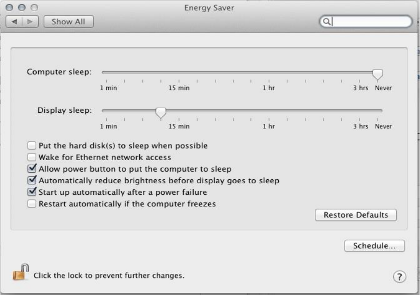
Khaki clover. Version 5.1, revision 5129
Moscow, 2021
146
This corrects the state of the chipset, which was incorrectly initialized by the UEFI-bios. For legacy
boot CloverEFI does everything correctly, there was no such problem. Symptoms - does not go to
sleep, the screen goes out, but the fans do not.
And one more trick.
Without checking the "Start up automatically ..." checkbox, I could not achieve waking up after sleep.
Hibernate
It is also called deep sleep, but in general it looks more like clinical death. The bottom line is
that the system seems to be sent to sleep, but it saves its state in the sleepimage file, and simply
turns off the computer, so that later, when it is turned on, it simply restores its state and wakes up.
For laptops, this is critical. During normal sleep, the computer does not turn off completely, and
continues to use electricity, although less than in working condition, it is still noticeable that the
battery is completely discharged during some sleep time. During hibernation, the battery is not used,
and is discharged only due to its leaks.
Once upon a time, hibernate worked with Chameleon, but only up to version 10.7.2 (sort
of), then, due to some changes in the system, this technique stopped working. In Clover, we
managed to make a hibernate, but under the following conditions:
• Loading either CloverEFI (legacy), or InsydeEFI, or Phoenix 2.3.1. In the current
revision 2915+, the OsxAptioFix2Drv driver appeared, which allows you to have hibernate
with UEFI AMI on a 10.9.1+ system. But the 10.7.5 system does not boot at all with this
option. And God bless her!
• The system is either 10.7.5 or 10.9.1+. Other systems do not wake up yet.
• Fashion 21 or better, 29 or even 57, although Apple insists on 25.
sudo pmset -a hibernatemode 29
Starting with the Captain it is impossible to put 29 like that. The trick is as follows:
- copy /Library/Preferences/com.apple.PowerManagement.511CE201-1000-4000-
Khaki clover. Version 5.1, revision 5129
Moscow, 2021
147
9999-120361221216.plist to the Desktop. There are several such files, choose the one
that matches the UUID in the System Information. Edit this file to add 29
<key> Hibernate Mode </key>
<integer> 29 </integer>
And copy the edited file using the terminal back
sudo cp ~ / Desktop / com.apple.PowerManagement.511CE201-1000-4000-9999-
120361221216.plist / Library / Preferences /
After that, a reboot is required, only then the change will take effect.
• If you have a real, iron NVRAM working, then you can make mod 25. And then we
prescribe in the config
<key> Boot </key>
<dict>
<key> StrictHibernate </key>
<true />
• For system 10.13 and above, you need to enable
<key> RtcHibernateAware </key>
<true />
because the encryption key can be written in CMOS, and because Clover must form additional
NVRAM variables. (you still need to think about the latter.
It works like this:
1. We put the fashion 29 (or 25), if not already displayed. There is no need to repeat.
2. We send the computer to sleep either through the menu, or by closing the lid, or by pressing
the power button, if configured. After a minute, the computer will turn off completely.
3. To wake up, just turn it on as usual. We see the BIOS splash screen, enter the Clover menu.
And here we see that our system is marked
Then like other systems - no. When you click on this icon, the system boots from the image, for a
few seconds, progress is visible below, and the system turns on. This is much faster than normal
system boot, especially for laptops, and especially with a lot of open applications.
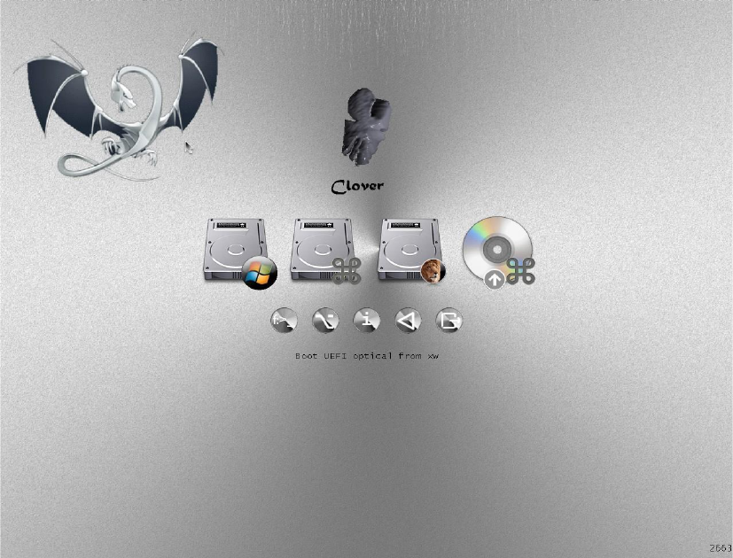
Khaki clover. Version 5.1, revision 5129
Moscow, 2021
148
It should be noted that if the file system of the volume was modified after hibernation, for example,
from a system loaded from the second partition, then there is a serious risk of damage to the file
system, because the sleeping system has a cache with a different structure. For the 10.9 system, this
complexity is overcome automatically by comparing the modification date. In system 10.7.5 this
does not work, please check the correctness manually.
You can cancel waking up from the image by pressing the space bar on this icon, and choosing
"Cancel hibernation".
If the system continues to think that it needs to wake up, then it will have to be written in the config:
<key> Boot </key>
<dict>
<key> NeverHibernate </key>
<true />
How to use
First meeting
First, load into Clover's GUI and try, for a start, live here, press different keys, move the
mouse.
The top row of buttons are the intended operating systems that can be loaded. There are two of
them in this picture, Lion and Windows, as you can see from the pictures. In fact, I remind you that
Clover is not a bootloader for operating systems, it is a manager of their own bootloaders. Namely,
for Mac, the bootloader is
Khaki clover. Version 5.1, revision 5129
Moscow, 2021
149
/System/Library/CoreServices/boot.efi. For Windows, in this case,
/EFI/microsoft/boot/bootmgfw.efi
The bottom row of buttons - additional functions: command line (Shell), Options menu,
information about the loader and the environment, restart and exit Clover. Exit where? Back to EFI
environment, UEFI BIOS or CloverEFI respectively.
It is very useful for initial acquaintance to press F1 (who would have thought ?!). If the config states
<key> GUI </key>
<dict>
<key> Language </key>
<string> ru: 0 </string>
then the certificate will be in Russian
The command line is something like DOS, with the ability to copy and delete files. How and
why is beyond the scope of this book. This is Shell.efi with its help.
The Options menu allows you to change several settings that will affect the boot progress of the
system.
Some of them are set in the config.plist file, but it could well turn out that it is written there
incorrectly, and in order not to edit this file for now, the settings can be changed while Clover is
running.
What exactly to change and why, it depends on the task, what exactly needs to be obtained. Very
annoying requests like “I have a hdd western digital and memory corsair, help me set up
Khaki clover. Version 5.1, revision 5129
Moscow, 2021
150
config ". The config is configured not by hardware, but by the result. If you can't boot right away, try
to figure out what the problem might be and fix it in this menu.
Several special boot methods can be obtained by pressing the spacebar on the bootloader icon.
(again, ENTER - boot the system, SPACE - enter the additional boot menu).
In particular, this is the only way to prevent exiting from the hibernate if it is undesirable.
Why is Clover starting so slowly?
Some even can't wait to launch, they report that Clover is not working.
Let's take a closer look at this issue.
1. Debug.log is exposed.
<key> Boot </key>
<dict>
<key> Debug </key>
<true />
Yes, this is very valuable information to find out what is not working and why. But keep in mind
that this is very slow to launch. If Clover is installed on YUSB (for a test, so to speak, we do not
believe that Clover is capable of working at all ?!), then launching with debug can take 10 minutes.
Really. This is because the debug log opens, closes and
Khaki clover. Version 5.1, revision 5129
Moscow, 2021
151
is overwritten on the USB stick on each line. This will ensure that you get information about the
success of the launch even with a forced cut, so if you went to debug, wait! Or put <false /> for
the first try.
2. There are too many disks, partitions and files on them.
Clover, in order to compose the startup menu, must scan all disks, all partitions, and all files on them
to find which systems can be offered to start. Well wait! Or cancel the scan,
<key>GUI</key>
<dict>
<key>Scan</key>
<dict>
<key>Entries</key>
<false />
<key>Legacy</key>
<false />
<key>Tool</key>
<false />
</dict>
and compose the menu manually
<key>GUI</key>
<dict>
<key>Custom</key>
<dict>
<key>Entries</key>
<array>
<dict>
True, it takes some mental effort to figure out what to write there. Or leave the bootloader scan
for now to boot somewhere.
<key>Scan</key>
<dict>
<key>Entries</key>
<true />
3. Huge Windows or Linux partition, and not even one.
Scanning a Windows partition is performed with an NTFS driver. And in this section, as a rule, there
are a million files, and among them we are going to search for bootmgr.efi.
I would recommend installing Windows so that this file is on the EFI partition, and removing
the NTFS.efi driver altogether, and thus not scanning Windows partitions.
Likewise with the Linux partition and the VBoxExt2.efi driver.
4. Too many drivers in / EFI / CLOVER / drivers / folder
I foresee a situation where people will start producing their own drivers of this type, and there will
be people willing to try them. At the moment, think about whether you need extra keyboard, mouse,
LowMemoryFix drivers ... The fact is that if you start with YUSB, then reading all these files may
take time.
5. Unsupported mouse.
Unfortunately, not all mice are supported by the EFI driver we have. A bad mouse can behave
incorrectly on the screen, or give hard brakes.
Ban it for testing, or even forever if it's wrong
<key>Mouse</key>
<dict>
<key>Enabled</key>
<false />
<key>Speed</key>
<integer>0</integer>
</dict>
6. Slow HFS + driver.
The official Clover comes with the VboxHFS.efi driver, which is licensed and understands links, but
works slower than Apple's HFSplus.efi. Download where-
Khaki clover. Version 5.1, revision 5129
Moscow, 2021
152
Anything this unofficial but fast driver, and put it in a folder
/ EFI / CLOVER / drivers / UEFI /. This also applies to legacy (..drivers / BIOS /) boot.
7. A monstrously beautiful theme has been chosen.
The richer the theme is in colors and animation, the longer it takes to load. Choose the built-in
theme, it is the fastest
<key> GUI </key>
<dict>
<key> Theme </key>
<string> embedded </string>
8. Use the newest Clover.
Whatever good advisers whisper, but the new version is better than the old one, and bugs have been
fixed in it, in particular, which caused Clover to freeze. And starting with revision 3063, messages
appeared directly on the screen about the boot process.
The lettering is crooked because a good font has not been loaded yet, and this has generated a lot of
unflattering responses "How do I remove the lettering on the screen?" Put timeout = 0 and there will
be no labels. And to begin with, they are very useful, many new users realized that Clover still
works, just slowly. This chapter is written for them.
Or so
<key> Boot </key>
<dict>
<key>NoEarlyProgress</key>
<true />
Next, we will consider some techniques, special patches and methods of work, assembled
according to the principle of a reverse dictionary. There is a problem -> here is the solution.
Analyzing Debug.log / Preboot.log
What for? Clover will give you information about the hardware that you will not see from
the specifications on the site, and will also tell you how he copes with the configuration before
starting the system.
How do I get it? Let me make a reservation right away that this is the same thing, with a
difference in success and speed. To get the preboot.log, go to the Clover Shell (GUI) and press
F2. The preboot.log file will be saved in the Clover EFI / CLOVER / misc / folder. File
Khaki clover. Version 5.1, revision 5129
Moscow, 2021
153
ends with the phrase Enter GUI, which is logical. However, if you boot the system, then the file
will end at the start of the system itself, that is, everything you can.
If Clover hangs, then debug.log will help. To get it, put it in the config
<key> Boot </key>
<dict>
<key> Debug </key>
<true />
In this case, the file is created line by line and it is guaranteed that you find a breakpoint in it.
Example:
222: 890 0: 001DefaultIndex = -1 and MainMenu.EntryCount =
7 222: 892 0: 001SetScreenResolution: 1366x768 -
already set 0: 1000: 100MemLog inited, TSC freq:
2591578780
0: 1000: 000CPU was calibrated with ACPI PM Timer
Here we see that after the message about changing the screen resolution, a new log started. That is,
the error must be looked for in the Clover's text after this message, and before the next message,
which was not. Tell these lines to the developer, he will search.
Let's analyze now what we see in the log.
MemLog inited, TSC freq: 2591583140
Here is the starting clock speed of the processor. According to the standard, the processor runs
with one core at the maximum non-turbo frequency. If this is not the case, ring the bells urgently!
Will not work. Such situations are rare, and we deal with each individually with special Clover
amendments. The figure is not round, and rightly so! It will be round only in utilities that do
rounding for simplicity of display.
Now is 7/14/2019, 8: 47: 7 (GMT)
Launch date and time GMT. In Moscow, the local time will be +3. Distinguishing the old log from
the new one.
0: 1000: 000Starting Clover revision: 5120 (master, commit dddceaae3) on American
Megatrends EFI
Here and below we will find out which version of Clover the user used, and he also has UEFI boot, as
in this case, or Legacy (it would be Clover EFI).
=== [Get Smbios] ====
Next comes the decoding of memory modules, as the BIOS recognized them. Usually correct, so we
put in the config
<key> SMBIOS </key>
<dict>
<key> Trust </key>
<true />
And if you don't like the values, then false. Clover will then determine by itself by reading
SPD or XMP. In SMBIOS, the values are also taken from the SPD reading, according to the
BIOS algorithms. We have good algorithms, but universal, and in BIOS they are specific for
this motherboard, so it's not a fact who is more accurate.
<key> Boot </key>
<dict>
<key> XMPDetection </key>
<string> -1 </string>
See the chapter on configuration.
Running on: 'Latitude E6430' with board '0H3MT5'
And this is information, as your computer is called.
=== [GetCPUProperties] ====
Here is information about the processor, and CPUID, and its own name
Khaki clover. Version 5.1, revision 5129
Moscow, 2021
154
BrandString = Intel (R) Core (TM) i5-3320M CPU @ 2.60GHz
Khaki clover. Version 5.1, revision 5129
Moscow, 2021
155
And other important characteristics.
MSR 0xE2 before patch 1E008404
See the eight? This is a lock, a terrible sin for Mac. If possible, flash the BIOS to the unlocked one. If
not, then it is quite possible to live by installing patches
<key> KernelAndKextPatches </key>
<dict>
<key> KernelPm </key>
<true />
<key> AppleIntelCPUPM </key>
<true />
Clover, in theory, will do it automatically, but it's better if you do it manually.
Turbo: 31/31/31/33
These numbers mean that 3300 MHz is achievable on one core, only 3100 MHz on two or more
cores. Since all cores are enabled in the Mac, there is no need to make a claim that the processor in
the Mac is not overclocked to the maximum possible frequency of 3300.
I, however, have one more line
The CPU not supported turbo
This is most likely the BIOS banned the use of turbo frequencies. It is necessary to look at the
BIOS settings.
=== [GetDevices] ===
I love this section very much, it tells which PCI (PCIe) devices are found on the computer, along
with their addresses and DeviceID / VendorID. It helps a lot to find out if you can find drivers for
this device
0:
100
0:
000
PCI (00 | 00: 00.00): 8086 0154 class =
060000
MCH
0:
100
0:
000
PCI (00 | 00: 01.00): 8086 0151 class =
060400
0:
100
0:
000
PCI (00 | 00: 02.00): 8086 0166 class =
030000
VideoCard
0:
100
0:
000
- GFX: Model = Intel HD Graphics 4000
(Intel)
0:
100
0:
000
PCI (00 | 00: 14.00): 8086 1E31 class =
0C0330
USB3.0
0:
100
0:
000
PCI (00 | 00: 16.00): 8086 1E3A class =
078000
IMEI
0:
100
0:
000
PCI (00 | 00: 16.01): FFFF FFFF class =
FFFFFF
0:
100
0:
000
PCI (00 | 00: 16.03): 8086 1E3D class =
070002
SerialPort
0:
100
0:
000
PCI (00 | 00: 19.00): 8086 1502 class =
020000
LAN
0:
100
0:
000
- LAN: 0 Vendor = Intel
0:
100
0:
000
PCI (00 | 00: 1A.00): 8086 1E2D class =
0C0320
USB2.0
0:
100
0:
000
PCI (00 | 00: 1B.00): 8086 1E20 class =
040300
HDA
0:
100
0:
000
PCI (00 | 00: 1C.00): 8086 1E10 class =
060400
0:
100
0:
000
PCI (00 | 00: 1C.01): 8086 1E12 class =
060400
0:
100
0:
000
PCI (00 | 03: 00.00): 14E4 4353 class =
028000
WiFi
0:
100
0:
000
- WIFI: Vendor = Broadcom
0:
100
0:
000
PCI (00 | 00: 1C.02): 8086 1E14 class =
060400
0:
100
0:
000
PCI (00 | 00: 1C.03): 8086 1E16 class =
060400
0:
100
0:
000
PCI (00 | 00: 1C.05): 8086 1E1A class =
060400
0:
100
0:
000
PCI (00 | 0C: 00.00): 1217 8221 class =
080501
SD-reader
0:
100
0:
000
PCI (00 | 00: 1D.00): 8086 1E26 class =
0C0320
USB2.0
Khaki clover. Version 5.1, revision 5129
Moscow, 2021
156
0:
100
0:
000
PCI (00 | 00: 1F.00): 8086 1E55 class =
060100
LPC
0:
100
0:
000
PCI (00 | 00: 1F.02): 8086 1E03 class =
010601
SATA AHCI
0:
100
0:
000
PCI (00 | 00: 1F.03): 8086 1E22 class =
0C0500
SMBUS
0:
100
0:
000
PCI (00 | 00: 1F.06): FFFF FFFF class =
FFFFFF
some devices are also commented.
FFFF means that the device is not connected, although it is somehow present.
The device class is Video, Audio, USB2.0, USB3.0, LAN, WiFi and so on. All decryptions are
known from PCI specifications. I added the class decryptions in the right column, they are not in the
log. Class 060400 is a bridge, a slot where a device can be inserted.
There are no USB devices here. Clover is not old enough to scan them. And
here's another moment, from someone else's log
- GFX: Model = GeForce GTX 760 family CE (Fermi)
What do we see ?! 760 must be Kepler! Why does Clover say she's Fermi?
Khaki clover. Version 5.1, revision 5129
Moscow, 2021
157
Clover is right, he cannot be fooled by the BIOS rewiring, information about the video card family is
taken not from the BIOS, but from the functioning of the video core.
0: 1280: 027EFI \ CLOVER \ #. Plist not loaded with name from LoadOptions: Not
Found 0: 1430: 015EFI \ CLOVER \ config.plist loaded:
Success
This ability of Clover is practically not used by anyone. The thing is that there is a place in the BIOS
where to flash the name of the config.plist file, and thus you can choose directly in the BIOS with
which config to load Clover. In this case, no such name was found, and therefore the standard
config.plist is loaded. In general, you can use it if you remember the instructions of 2014 from
Dmazar.
Below in the log there is another list
0: 3460: 003 === [Found config plists] ===============================
0: 4030: 057- config0.plist
0: 4030: 000- config1.plist
0: 4030: 000- config.plist
This is for the Clover menu to change the config from there. But the Boot, GUI and
KernelAndKextPatches sections will not change anymore. Late!
0: 1430: 000 === [GetListOfThemes] ===================================
0: 1620: 018- [00]: embedded
0: 1760: 014- [00]: random
0: 1770: 001- [00]: metal
0: 1880: 010- [01]: BGM
0: 2230: 035- [02]: CESIUM
0: 2850: 061- [03]: METAL @ 2X
0: 2980: 012- [04]: Clovy
0: 3430: 044- [05]: BOOTCAMP
This is understandable, a list of everything established. Unless you make sure that a theme is
selected in the config, which is really there.
KextsToPatch: 13 requested
KernelToPatch: 1 requested
A small list of what is set in the config for the kernels and kernels patches. We look at someone
else's config, and criticize why he made certain patches.
0:
749
0:
002
=== [LoadDrivers] =======================================
0:
861
0:
111
Loading ApfsDriverLoader.efistatus = Success
0:
883
0:
021
- driver needs connecting
0:
885
0:
002
Loading AudioDxe.efistatus = Success
0:
893
0:
007
- driver needs connecting
0:
895
0:
002
Loading DataHubDxe.efistatus = Success
0:
917
0:
022
Loading EnglishDxe.efistatus = Success
0:
926
0:
009
Loading Fat.efistatus = Success
0:
935
0:
008
- driver needs connecting
0:
937
0:
002
Loading FSInject.efistatus = Success
0:
944
0:
007
Loading OsxAptioFix3Drv.efistatus = Success
0:
952
0:
007
Loading SMCHelper.efistatus = Success
0:
959
0:
007
Loading VBoxHfs.efistatus = Success
0:
966
0:
007
- driver needs connecting
0:
0:
4 drivers needs connecting ...
Khaki clover. Version 5.1, revision 5129
Moscow, 2021
158
968
002
0:
970
0:
002
PlatformDriverOverrideProtocol not found. Installing ... Success
0:
974
0:
004
APFS driver loaded
0:
978
0:
003
Searching for invalid DiskIo BY_DRIVER connects: not found, all ok
And the next reason for criticism is why the user downloads these drivers, and why does not
download others.
SetScreenResolution: 1366x768 - already set
I ordered this permission for my screen. And it was successfully displayed.
For those who have a desire at odds with reality, see the chapter on configuration.
Khaki clover. Version 5.1, revision 5129
Moscow, 2021
159
4: 4810: 002 === [GetMacAddress] ======================================
4: 5610: 080MAC address of LAN # 0 = D4: BE: D9: 6C: 86: CD:
Clover can read the MAC address of almost any network card. We use this information to set our
value to the ROM variable. This does not work on some UEFI BIOS, we are looking for other ways.
=== [ScanSPD] ====
Checking memory modules if we don't trust BIOS.
=== [GetAcpiTablesList] ====
List of ACPI tables found in BIOS. Useful if you want to drop some (drop)
- [06]: SSDTCpuPm len = 2850
There is also an ID = CpuPm and a length of 2850. You can drop it this way and that, depending on
the uniqueness.
=== [GetUserSettings] ===
some selective information, what exactly is set in the config, is especially useful for reading other
people's logs.
=== [ScanVolumes] ===
List of volumes with their addresses and UUIDs. A volume is either a partition or a
whole disk. Helpful to see when "Clover can't see my section!"
=== [InitTheme] ====
Further information on the successful creation of a graphical interface with the selected theme.
For example, I see
OSicon os_mav not parsed
that is, my chosen theme does not have a Mavericks icon, just a Mac icon will be used.
There is also information about the start sound, which depends on the theme.
6: 5110: 002 === [Dump SMC keys from NVRAM] ==========================
6: 5700: 059found AppleSMC protocol
6: 5840: 014 Registered 17 SMC keys
In most cases, SMC keys do not matter at the start. They are strictly required for FileVault2 and
Hibernation. Provided by the SMChelper.efi driver and Clover infrastructure. (there is another
version of VirtualSMC with its own infrastructure).
For the installation of the system seems not necessary, but ... who knows!
=== [ScanLoader] ===
And here is already a list of what you can download from. And also information if any system
is in a state of hibernation.
=== [GetEfiBootDeviceFromNvram] ====
It depends on the success of this operation whether Clover autostart on timeout. See instructions from
the corresponding chapter.
Success looks like this
Boot redirected to Entry 3. 'Boot macOS from HighHD'
That is, my system boots from the HighHD disk by timeout.
=== [StartLoader] ===
We start loading the system
GetOSVersion: 10.13.6 (17G7024)
To see which system the user is talking about loading.
Khaki clover. Version 5.1, revision 5129
Moscow, 2021
160
This is followed by information about what Clover does before booting the selected system, which
patches, which properties are generated, which kexts are loaded, and the last line to unlock USB2.0, if
necessary.
USB EHCI Ownership for device 1E26 value = 1000001
In version 5120, the log continues with values from the kernel patch procedures and kexts. This
is for developers.
Running OSX on unsupported hardware
Actually, the whole book is about THIS. I'll tell you partly here, starting from the question.
Unsupported BIOS. Still would! It is about Hackintosh that we are talking about. And first
of all, this is the data in DMI, which contains the manufacturer's name (must be Apple inc.), Model
and serial number, numbers and letters in which are not random, they mean something, in particular
the model and production date. In the simplest version, since the days of Netkas, the model was
installed by everyone with MacPro3,1, and a certain serial, one for all, that worked. Now Clover,
having analyzed the hardware, offers dozens of options that are workable.
Nevertheless, it is recommended to generate your own serials, or maybe take a model different from
the default model.
Unsupported processor... Yes, different versions of MacOS support different sets of CPUs,
and your CPU may not be supported.
Here is a table for old systems:
one
one
etc
Then yes, support for Yonah and XeonMP has been discontinued; the newer the processor the newer
the system is required; Atom has never been supported, although it looks like an ordinary Intel
processor. The label is out of date, see the XNU sources. Skylake, for example, is supported on
10.11.6 and up.
CPU name
10.9..
.five
CPUID
10.4
10.5...8 10.6...3 10.6...8 10.7...2
10.7...5 10.8...five
Yonah
0x0006E6
one
one
one
one
one
one
0
0
Conroe
0x0006F2
one
one
one
one
one
one
one
o
n
e
Penryn
0x010676
0
one
one
one
one
one
one
o
n
e
Nehalem 0x0106A2
0
one
one
one
one
one
o
n
e
Atom 0x0106C2
0
0
0
0
0
0
0
0
XeonMP
0x0106D0
0
0
0
one
0
0
0
0
Linnfield
0x0106E0
0
0
one
one
one
one
one
one
Havendale
0x0106F0
0
0
one
one
one
one
one
o
n
e
Clarkdale
0x020650
0
0
0
one
one
one
one
one
AtomSandy
0x020660
0
0
0
0
0
0
0
0
Lincroft
0x020670
0
0
0
0
0
0
0
0
SandyBridge
0x0206A0
0
0
0
one
one
one
one
one
Westmere
0x0206C0
0
0
0
one
one
one
one
one
Jaketown
0x0206D0
0
0
0
one
one
one
one
one
NehalemEx
0x0206E0
0
0
one
one
one
one
one
one
WestmereEx
0x0206F0
0
0
0
one
one
one
one
one
Atom2000
0x030660
0
0
0
0
0
0
0
0
IvyBridge
0x0306A0
0
0
0
0
0
one
one
one
Haswell
0x0306C0
0
0
0
0
0
0
o
n
e
IvyBridgeE5 0x0306E0
0
0
0
0
0
0
0
one
HaswellMB 0x0306F0
0
0
0
0
0
0
one
one
HaswellULT 0x040650
0
0
0
0
0
0
one
one
CrystalWell 0x040660
0
0
0
0
0
0
one
one
Khaki clover. Version 5.1, revision 5129
Moscow, 2021
161
When you start the system on an unsupported processor, you get a kernel panic. To prevent
it, the KernelCpu = true patch is used. It just replaces the panic call with an empty statement and
everything keeps working. How correct is it? Well, at least it works!In the new revisions of Clover,
I made a patch FakeCPUID = 0x010676. Or other numbers that are suitable for your system and
close to your processor (about the same generation, for example, Atom should be replaced by
Penrin, or even Conroy). The substitution occurs in the kernel at the level of a call to the
get_cpu_info () procedure and thus will affect those kexts that ask the CPU for information,
instead of calling CPUID themselves. For example, this is how
AppleIntelCPUPowerManagement.kext works and is affected by this patch.
Example:
<key> KernelAndKextPatches </key>
<dict>
<key> FakeCPUID </key>
<string> 0x010676 </string>
Unsupported graphics card.
Intel... Supported: GMA950, X3100, HD3000, and above. Alas, no substitutions help. Each option
has its own set of patches, and if the video card is different, then at best you will have a picture,
without the possibility of changing the resolution, and without any 3D effects. In principle, you can
live, but the impossibility of calibrating the screen color does not suit me, because it is impossible
to work even with photographs on such a computer. HD4000 and above are supported on 10.14.
But HD4000 does not support 10 bits / color, but Skylake HD530 already does!
Nvidia... 7300-7600 cards are only supported up to system 10.7.5 in 32-bit mode. It's probably
useless to talk about older cards.
There are some questions for the 4xx / 5xx series of Fermi cards. They should also be considered
partially supported, and only up to system 10.11.6. In the case of Nvidia, also monitor the
AppleGPUPowerManagement cache, it may also have the ID of your card or a similar card.
For systems 10.12 and higher, only Kepler, the GK family, works natively. For newer cards, a
WEB driver is needed, which exists only before system 10.13.6. These are GTX 6xx-7xx cards, but
not all, there are also Fermi among them, then a bummer. For Nvidia to work, a trick with
MacModel, or with substitution of BoardID is required. For systems 10.14 and higher, there are no
web drivers, that is, Maxwells and Pascals are generally in flight. On the other hand, someone
starts old Tesla in the Mojave, apparently Apple has left a loophole for their old computers.
ATI / AMD... The whole story. And about how I got the Radeon9000IGP running, and about dong's
kekst for X1500, and Callisto's kekst, and complex recipes for patching connectors for modern
cards. See this book. A lot has been done for the Radeons, look, read, don't be teapots! On systems
10.13 and higher, Radeon 6000 series and lower do not work. They do not have support for Metal,
and therefore the drivers in the system are defective, or even do not turn on at all.
Now here also WhateverGreen by vit9696 - "the driver of all video cards, just install the
latest version, as well as the latest version of Leela, and don't think about anything. In Clover, you
need to disable everything related to video cards." But I don’t play like that! Who does not want to
understand, please use. For others, we analyze step by step what is needed to factory a video card.
5700 cards only work starting from Catalina. For the Mojave, for example, the list of possible
cards is 550-590 and Vega.
Khaki clover. Version 5.1, revision 5129
Moscow, 2021
162
Sound card. Professional cards usually have Mac drivers.
Chipset HDA codecs are supported all with VoodooHDA cakes. None of the codecs on the market
are supported by the native AppleHDA core. There used to be ALC885, but now it is not found.
But the hackers developed the AppleHDA patch method so that it would support almost any real-
tech chip (that is, ALCxxx) they needed. Clover helps to fix DSDT for this kext, and suggests ways
to patch the keystroke on the fly. What exactly to patch and how to read on the forums. HDMI
Audio works with Clover's DSDT patches, however it does not work with some AMD cards. But in
10.13+ systems there is a new driver AppleGFXHDA.kext, study it!
Network Card. First, Apple drivers support a variety of chips. Secondly, for network cards
programmers have learned to write kexts, and drivers exist for most of the known cards. In some
cases, it is enough to make a FakeID for the card for it to be included in the list of supported by
native drivers, but in most cases a separate cache is needed.
WiFi... And here everything is very sad. Some Broadcom, Atheros and Ralink are supported.
Look at the forums for information about each specific model. Intel does not. Clover can help with
FakeID, for example, in my version of replacing Boadcom4315 with a supported 4312. And also
Atheros with neighboring numbers.
Since 2020, a driver for some Intel WiFi cards has appeared on the network. There are chances!
Kext blocking
I happened to install Geenna.kext into the SLE system folder. There is a panic on the
screen, after a reboot, this kext is loaded first of all, and then there is panic. So what to do now? It
needs to be removed, but there is no other system on this computer yet. For this purpose, an
additional function has been introduced into Clover: in the Options Menu in the third line,
enterBlock kext: Geenna and calmly boot the system into single user mode (space on the system
icon). The kext will not have time to load, because it is blocked. In this text mode
fsck -fy
mount -uw /
rm -r -v /S*/L*/Ex*/Geenna.kext
reboot
Reboot is necessary here, otherwise the kernel will still load this kext with the next step, and again
there will be panic.
The new Clover has a new technique: we put all our kexts in the EFI / CLOVER / kexts / Other
folder. And in the Clover Details menu (the "space" key) we will find a submenu for blocking /
unblocking kexts.

Khaki clover. Version 5.1, revision 5129
Moscow, 2021
163
Starting with revision 5052, it became possible to store unnecessary kexts in the Off folder, and
connect them in the same menu as needed
In this case, the kexts in the Other folder are connected by default, and in the Off folder are disabled,
but are visible by Clover for connection.
Khaki clover. Version 5.1, revision 5129
Moscow, 2021
164
Slot name (AAPL, slot-name)
This is mainly cosmetics, although there are claims that it is absolutely necessary in some
cases.
Where does the system get the slot name from? In the old way, they tried to inject it through the
_DSM property "AAPL, slot-name", but this is a completely wrong method because it treats the effect
instead of the cause. This property is exposed by the AppleSMBIOS system cache based on the ACPI
property _SUN and DMI tables. That is, _SUN sets an ID in the range 0-255, where the SMBIOS
table type 9 is located with the corresponding ID, from where the slot name and its other properties
are taken.
See the chapter on filling in the config, section SMBIOS-> Slots
HDMI sound
Everything AppleHDA needs has been investigated by Toleda, but not everyone will want to
seek out his explanations in English. I made patches for DSDT, with his participation, to get as
close as possible to his result.
There are basically two options for an HDMI device.
1. On an external video card ATI or NVidia. In the system, it is listed as a sound device of the HDA
= 0x0403 class, and is serviced by the same sound driver. It is only necessary that both the video
card and the HDMI have the same property "hda-gfx = onboard-1". Or maybe not! Unsupported
device.
2. The integrated Intel card has an HDMI connector, but there is no such device, it uses the sound
from the chipset HDA. In this case, you need to register in the config
<key> Devices </key>
<dict>
<key> UseIntelHDMI </key>
<true />
In this case, the sound from ATI or NVidia will become "onboard-2".
Required fixes for DSDT: FixDisplay_0100, FixHDA_8000, AddHDMI_8000000
3. Option, that the insert is only used for IQSV. Then (iMac18,3) HDEF
device has No-hda-gfx property
IGPU has nothing (inline for IQSV)
In GFX0 (which Radeon) is hda-gfx = "onboard-1" And
in HDAU it is the same.
Clover does not automatically do this yet, use the Properties array.
Note that all these additional properties are needed only for AppleHDA. The VoodooHDA
driver does not need external prompts.
Computer startup sound
This is the invention of Goldfish64. He wrote an EFI driver for HDA audio, and made
utilities for sound tuning, testing and dumping an audio codec.
https://github.com/Goldfish64/AudioPkg
But he inserted a sound at the time boot.efi started, intercepting its call by the bootloader. That is,
the idea is for this to work not only with Clover, but with any EFI bootloader, without touching its
internal codes. And I'm more interested in the sound to work before entering Clover's interface, or
even while I walk through its menu. The license is open, so I remade it to suit my wishes. All
settings and tests can be performed by Clover himself,

Khaki clover. Version 5.1, revision 5129
Moscow, 2021
165
with its graphical menu, and I included the driver in Clover's repository so that it would not get lost,
and so that in the future it could be improved without asking the author, who may disappear, not
today, so tomorrow.
So, for sound to work, you need:
1. Use Clover revision 4871+. It worked in previous revisions, but in bugs.
2. Put the AudioDxe.efi driver in the EFI / CLOVER / drivers / BIOS or drivers / UEFI folder,
respectively. Or both. This driver, supplied with Clover, already differs from the author's
original, not yet fundamentally, but I would recommend my own version.
3. Put sound files named sound.wav and sound_night.wav in the themes you use. Thus, the starting
sound depends on the selected theme. sound_night.wav is optional, if not, then sound.wav will
play at night. These files must be in RIFF / WAV format, 2 channels, 16bit little endian unsigned
int, the sampling rate can be 8, 44.1, 48kHz, the file size depends on it. The sound itself supports
44 and 48 kHz, or even more. For the sake of compactness, I allowed 8kHz, and Clover converts
such a file on the fly to 48kHz. The quality is inevitably less, but for such a case it is not
particularly necessary. But we managed to pack the sound of this format directly into Clover, and it
is used for testing the output.
4. Go to the Clover interface, Startup sound output →, and test which of the outputs will play
In the first line, we adjust the sound volume from 0 to 100. This is a percentage, there is no more
than 100. A value of 0 means no sound will be played. That is, this is not something that shouts
with a closed mouth, but that attempts to meow are not made. By the way, I don’t know if the scale
is linear or logarithmic.
The following lines are combined from the chip model and its output. If you have several sound
cards, as is often the case, in addition to the built-in one, there is also HDMI, then you will see
everything in this list, with all their outputs. Choose, press F7, listen. After getting out of this
Khaki clover. Version 5.1, revision 5129
Moscow, 2021
166
menu, the selected setting will be saved in NVRAM, including the emulated one in the variables
Clover.SoundVolume, Clover.SoundDevice, Clover.SoundIndex. Here I have a difference from the
goldfish, it saves the settings in a private area with its UUID, which is impossible for emulated
memory, for Legacy Clover. My settings will be visible from the system, can be removed or
modified from the system, and the Clover prefix ensures that there is no conflict with Apple's
interests. At this stage, Clover will read the fish settings if there are none of his own, but in the
future he will only use his own.
On the next reboot, you will hear a sound before loading the Clover shell, but after ... scan entries ...
In the config, these settings are not taken out, to nothing. In any case, you must first test, and
therefore write the settings to NVRAM. But in the config there is one setting left over from
the test period. PlayAsync = true.
If false, then while the sound is playing, nothing works. It seems so in the real world.
If true, then the sound is played in the background, without interfering with everything else. I put on
a long audio file and listened to music. GUI Clover appeared, the music was playing, I went to the
menu and chose to load in a verbose. Music plays. I clicked "load system" and look at the messages:
boot.efi has worked, the music is playing, the kernel has started, the music continues to play! And
only after a few loaded kexts, she shut up, probably it was VoodooHDA, which reinitialized the
sound chip. I did not find any problems in the loaded system. In revision 4862, it was impossible to
use asynchronous sound, it hangs. Revision 4871 resolves the issue and allows you to use the
default asynchronous sound.
NVRAM, iMessage, multiboot
I actually raised the question of using the nonvolatile memory NVRAM by the system using
the GetVariable () and SetVariable () functions back in 2010
http://www.projectosx.com/forum/index.php?showtopic=1504
Then I tried to implement working with him in Chameleon in my own branch, but did not receive
any support. No one wanted that, although my argument about the Boot Disk control panel was
compelling. Then the gurus explained to me that it is in the DUET loader, therefore, when starting
the Clover project based on DUET, I first of all set the goal of providing this functionality.
The Chameleon has these functions, but they are made very simply "return Unsupported", so
that the system launched with the Chameleon does not panic and simply does not respond to the call
of these functions. This worked for the time being, except for the StartupDisk panel. But the
iMessage service has already refused to work in this version. No substitution and emulation worked.
I bow my head to Meklorth, who, within a month, still came up with a way to make this
functionality in Chameleon, using the FakeNVRAM.dylib module and some mother.
What is meant by NVRAM health? If the system wants to save a variable until the next
reboot, it writes it to NVRAM using the SetVariable (...) function. We can also save our variables
using the nvram utility:
sudo nvram MyVar = qu-qa-re-ku
after reboot this variable should be known in the system using the read command
nvram MyVar
How does Clover make this service work?
Khaki clover. Version 5.1, revision 5129
Moscow, 2021
167
1. For legacy loading, the EmuVariableDxe functions are used. This, of course, is not real non-
volatile memory, due to the fact that Legacy-Clover is intended for those computers where there is
no such memory at all, as well as there is no own EFI with the necessary services. This driver
writes variables simply to memory, but this memory is available for use by MacOSX in its native
interface. When the system shuts down, the rc.shutdown.local script is called, which saves all this
memory to the nvram.plist file at the root of the system drive. Clover, at startup, searches for this
file, and writes all the variables from there back to the RAM that emulates NVRAM. The method is
incomplete, because only variables with AppleBootGuid are saved in this way, however, this is
enough to select the Start Disk.
2. For UEFI downloads, we rely on our own VariableDxe service, which is provided by the OEM
UEFI. In revision 2837, Dmazar corrected the work with this service, so that now it works for most
users in a native way. For those for whom this still does not work, the EmuVariableUEFI emulation
driver is provided, which works similarly to the Legacy driver, and also requires scripts and the
nvram.plist file. New times have come! Again, vit9696 corrected the OsxAptioFix driver so that the
hardware NVRAM would work, but on the new 360, 390 chipsets this does not work. The change
is represented by the OsxAptioFix3Dxe driver, and vit9696 itself offers a more advanced version of
AptioMemoryFix, now included in the Clover repository.
EmuVariable in both cases is not a full-fledged emulation. For example, panic.log is not
saved, simply because the script does not have time to run. The variable boot0082, which is
required for hibernation, is not saved either, but we got around this problem in other ways. But
having panic.log, a longtime dream of hackintoshars, remains Clover's prerogative with real
NVRAM. And again, hibernation in mod 25 requires saving the encryption key online, that is,
only with a real NVRAM.
iMessage is an instant messaging system from Apple itself. Since December 2012, the rules
for registration and use have changed, and all hackintoshares are out of work. She would have
worked with Clover if in September, having dealt with the iCloud service, we had not made a
mistake in the number of digits, we had to leave 17, and we left 12. The mistake was understood
only in January, and thus the Chameleonites understood what was the matter. only they did not
have NVRAM, without which all this was impossible. Namely, for successful registration of
iMessage, it is necessary to write in NVRAM the ROM and MLB variables that are unique for each
computer, and the computer is identified by its HardwareUUID, which, accordingly, must also be
unique. For absolutely newbies, I made the generation of these properties based on DMI data, but
also a recommendation to enter the appropriate values in config.plist, for those who thinks a little
more. At the same time, it turned out that the iMessage service is paid, and the user needs to
register his account in the app store, from which Apple can write off $ 1 to verify that the bank
account is valid. This also implies the need for a unique account. You do not need to use someone
else's ROM, MLB and UUID, and even more so, someone else's bank card. When everything is
different, ROM has 12 digits, MLB has 17 digits, UUID is nonzero, and all this is unique, the
account is tied to a valid account with money, iMessage will work. And don't listen to any
speculation about en0, partition formatting and the like. I have listed all the conditions. that the
bank account is valid. This also implies the need for a unique account. You do not need to use
someone else's ROM, MLB and UUID, and even more so, someone else's bank card. When
everything is different, ROM has 12 digits, MLB has 17 digits, UUID is nonzero, and all this is
unique, the account is tied to a valid account with money, iMessage will work. And don't listen to
any speculation about en0, partition formatting and the like. I have listed all the conditions. that the
bank account is valid. This also implies the need for a unique account. You do not need to use
someone else's ROM, MLB and UUID, and even more so, someone else's bank card. When
everything is different, ROM has 12 digits, MLB has 17 digits, UUID is nonzero, and all this is
unique, the account is tied to a valid account with money, iMessage will work. And don't listen to
any speculation about en0, partition formatting and the like. I have listed all the conditions.
Khaki clover. Version 5.1, revision 5129
Moscow, 2021
168
formatting partitions and the like. I have listed all the conditions. formatting partitions and the like.
I have listed all the conditions.
Boot Disk is a service that allows you to select in the control panel which system we want to
reboot into, press restart, and just leave.
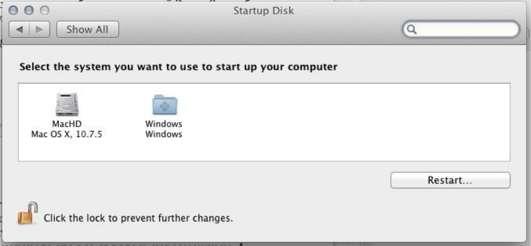
Khaki clover. Version 5.1, revision 5129
Moscow, 2021
169
Computer he will do everything himself. This service requires the disk to be GPT partitioned. So you
can switch between 10.9 and 10.7, for example.
Remember the general rule: dynamic data takes precedence over static data. Data from NVRAM
takes precedence over data from config.plist.
Using multiple configurations
Possible problem: you have several systems, but these systems must boot with a different set
of patches specified in the config, for example, the definition of Radeon's framebuffer in the new
system is not the same as in the old one. But how to do this if there is only one config in the clover?
Starting from revision 3266, this option is provided.
Here's a config
<key> GUI </key>
<dict>
<key> Custom </key>
<dict>
<key> Entries </key>
<array>
<dict>
<key> FullTitle </key>
<string> Lion special </string>
<key> Settings </key>
<string> config-special </string>
<key> Volume </key>
<string> EE9CCC69-EE7F-358F-B120-BCD07AD78282 </string>
<key> SubEntries </key>
<array>
<dict>
settings
</string>
<key> FullTitle </key>
<string> Boot Lion with own
<key> CommonSettings </key>
<false />
</dict>
<dict>
settings
</string>
<key> FullTitle </key>
<string> Boot Lion with common
<key> CommonSettings </key>
<true />
Khaki clover. Version 5.1, revision 5129
Moscow, 2021
170
</dict>
</array>
</dict>
<dict>
<key> FullTitle </key>
<string> Lion default </string>
<key> Volume </key>
<string> EE9CCC69-EE7F-358F-B120-BCD07AD78282 </string>
<key> Type </key>
<string> OSX </string>
</dict>
</array>
</dict>
The following is described here: we have assigned our own main menu items (Entries) named
"Capitan special" and "Capitan default". The second item, as usual, allows loading the system with
a common config.plist, taking into account the changes made in the Options menu of the Clover.
The first item creates a new icon for the same system, but it will be loaded with another config
config-special.plist, as specified in the Settings key.
But that's not all. By pressing the spacebar, we will enter the launch menu, and here we will find our
inputs, registered as SubEntries
Khaki clover. Version 5.1, revision 5129
Moscow, 2021
171
Compare the config with the above pictures for clarity of what is going on.
The second item in this menu means rejection of the special config in order to use the general
one.
It is clear that since a special config is connected after Clover is launched, then the Boot and GUI
sections are no longer needed in it, they can only be in the general config. I, personally, used this
opportunity to test new configs for launching the captain, having one verified worker. The working
one is special, and the general config is experimental, because the general config can be changed
through the menu, and the special one is used as is.
Now in Clover it is possible to switch configs directly in the menu. Here is a picture:
The limitation of this method is that the Boot section does not change. Also it doesn't change
KernelAndKextPatches. The new config will take effect after exiting the main menu.
Here confusion arises, why change the config at all, if not for KextPatches? Alas, it does not work,
the reason is somewhere deep in Clover's algorithms. On the other hand, write all patches
Khaki clover. Version 5.1, revision 5129
Moscow, 2021
172
IN
one config, the main one, and in the Clover interface you can enable or disable them with a tick.
The use of different configs, except in different SMBIOS sections.
How do I prevent boot.efi from getting too spammy on the screen?
Enter this menu
and
write log = 0 there. Other values are possible, researched by vit9696
log = value, output direction
1 - AppleLoggingConOutOrErrSet / AppleLoggingConOutOrErrPrint (classical ConOut or StdErr
on failure)
2 —AppleLoggingStdErrSet / AppleLoggingStdErrPrint (StdErr or serial?)
4 —AppleLoggingFileSet / AppleLoggingFilePrint (BOOTER.LOG / BOOTER.OLD file on
EFI partition)
debug = value
1 - enables print something to BOOTER.LOG (stripped code implies there may be a crash) 2
- enables perf logging to / efi / debug-log in the device three
4 - enables timestamp printing for styled printf calls
level = value - error rate
kc-read-size = value - log size
For our purposes, log = 0 is enough, which is done by default in Clover.
FAQ
Chaone hundred asked Inmillets.
Khaki clover. Version 5.1, revision 5129
Moscow, 2021
173
Q. I want to try Clover, where do I start?
A. From reading this book.
Shl. It's strange to write this inside a book, but maybe these FAQs will end up outside its pages.
Q. Which version of Clover works best for my hardware?
A. Last. Not even discussed.
Shl. Here is the bug log for some revisions, which is finally fixed: 3514:
DDR4 support
3471: global bug using va_args
3362: SMBIOS bug when lines are duplicated in the original
3358: fixed calculation of the number of cores for many Xeons 3336:
fixed bug with fixed regions
3333: added new processors
3259: Kernel patch that allows loading kexts in ElCapitan 3168:
changing the config in the menu was not accepted by Clover
3164: Fixed IDE driver to work correctly in UDMA mode. 3162: Fixed XHCI
driver to disable legacy and enable ports. 3157: AHCI speed increased significantly.
3154: Prevented looping on InfoPlist. 3147: BiosBlockIO
driver bugs fixed.
3144: fixed bugs with reading config and setting from the menu, interdependencies. 3138: a
bug with the launch of Windows.
3128: bug with reading SPD.
3121: starting from exFAT
partition.
3116: Several installer fixes. 3100: Yossi
kernel patch capability.
3090: Bug VboxHFS.efi is not reading the file that is requested. 3086:
bug with reading the poppy-address hanging on the new chipset.
3074: USB Legacy Support hangs. It was known initially, but the solutions for different developers
were directly opposite and incompatible.
3060: AHCI driver. The patch came from its creators - from Intel.
3057: Overlapping of the address table and EBDA, causing the impossibility of starting
on some BIOS.
3053: Procedures using VA_ARG macros must have EFIAPI, otherwise bugs may occur. And they
were really observed! Patch from Intel.
3041: Added injection of new video cards.
3036: Fixed kernel patch for 10.10. Author - Rehabman. 3035:
Fixed DSDT patch causing freezes.
And so on ... All this is not counting the amendments to the compilation and installation processes, to
cosmetics and design, as well as support for new hardware and new OSes.
Q. Doesn't work.
A. The fool himself.
Shl. Well, what else can you answer?
Q. I installed Clover, but I get a black screen.
A. Booting the OS takes place in eight steps (see page 6). Please, specify at what stage the stop
occurs. And in your report, be sure to indicate "Installed by the installer with a choice of such
options." Then there will be a conversation.
Khaki clover. Version 5.1, revision 5129
Moscow, 2021
174
The most common mistakes:
− CsmVideoDxe does not work with some BIOSes, remove it;
− it happens, that PatchVBios = Yes leads to black screen, try to shutdown,
− worth Boot-> Debug = true. Everything works, but slowly, not enough patience to wait.
For a better diagnosis of what is happening, put
<key> Boot </key>
<dict>
<key> Debug </key>
<true />
in the config.plist file. The download will be very slow, since /EFI/CLOVER/misc/debug.log will be
updated at each step, but after the final hangup you will receive information about what exactly
happened. In reality, when booting from a USB flash drive, it can take about ten minutes before
entering the GUI. Starting with revision 3063, the screen is no longer black, if CloverGUI started
loading, then you will see inscriptions on the screen, by which you will understand what exactly is
happening.
Q. I see 6_ on the screen and nothing else happens.
A. This is the most severe case of iron incompatibility. Now it is no longer found, except with an
AMD processor. Only a programmer can diagnose, who can insert debug messages into Clover's
codes, and make reboot after reboot until the problem is fully clarified. Alas, there is nothing to
advise ordinary users. Read the chapter on slow Clover, can you wait?
Is that playing around with BIOS settings, sometimes it helps. Try boot7 (Clover BiosBlockIO)
instead of the boot file. Or reinstall the boot1 sector.
B. It loads only up to a text analogue of BIOS with five points, the top one is Continue>
A. This means the boot file has loaded successfully and is working, but it cannot find the
CloverX64.efi file. Either he does not see that section, or even the device - you need to understand
further, walking through the options of this menu. For example, the HFSPlus.efi file may be
missing, and you have Clover installed on the HFS + partition. It's strange, actually, why do UEFI
boot from the HFS + partition.
Q. I installed Clover on a USB flash drive, booted from it, and I don't see my HDD.
A. First, the HDD must be inserted into the Sata0 port. In the future, this may already be
corrected.
five
Secondly, I understand that if you have a well-working Ham, Chimera, HRC, in short,
BBH (Booter for the Letter X), you do not want to kill him, but you want to try Clover, then such
an act seems natural. But, nevertheless, there are options for installing Clover on a hard drive that
do not kill the old bootloader, and in this scenario, the announced error will disappear.
Also try the boot7 file if you have any unusual SATA / SAS / RAID controller. On a UEFI
boot, this may also mean that the PartitionDxe.efi and HFSPlus.efi files are missing.
Q. When loading UEFI, I do not see a section with MacOS, only legacy.
A. This means that there is no HFSPlus.efi or its legal counterpart VboxHFS.efi in the / EFI /
CLOVER / drivers / UEFI folder.
5 There was such a bug in the Intel SATA driver, which has now been fixed.
Khaki clover. Version 5.1, revision 5129
Moscow, 2021
175
Q. When UEFI boots, Windows looks like legacy, although it is EFI.
A. The same, the NTFS.efi driver is missing
Shl. These two drivers are not in the repository for licensing reasons, you need to find this file
somewhere on the Internet. There is now a legal counterpart to GrubNTFS.efi. Available in the
Clover installer.
V. Set the native resolution in the bootloader, but the screen is in a black frame.
A. Can't fix it. In any case, the Clover developers could not come up with anything, and no one will
answer this question. There is one option: if you have a UEFI BIOS, then you need to make a UEFI
download, and flash the video card to the UEFI Video BIOS. In BIOS we make the settings:
- OS: Windows 8 WHQL
- CSM: Never
- Full screen logo: Disabled
Nothing can be done for legacy loading. If you don't like the funeral frame, make a lower resolution.
B. When trying to start the OS, it freezes on a black screen
A. At this point, the DSDT patch happens to your mask. Yes, ideally it shouldn't hang here. But the
problem is that a lot of BIOS manufacturers do not comply with the standards, do not know how to
program, and do not want to polish their DSDT for the needs of OSX. It is very easy to make sure
that the operation to decompile - to compile again does not work - is the DSDT curve. Clover
would like to fix all this, but alas, the number of bad options is not even amenable to review.
Therefore, you are required to select such a mask for the DSDT fix so that the bootloader does not
hang, and then so that the OS does not hang, and ideally, so that it also works. It's real. Or abandon
the autopatch (mask = 0), and do the DSDT manually. See the chapter on debugging dsdt. And I
also strongly recommend using the latest version of Clover, because such bugs are found and fixed
from time to time.
And there is also an option: set KernelPM = true
Q. The kernel starts to load, but panics after the tenth line Unable To find driver for this platform \
"ACPI \".
A. It is a missing or incorrect DSDT. If the autopatch fails, add a handcrafted DSDT. Pay
attention to the autopatch options, as well as the ReuseFFFF and DropOEM_DSM keys.
Q. The system starts to boot, but stops at still waiting for root device….
A. In addition to the usual advice for such cases, enable AHCI in the BIOS, or, if there is no such
thing, find the correct driver (in the sense of kext) for your IDE controller, there is also an advice
to boot with the WithKexts key (in new revisions of NoCaches), then the download will go slower,
and the controller will have time to turn on. By the way, such an error can occur only if Clover and
the system are on different devices.
Q. The system boots up to the message: Waiting for DSMOS….
A. Missing FakeSMC. Maybe with the Chameleon you had this cake in Extra, but Clover does
not see this folder. The folder /EFI/CLOVER/kexts/10.x or others is intended for it. Don't
forget about the InjectKexts key as well. Disabled by default!
At the second stage of the installation, Clover does not know the version of the system (it has not
been determined yet), so put FakeSMC in the / EFI / CLOVER / kexts / Other / folder
Khaki clover. Version 5.1, revision 5129
Moscow, 2021
176
In newer versions, the InjectKexts key is set to "Detect", which should automatically deal with
this situation, check what is written in your config.
Q. The system passes this message, but nothing changes further, although the hard drive buzzes
as if the system is booting.
A. A typical situation when the video card did not turn on. Try GraphicInjector = Yes in the config,
or vice versa = No. In the second version, the Radeons are launched at the "native factory", which
even allows you to work in the system, with a few exceptions, for example DVDplayer will not
work. For the complete installation of Radeon, it is also necessary to correct the connectors. For
other cases, you can try to boot the system with the - x key, and log into the desktop in VESA
mode. Not very cool, but it will fix something. Another variant of the brake in this place is observed
if you choose the MacMini or MacBookPro model. The problem is solved with the installation of
the key DropMCFG = Yes or FixMCFG
Q. The system boots up to the message: [Bluetooth controller ....
A. Same thing. See the previous point. Blue tooth has nothing to do with it.
Q. The system has booted, everything is fine, but there are errors in the System Profiler ...
A. In general, this is cosmetics, it does not affect functionality.
About PCI cards. See the chapter on AAPL, slot-name
About memory. There are two speeds, nominal and actual, and they often do not match. Which one
to show in the profiler? I put the first one - they yelled that it was not true. I put the second one,
these fell silent, other users yelled that it was wrong ...
See page 47 for how to write custom memory values in the config.
Conclusion
Clover, of course, is still far from ideal, but the process of improving programs is never
complete. There will be new revisions, there will be new functions, but so far.
Clover's biggest flaw is that it tries to be versatile. A programmer can make his own version
from the source code, suitable for his hardware. For the rest, there is a config with hundreds of
settings, and this is too difficult for the average mind, despite the presence of automation,
instructions, descriptions and a lot of advice from experts. The chameleon works at the expense of
BIOS drivers, and therefore it has more chances to run on arbitrary hardware, but no one keeps
statistics in what percentage of cases Clover works more correctly.
Clover's development is completed, but the project is not dead, it continues to be, and will
continue to develop.
About the Chameleon.
Big respect to all the creators of this project, which made the Mac possible on an ordinary
PiSi. Clover borrowed a lot of technologies from it, because it was created for the same purposes
(injection of video cards, efi-strings, an adsi patch, a ssdt generator, a smbios patch, but all this is
already on a completely different level).
I was also among the Chameleon developers and offered my patches / improvements,
however, the project admins ignored me. There are a lot of shortcomings and just bugs that have
not been fixed.http://www.projectosx.com/forum/index.php?showtopic=1106 When the
Chameleon is not working, they don't talk about it, they just ignore it.
Khaki clover. Version 5.1, revision 5129
Moscow, 2021
177
The first hit came in the spring of 2011, when system 10.7 came out, and Chameleon was
unable to boot it. Then Gyk discovered that the system can be loaded by XPC, which is the EFI
bootloader. This was the start for the Clover project, an open source EFI downloader as opposed to a
private XPC. The reason for Chameleon's failure was in the BootArgs structure that changed in the
new system, as well as the legacy interrupts. Kudos to netkas and cparm who found a way to fix
Chameleon to load the new system.
The second hit came in January 2013 when iMessage required ROM and MLB variables in
NVRAM to activate. Clover overcame this back in September, but with a small line-length error,
which was only fixed in January. Then iMessage started working with Clover, but for Chameleon it
turned out to be impossible to repeat.
The principle of operation is completely different. It took Meklorth and Cosmo1 a month to break
that bar. Since that winter, the number of Clover users has exceeded the number of Chameleon
users for the first time. But the Chameleon is working fully again, and its ardent adherents remain.
"Everything works with a chameleon!"
The chameleonists ignored the third blow, like "no and don't." In January 2014, we did
hibernation - deep sleep. It only worked with a chameleon before the system
10.7 for some reason. There was no one to investigate why and how. Meklort retired, the rest of the
developers in the team can only introduce new names for the video cards. Clover turned out to be
the only bootloader with which hibernation works at least on the 10.9 system.
I can also remind you that Chameleon does not solve the problems of floating regions, the
name of the slot, and a lot of not particularly necessary little things. In addition, there are a lot of
mistakes in the Chameleon that there is simply no one to fix.
The last blow happened in June 2014. Apple released the 10.10 Yosemite system, which
Clover can download, and the necessary patches have already been made, starting with revision
2695. But for Chameleon, it seems the end has come ... in this world, it is possible, it is possible
that some of the developers will nevertheless overcome this bar, and some of the fans will remain
with the Chameleon.
Happy to stay!
PS: Yes, we figured out this problem, the Chameleon is now loading Yosyu, but for some
reason there were problems with 10.9.4, problems with NVRAM, and therefore with iMesyadzh.
And judging by the activity on the forum, only those who have once installed the system and are not
going to change anything have a Chameleon / Chimera.
Another blow, the appearance of the apfs file system. For Clover, there is a native Apple
apfs.efi, but it only works in the EFI environment, but in the Chameleon it does not. Well, again, two
years later a programmer appeared who made a legacy APFS driver for the Chameleon. Good luck!
The Chimera is a stripped-down branch of the Chameleon, with its own theme and with a
"different video injection".
That is, for the factory of the video card, you need to apply a DSDT patch or a kext like natita.
Revobut is a stripped-down Chameleon in which you need to compile your DSDT. That is,
everyone must re-compile for themselves. According to the creators (Master Chief and his
"daughter" Revogirl), this allows you to reduce the download time while reading the DSDT file.
Rave! The rest of the improvements are even more dubious. Currently supported by Pike R.Alpha
("son" of the chief, brother of this girl), who, in particular, managed to make the download of
Yosemite. For himself, of course, he can make everything work (and someone can confirm this?).
But for other users, there is nothing to offer.
Yes, Chameleon has the right to life due to the fact that it is a purely legacy bootloader, and
can work where Clover has a legacy boot problem, old computers, a left-hand chipset, and the like.
I do not quite understand the relationship with AMD CPU. It works for someone, while others
don't even try, they just use ready-made solutions with a Chameleon. He seems to be working with
Clover, but no one is investigating.
Khaki clover. Version 5.1, revision 5129
Moscow, 2021
178
In short, I'm tired of talking about the Chameleon. I have been arguing for many years that
Clover is better, I haven't convinced anyone, don't give a damn. The topic is closed.
Other EFI downloaders.
The XPC loader was announced in 2009, a team got together and even created a project
website. I don't know what happened to them. The last message says that "due to spammers, we will
not open the project." What spammers and how they prevented them, I did not understand.
The project was frozen, the team scattered. There was only iPhoneTom, the founder himself, who
did not go for any cooperation anymore, and did not open the source code.
The finest hour of the project came when, in the spring of 2011, Gyk installed 10.7 using XPC,
which was impossible with the Chameleon, as I said above. Tom came to life, but did not
cooperate, but only allowed the testers to send their reports and wishes to IRS. XPC did not work
for me on any computer, so I started my project, this was the start of Clover. So, the alignment for
the fall of 2011: most users use the Chameleon, which overcame this problem and began to
develop rapidly. Some have tried XPC, and have become its ardent supporters: "What the fuck, you
better help Tom with his bootloader. He's quite an adequate guy, and listens to criticism."
However, I am a programmer, I can work on my own, and not sit at the KFM waiting for a good
uncle to fix something. And I, while alone, began to make a bootloader based on DUET, and in the
first month got some results better than XPC. War is so war, I did not give my know-how to Tom.
And a small initial advantage is the support of Russian users, of whom there are more than any
other.
Clover version 1 used the interface from Ninzi, who "stole" it from an early version of
XPC. In such a situation, it was impossible to develop Clover, and at the beginning of 2012, when I
understood all the necessary technologies, I started making the Clover version 2 interface based on
the rEFIt project, with open source. I want to note that XPC also comes from it, so the claims are
more likely to it, which Tom has the right to close the source if he uses the open source himself.
Now Clover has become licensed clean, and has risen to a level where it was possible to talk about
competition. Spring 2012. "XPC has not yet surpassed in functionality". However, he still had an
unresolved problem with the system-type, which in the case of a laptop interfered with sleep. As
well as the board-id, which interfered with the installation of 10.7+ on some configurations. And
on Clover, I did not have these problems, because I initially chose other patches, according to
different ideas, and which of them influenced so much, it was completely unclear, looking at my
sources. I knew, but I firmly decided not to explain to anyone in any way. Users do not need it.
Works in Clover, which means will use Clover.
This is how the bareBoot project was born. The author of SunKi, an ardent supporter of XPC
and Tom's best assistant in his project, decided to get to the bottom of the truth. He was repeatedly
interested in Clover, why and how it was done, but never made his proposals for improving Clover,
for its further promotion. Realizing that I was not going to tell my secrets, he opened his project,
they say, I want to combine the CloverEFI + patches into one file, and use the existing
SetupBrowser as a GUI, with modifications to boot several systems, so I got a text menu, where you
can select the system to boot. I agree, work has been done, and not a small one. However, by this
time Dmazar had already made a UEFI boot, and the CloverEFI + GUI combination turned out to be
unacceptable. Barebut is designed exclusively for legacy downloads. However, Sankey had no goal
of making an attractive bootloader, his goal was to decipher Clover's technology. He started with
pure Duet, and began adding patches from Clover step by step, checking what affects what (and
after all, he could start with a finished Clover!).
Khaki clover. Version 5.1, revision 5129
Moscow, 2021
179
But Clover does not stand still. We, already with Dmazar, were rapidly improving and transforming
the codes, so it was not easy to keep track of us, just as it was not easy to compare what was and
what became. And Sankey could not find how the system-type was made in Clover. In the
meantime, Tom stopped working on the project, and there were no trump cards in the barebut to
attract users. Lack of graphics? Well, we will make a purely text interface in Clover too, if anyone
is allergic to graphics. Download speed? Let's compete. In the meantime, new functions appear in
Clover that are not so easy to copy into barebut, in particular, patches for DSDT, kexts and kernel,
not to mention UEFI loading.
Users were left to shrug their shoulders, "Why are barebut needed at all?"
Topics In time, another notable event took place in the hackintosh world. A certain QUO
company made a motherboard based on the Gigabyte Z77, making changes to it for better
compatibility with Hackintosh. But most importantly, they offered to sew the Mac bootloader
directly into the BIOS. One of the founders of this bootloader, THeKiNG, was constantly present in
the Clover theme, and diligently asked what and how, but also did not contribute anything from
himself to Clover. And now we see a certain Ozmosis loader, which is stitched into the BIOS, and
contains modules taken from Clover. There is also some stripped-down version of FakeSMC
stitched into BIOS. And thus, on this motherboard, you can run pure OSX, without a single hacker
file, no boot loaders, no extra cakes. True, in my opinion, all this is true only if nothing is updated.
If you update the system, then you will have to change the BIOS, and in general you can reach the
brick. There is also a huge question about updating the fake and sensors. And, of course, this
bootloader is not designed for other motherboards.
Recently, King dropped another phrase, "oz is not acceptable for laptops." And I guess that
the point is not only that there is a danger of getting a brick with overburning of the BIOS. In
reality, Oz was leveled precisely for the Gigabyte Z77 board, and work on other hardware is
questionable. Happy sailing!
With the release of ElCapitan, which is still in beta, the Ozmosis bootloader was also
overwhelmed. In this system, kexts from the outside, for example from BIOS, are not loaded. For
Clover, we solved this problem (thanks to solstice), but it's in Clover's body itself. And there is no
one to edit the body of Ozmosis, the sources are closed. Stay, comrades, with the old systems!